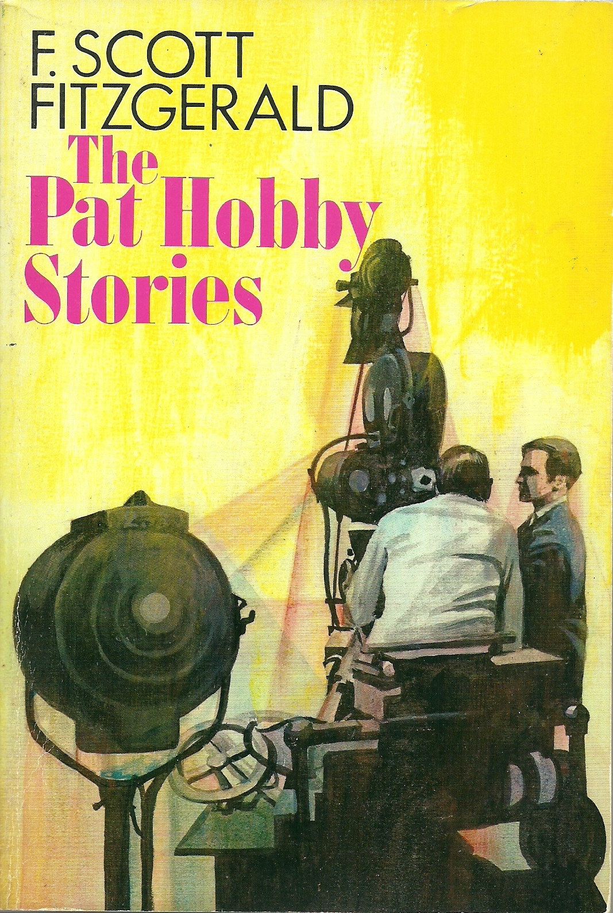

0
стр. з
0
сторінок

завантаження...

Фрэнсис Скотт Фицджеральд
Тайна Пэта Хобби и другие рассказы
Адаптировал Андрей Бессонов
Метод чтения Ильи Франка
Сontents
PAT HOBBY'S CHRISTMAS WISH
(Рождественское желание Пэта Хобби).
I
It was Christmas Eve in the studio (в студии был сочельник; Christmas — Рождество, eve — канун). By eleven o'clock in the morning, Santa Claus had called on most of the huge population according to each one's deserts (к одиннадцати утра Санта-Клаус навестил большую часть огромного населения /студии/, согласно заслугам каждого; to call — звать; называть; звонить; навещать, посещать; most — большая часть, большинство; each one — каждый человек). Sumptuous gifts from producers to stars, and from agents to producers arrived at offices and studio bungalows (роскошные подарки от продюсеров звёздам и от агентов продюсерам прибывали в кабинеты и студийные бунгало): on every stage one heard of the roguish gifts of casts to directors or directors to casts (на каждой сцене = в каждом съёмочном павильоне слышали про лукавые подарки актёрских составов режиссёрам или режиссёров актёрским составам; one — один, некто, какой-нибудь человек, «ты»; to hear — слышать; roguish — жуликоватый, коварный, лукавый, шаловливый, кокетливый от rogue — мошенник, плут); champagne had gone out from publicity office to the press (шампанское вышло = было отправлено от рекламного отдела прессе). And tips of fifties, tens and fives from producers, directors and writers fell like manna upon the white collar class (и чаевые в виде пятидесяток, десяток и пятёрок = купюр от продюсеров, режиссёров и писателей = сценаристов слетали как манна /небесная/ на класс белых воротничков; to fall — падать).
eve ['Jv], Claus [klLs], bungalow ['bANgqlqV], champagne [Sxm'peIn]
It was Christmas Eve in the studio. By eleven o'clock in the morning, Santa Claus had called on most of the huge population according to each one's deserts. Sumptuous gifts from producers to stars, and from agents to producers arrived at offices and studio bungalows: on every stage one heard of the roguish gifts of casts to directors or directors to casts; champagne had gone out from publicity office to the press. And tips of fifties, tens and fives from producers, directors and writers fell like manna upon the white collar class.
In this sort of transaction there were exceptions (в этом сорте взаимодействия = среди подобных взаимодействий имелись исключения). Pat Hobby, for example, who knew the game from twenty years' experience, had had the idea of getting rid of his secretary the day before (Пэт Хобби, например, который знал эту игру по опыту двадцати лет, задумал избавиться от своей секретарши днём раньше; to know; to get rid of — избавиться от от to get — зд.: стать, сделаться и rid — освобождённый). They were sending over a new one any minute (они присылали = должны были прислать новую с минуты на минуту: «в любую минуту»; over — зд.: в какое-то место, подчёркивает пункт назначения) —but she would scarcely expect a present the first day (но она бы едва ли ожидала подарок в первый /же/ день). Waiting for her, he walked the corridor, glancing into open offices for signs of life (поджидая её, он ходил по коридору, заглядывая в открытые кабинеты в поисках признаков жизни). He stopped to chat with Joe Hopper from the scenario department (он остановился поболтать с Джо Хоппером из сценарного отдела).
scarcely ['skeqsli], sign [saIn]
In this sort of transaction there were exceptions. Pat Hobby, for example, who knew the game from twenty years' experience, had had the idea of getting rid of his secretary the day before. They were sending over a new one any minute—but she would scarcely expect a present the first day. Waiting for her, he walked the corridor, glancing into open offices for signs of life. He stopped to chat with Joe Hopper from the scenario department.
'Not like the old days,' he mourned (/сейчас/ не как старые дни = не то, что прежде, — посетовал он), 'Then there was a bottle on every desk (тогда была бутылка на каждом столе; desk — письменный стол).' 'There're a few around (кое-где есть несколько /бутылок/; around — вокруг, кругом, во многих местах где-то).' 'Not many (не много).' Pat sighed (Пэт вздохнул). 'And afterwards we'd run a picture—made up out of cutting-room scraps (а после мы прокручивали картину — составленную из монтажных обрезков; to run — бежать; управлять, выполнять некоторую операцию; to make up — составлять из кусочков, сфабриковать /ложь/ от to make — делать, изготавливать и up — вверх, зд. указывает на достижение результата; cutting-room — монтажная комната от to cut — резать, монтировать /фильм/).' 'I've heard (я слыхал; to hear). All the suppressed stuff,' said Hopper (все непропущенные вещи, — сказал Хоппер; to suppress — подавлять, насильно прекращать, сдерживать; stuff — материя; штука, штуки, «фигня»). Pat nodded, his eyes glistening (Пэт кивнул, его глаза /при этом/ влажно заблестели). 'Oh, it was juicy (о, это было сочно = там было что посмотреть). You darned near ripped your guts laughing (ты, чёрт возьми, чуть не разрывал свои потроха, смеясь = можно было живот надорвать от смеха; darn/ed/ от to darn — штопать, частый эвфемизм damn — чёрт возьми от to damn — проклинать; near простореч. = nearly — почти от near — близко) —' He broke off as the sight of a woman, pad in hand, entering his office down the hall recalled him to the sorry present (он резко замолчал, так как вид женщины с блокнотом в руке, входящей в его кабинет в дальней части холла, вернул его к жалкому настоящему; to break off — прекратить говорить; оборвать, разорвать /помолвку.../ от to break — ломать и off — с, прочь; as — как, в то время как, так как; down — вниз, внизу, там, в отдалении; to recall — вспомнить, отозвать, вернуть к реальности).
mourn [mLn], sigh [saI], hear heard heard [hIq, hWd, hWd], glisten ['glIsqn], juicy ['GHsi], laugh [lRf]
'Not like the old days,' he mourned, 'Then there was a bottle on every desk.' 'There're a few around.' 'Not many.' Pat sighed. 'And afterwards we'd run a picture—made up out of cutting-room scraps.' 'I've heard. All the suppressed stuff,' said Hopper. Pat nodded, his eyes glistening. 'Oh, it was juicy. You darned near ripped your guts laughing—' He broke off as the sight of a woman, pad in hand, entering his office down the hall recalled him to the sorry present.
'Gooddorf has me working over the holiday,' he complained bitterly (Гуддорф заставил меня работать на праздниках, — пожаловался он с горечью: «горько»). 'I wouldn't do it (я бы не стал делать это).' 'I wouldn't either except my four weeks are up next Friday (я тоже не стал бы, за исключением того что = да вот только мои четыре недели истекают в следующую пятницу; either — в отриц. предложениях тоже; up — вверх, наверху; истекший), and if I bucked him he wouldn't extend me (и если я взбрыкну = возражу ему, он не продлит меня = мой контракт).' As he turned away Hopper knew that Pat was not being extended anyhow (пока он отворачивался = отворачиваясь, Хоппер знал, что /контракт/ Пэта не будут продлевать в любом случае; as — как, в то время как, пока; to know). He had been hired to script an old-fashioned horse-opera (он был нанят = его наняли написать сценарий к старомодной лошадиной опере = вестерну; old — старый, fashion — мода) and the boys who were 'writing behind him'—that is working over his stuff—said that all of it was old and some didn't make sense (и ребята, которые «писали за ним», то есть переделывали его работу, говорили, что вся она старьё, а кое-что лишено смысла; to work over — переделывать от to work — работать и over — над, через, поверх, снова; to make sense — иметь смысл, быть осмысленным: «делать смысл»).
either ['aIDqr] или ['JDqr], old-fashioned [qVld'fxSqnd], sense [sens]
'Gooddorf has me working over the holiday,' he complained bitterly. 'I wouldn't do it.' 'I wouldn't either except my four weeks are up next Friday, and if I bucked him he wouldn't extend me.' As he turned away Hopper knew that Pat was not being extended anyhow. He had been hired to script an old-fashioned horse-opera and the boys who were 'writing behind him'—that is working over his stuff—said that all of it was old and some didn't make sense.
'I'm Miss Kagle,' said Pat's new secretary (я мисс Кегл, — сказала новая секретарша Пэта). She was about thirty-six, handsome, faded, tired, efficient (ей было около тридцати шести, величавая, увядшая, усталая, деловитая; handsome — о мужчине красивый традиционной мужской красотой, о женщине величавая, яркая, видная). She went to the typewriter, examined it, sat down and burst into sobs (она пошла к пишущей машинке, осмотрела её, села и разразилась рыданиями; to sit down — сесть от to sit — сидеть и down — вниз; to burst — разразиться, прорваться, лопнуть). Pat started (Пэт вздрогнул). Self-control, from below anyhow, was the rule around here (самоконтроль, по крайней мере, снизу = со стороны нижестоящих сотрудников, был здесь главным принципом: «правилом»; from below — снизу: «из/от внизу»; around here — здесь, у нас тут от around — вокруг и here — здесь). Wasn't it bad enough to be working on Christmas Eve (разве не было достаточно плохо = мало того, что пришлось работать в сочельник)? Well—less bad than not working at all (ну — не так плохо, как не работать совсем; less — меньше). He walked over and shut the door (он подошёл и захлопнул дверь = подошёл к двери и захлопнул её; over — зд.: в какое-то место, подчёркивает пункт назначения; to shut) —someone might suspect him of insulting the girl (кто-нибудь мог заподозрить его в оскорблении девушки; to insult).
secretary ['sekrqtqri], handsome ['hxndsqm], efficient [I'fISqnt], suspect (подозревать) [sq'spekt]
'I'm Miss Kagle,' said Pat's new secretary. She was about thirty-six, handsome, faded, tired, efficient. She went to the typewriter, examined it, sat down and burst into sobs. Pat started. Self-control, from below anyhow, was the rule around here. Wasn't it bad enough to be working on Christmas Eve? Well—less bad than not working at all. He walked over and shut the door—someone might suspect him of insulting the girl.
'Cheer up,' he advised her (развеселись = не вешай нос, — посоветовал он ей). 'This is Christmas (это = сейчас Рождество).' Her burst of emotion had died away (её взрыв эмоций /уже/ утих; to die away — затихнуть от to die — умереть и away — прочь). She sat upright now, choking and wiping her eyes (она сидела прямо теперь, захлёбываясь и вытирая глаза; to sit; to choke — поперхнуться, задыхаться, душить; her — её). 'Nothing's as bad as it seems,' he assured her unconvincingly (ничто не бывает так плохо, как кажется, — уверял он её неубедительно). 'What's it, anyhow (а вообще, что это = в чём дело)? They going to lay you off (они собираются тебя сократить? разг. упрощ. вместо They are going... или Are they going...; to lay off — уволить, сократить от to lay — положить и off — прочь, с)?' She shook her head, did a sniffle to end sniffles, and opened her note book (она покачала головой, шмыгнула носом, чтобы прекратить шмыгания: «сделала шмыгание», и открыла свою записную книжку; to shake — трясти, качать, пожимать /руку/). 'Who you been working for (на кого ты работала /раньше, до сих пор/? разг. упрощ. вместо Who have you been...; to work for — работать на кого-либо, в какой-либо фирме: «работать для»)?'
advise [qd'vaIz], assure [q'SVqr], unconvincingly [Ankqn'vInsINli]
'Cheer up,' he advised her. 'This is Christmas.' Her burst of emotion had died away. She sat upright now, choking and wiping her eyes. 'Nothing's as bad as it seems,' he assured her unconvincingly. 'What's it, anyhow? They going to lay you off?' She shook her head, did a sniffle to end sniffles, and opened her note book. 'Who you been working for?'
She answered between suddenly gritted teeth (она ответила сквозь внезапно сжатые зубы; tooth — зуб, teeth — зубы). 'Mr Harry Gooddorf (на мистера Гарри Гуддорфа).' Pat widened his permanently bloodshot eyes (Пэт расширил = широко раскрыл свои вечно воспалённые глаза: «налитые кровью» от blood — кровь и shoot — стрелять; бросаться; выпускать побеги, почки). Now he remembered he had seen her in Harry's outer office (теперь он вспомнил, что видел её /раньше/ в приёмной Гарри: «во внешнем кабинете»; to see), 'Since 1921 (с 1921 года). Eighteen years (восемнадцать лет). And yesterday he sent me back to the department (а вчера он отослал меня обратно в отдел; to send). He said I depressed him—I reminded him he was getting on (он сказал, что я его расстраиваю — /что/ я напоминаю ему, что он стареет: «расстраивала, напоминала»; to get on — справляться, продвигаться в каком-то деле, продолжать дело, особенно после перерыва, стареть от to get — зд.: становиться, оказываться и on — зд.: дальше).' Her face was grim (её лицо было угрюмо). 'That isn't the way he talked after hours eighteen years ago (не так он разговаривал после рабочего дня восемнадцать лет назад: «это не тот способ»; way — путь, способ, образ действия; after hours — после работы, после закрытия: «после /рабочих/ часов»).' 'Yeah, he was a skirt chaser then,' said Pat (да, он был бабником тогда, — сказал Пэт; skirt chaser — бабник: «преследователь юбок» от skirt — юбка и to chase — гнаться за кем-либо, чем-либо).
answer ['Rnsqr], bloodshot ['blAdSPt], since [sIns], remind [rI'maInd], chase [CeIs]
She answered between suddenly gritted teeth. 'Mr Harry Gooddorf.' Pat widened his permanently bloodshot eyes. Now he remembered he had seen her in Harry's outer office, 'Since 1921. Eighteen years. And yesterday he sent me back to the department. He said I depressed him—I reminded him he was getting on.' Her face was grim. 'That isn't the way he talked after hours eighteen years ago.' 'Yeah, he was a skirt chaser then,' said Pat.
'I should have done something then when I had the chance (я должна была сделать что-нибудь тогда — когда у меня был шанс).' Pat felt righteous stirrings (Пэт ощутил праведное волнение: «волнения»; to feel). 'Breach of promise (нарушение обещания; часто — обещания жениться)? That's no angle (кто же так поступает: «это не метод»; angle — угол, точка зрения, разг. план действий)!' 'But I had something to clinch it (но у меня было кое-что, чтобы уладить это; to clinch — договориться, заключить договор; войти в клинч; закрепить забитый гвоздь, загнув его). Something bigger than breach of promise (что-то большее, чем нарушение обещания). I still have too (да и до сих пор есть; still — всё ещё, до сих пор; too — тоже, к тому же, да и). But then, you see, I thought I was in love with him (но с другой стороны, видите ли, я думала, что влюблена в него; then — тогда, затем, с другой стороны; to think; to be in love with — быть влюблённым в кого-либо: «быть в любви с»).' She brooded for a moment (она на секунду погрузилась в печальные мысли; to brood — высиживать яйца; задуматься /о чём-либо плохом/). 'Do you want to dictate something now (вы хотите надиктовать что-нибудь сейчас)?' Pat remembered his job and opened a script (Пэт вспомнил о своей работе и открыл сценарий).
righteous ['raICqs], stirring ['stWrIN], promise ['prPmIs]
'I should have done something then when I had the chance.' Pat felt righteous stirrings. 'Breach of promise? That's no angle!' 'But I had something to clinch it. Something bigger than breach of promise. I still have too. But then, you see, I thought I was in love with him.' She brooded for a moment. 'Do you want to dictate something now?' Pat remembered his job and opened a script.
'It's an insert,' he began, 'Scene 114A (это перебивка, — начал он, — сцена 114А; insert — вставка; кино перебивка; to begin).' Pat paced the office (Пэт мерил шагами кабинет; to pace — вышагивать, ходить взад-вперёд, мерить шагами). 'Ext. Long Shot of the Plains,' he decreed (натурная съёмка, общий план /Великих/ равнин, — постановил он; ext. = exterior — экстерьер; long shot — общий план: «длинная съёмка»). 'Buck and Mexicans approaching the hyacenda (Бак и мексиканцы приближаются: «приближающиеся» к аясенде; hyacenda искаж. = hacienda — асьенда).' 'The what (к чему)?' 'The hyacenda—the ranch house (аясенда — дом на ранчо).' He looked at her reproachfully (он посмотрел на неё укоризненно), '114 B. Two Shot: Buck and Pedro (/сцена/ 114Б. В кадре два человека — Бак и Педро; two shot от two — два и shot — съёмка; кадр). Buck: "The dirty son-of-a-bitch. I'll tear his guts out!" (Бак: «Грязный сукин сын. Я ему кишки вырву!»; to tear out — вырвать: «рвать наружу»; guts — внутренности)' Miss Kagle looked up, startled (мисс Кегл взглянула вверх = подняла глаза, всполошившаяся; to startle — пугать, заставлять вздрогнуть, встревожить). 'You want me to write that down (вы хотите, чтобы я записала это; to write down — записать: «написать вниз»)?' 'Sure (конечно).' 'It won't get by (это не пройдёт; to get by — выживать, справляться с трудом от to get — получать; оказываться, становиться и by — мимо, около).'
exterior [Ik'stIqriqr], reproachfully [rI'prqVCfqli], sure [SVqr]
'It's an insert,' he began, 'Scene 114A.' Pat paced the office. 'Ext. Long Shot of the Plains,' he decreed. 'Buck and Mexicans approaching the hyacenda.' 'The what?' 'The hyacenda—the ranch house.' He looked at her reproachfully, '114 B. Two Shot: Buck and Pedro. Buck: "The dirty son-of-a-bitch. I'll tear his guts out!"' Miss Kagle looked up, startled. 'You want me to write that down?' 'Sure.' 'It won't get by.'
'I'm writing this (я пишу это = этот сценарий). Of course, it won't get by (конечно, это не пройдёт). But if I put "you rat" the scene won't have any force (но если я поставлю = напишу «ах ты, крыса», эта сцена не будет иметь никакой силы).' 'But won't somebody have to change it to "you rat" (но разве кому-то не придётся поменять это на «ах ты, крыса»; to have to — быть вынужденным, обязанным, «приходится»)?' He glared at her—he didn't want to change secretaries every day (он гневно воззрился на неё — он не хотел менять секретарш каждый день). 'Harry Gooddorf can worry about that (Гарри Гуддорф может беспокоиться об этом = а об этом пусть Г.Г. беспокоится).' 'Are you working for Mr Gooddorf?' Miss Kagle asked in alarm (вы работаете на мистера Гуддорфа? — спросила мисс Кегл в тревоге). 'Until he throws me out (пока он меня не вышвырнет; to throw out — выкидывать: «бросать наружу»).' 'I shouldn't have said (мне не следовало говорить...) —' 'Don't worry,' he assured her (не беспокойтесь, — обнадёжил он её). 'He's no pal of mine anymore (он мне больше не приятель; no — никакой, mine — мой /используется без существительного после или в выражении of mine/). Not at three-fifty a week, when I used to get two thousand (не за триста пятьдесят в неделю, когда раньше я получал две тысячи; three /hundred and/ fifty — три /сотни/ пятьдесят; used to do something — когда-то раньше что-то делал). . . Where was I (на чём я остановился: «где я был»)?'
scene [sJn], alarm [q'lRm], used to ['jHst tq]
'I'm writing this. Of course, it won't get by. But if I put "you rat" the scene won't have any force.' 'But won't somebody have to change it to "you rat"?' He glared at her—he didn't want to change secretaries every day. 'Harry Gooddorf can worry about that.' 'Are you working for Mr Gooddorf?' Miss Kagle asked in alarm. 'Until he throws me out.' 'I shouldn't have said—' 'Don't worry,' he assured her. 'He's no pal of mine anymore. Not at three-fifty a week, when I used to get two thousand . . . Where was I?'
He paced the floor again, repeating his last line aloud with relish (он снова стал мерить шагами пол: «мерил шагами», повторяя свою последнюю реплику вслух с наслаждением; line — линия; строчка; реплика). But now it seemed to apply not to a personage of the story but to Harry Gooddorf (но теперь она, казалось, относилась не к персонажу истории, а к Гарри Гуддорфу: «она казалась относиться»; to seem — казаться; to apply — прилагать/ся/, относить/ся/, применять/ся/). Suddenly he stood still, lost in thought (вдруг он встал как вкопанный, в глубокой задумчивости: «затерянный в мысли»; to stand — стоять; still — неподвижный, бесшумный; to lose — терять, утратить). 'Say, what is it you got on him (скажите, что у вас есть на него: «что это, что есть у вас на него»; got = have got — иметь от to get — зд.: получать; раздобывать)? You know where the body is buried (вы знаете, где закопано тело)?' 'That's too true to be funny (это слишком правдиво = точно, чтобы быть смешным).' 'He knock somebody off (он кого-то кокнул? разг. упрощ. вместо Did he knock...; to knock off — ненадолго прервать работу, «свалить» — уйти после работы, стащить, убрать, убить, выпороть от to knock — стучать и off — прочь, с)?' 'Mr Hobby, I'm sorry I ever opened my mouth (мистер Хобби, я жалею, что вообще открыла рот; sorry — сожалеющий; ever — когда-либо; вообще).' 'Just call me Pat (зовите меня просто Пэт). What's your first name (как вас по имени: «каково ваше имя»? first name — личное: «первое» имя, в отличие от last name — фамилия: «последнее имя»)?' 'Helen (Хелен).' 'Married (замужем? to marry — жениться; выходить замуж)?' 'Not now (сейчас нет: «не сейчас»).' 'Well, listen Helen (что ж, послушайте, Хелен): What do you say we have dinner? (что вы скажете, /если/ мы пообедаем = как насчёт пообедать вместе?)'
apply [q'plaI], thought [TLt], bury ['beri], knock [nPk]
He paced the floor again, repeating his last line aloud with relish. But now it seemed to apply not to a personage of the story but to Harry Gooddorf. Suddenly he stood still, lost in thought. 'Say, what is it you got on him? You know where the body is buried?' 'That's too true to be funny.' 'He knock somebody off?' 'Mr Hobby, I'm sorry I ever opened my mouth.' 'Just call me Pat. What's your first name?' 'Helen.' 'Married?' 'Not now.' 'Well, listen Helen: What do you say we have dinner?'
II
On the afternoon of Christmas Day he was still trying to get the secret out of her (днём в день Рождества он всё ещё пытался вытащить тайну из неё; afternoon — дневное время между полуднем и вечером; to get — зд.: получить; раздобыть). They had the studio almost to themselves (студия была почти полностью в их распоряжении: «они имели студию почти себе») —only a skeleton staff of technical men dotted the walks and the commissary (только скелетный = самый необходимый персонал, /состоявший/ из технических людей = работников, населял коридоры и буфет; to dot — отмечать точкой, покрывать пятнышками, ставить точку над i, усыпать или покрывать поверхность, местность /о некотором числе предметов/ от dot — точка; walk — прогулка, тропинка, дорожка; commissary — амер. буфет, столовая на киностудии или в учреждениях /военных базах, тюрьмах и т. д./). They had exchanged Christmas presents (они /уже/ обменялись рождественскими подарками). Pat gave her a five dollar bill, Helen bought him a white linen handkerchief (Пэт подарил ей пятидолларовую купюру, Хелен купила ему белый полотняный носовой платок; to give; to buy). Very well he could remember the day when many dozen such handkerchiefs had been his Christmas harvest (очень хорошо мог он вспомнить день = время, когда многие дюжины таких платков были его рождественским урожаем = уловом).
secret ['sJkrqt], skeleton ['skelItqn], staff [stRf], technical ['teknIkql], handkerchief ['hxNkqCJf], dozen ['dAzqn]
On the afternoon of Christmas Day he was still trying to get the secret out of her. They had the studio almost to themselves—only a skeleton staff of technical men dotted the walks and the commissary. They had exchanged Christmas presents. Pat gave her a five dollar bill, Helen bought him a white linen handkerchief. Very well he could remember the day when many dozen such handkerchiefs had been his Christmas harvest.
The script was progressing at a snail's pace but their friendship had considerably ripened (сценарий продвигался улиточным шагом = черепашьим шагом, но их дружба ощутимо созрела = окрепла). Her secret, he considered, was a very valuable asset (её тайна, думал он, была очень ценным активом; to consider — обдумывать, подумывать = склоняться к решению, полагать, считать, думать, принимать во внимание), and he wondered how many careers had turned on just such an asset (и он задавался вопросом, сколько карьер строилось как раз на таком активе; how many — сколько: «как много»; to turn on something — зд.: основываться на чём-либо, зависеть от чего-либо: «вращаться на чём-либо»). Some, he felt sure, had been thus raised to affluence (некоторые, он был уверен: «чувствовал себя», были так вознесены к богатству; to feel; to raise — поднимать). Why, it was almost as good as being in the family, and he pictured an imaginary conversation with Harry Gooddorf (да ведь это было почти так же хорошо, как быть в семье = в мафии, и он представлял себе воображаемый разговор с Гарри Гуддорфом; why — зд.: да ведь, ух ты, ба!). 'Harry, it's this way (Гарри, вот как обстоят дела: «это вот так»; way — путь, способ, образ действия). I don't think my experience is being made use of (я не думаю, что мой опыт применяется /как следовало бы/; to make use of — использовать, применять: «сделать пользу, выгоду из»). It's the young squirts who ought to do the writing—I ought to do more supervising (это юным соплякам следует заниматься писаниной — мне следует заниматься больше руководством; it is … that/who... — стандартная конструкция, привлекающая внимание к подлежащему — Это они должны...).' 'Or—?' 'Or else,' said Pat firmly (А не то что? — То самое, — сказал Пэт твёрдо; or — или; else — помимо, кроме, ещё; or else — в противном случае, особенно как угроза или предупреждение).
progress (продвигаться, прогрессировать) [prq'gres], considerably [kqn'sIdqrqbli], valuable ['vxljuqbl], imaginary [I'mxGInqri], ought to ['Lt tq]
The script was progressing at a snail's pace but their friendship had considerably ripened. Her secret, he considered, was a very valuable asset, and he wondered how many careers had turned on just such an asset. Some, he felt sure, had been thus raised to affluence. Why, it was almost as good as being in the family, and he pictured an imaginary conversation with Harry Gooddorf. 'Harry, it's this way. I don't think my experience is being made use of. It's the young squirts who ought to do the writing—I ought to do more supervising.' 'Or—?' 'Or else,' said Pat firmly.
He was in the midst of his day dream when Harry Gooddorf unexpectedly walked in (он был в середине = всецело поглощён своими мечтаниями, когда Гарри Гуддорф неожиданно вошёл /в кабинет/; day dream — мечтания: «дневное сновидение»; to walk in — войти от to walk — ходить и in — в). 'Merry Christmas, Pat,' he said jovially (с Рождеством, Пэт, — сказал он весело; merry — весёлый). His smile was less robust when he saw Helen (его улыбка была = стала менее уверенной, когда он увидел Хелен; robust — здоровый, полный сил, крепкий, бескомпромиссный, с ярким вкусом или запахом; to see), 'Oh, hello Helen—didn't know you and Pat had got together (о, привет, Хелен — не знал, что ты и Пэт собрались вместе = теперь в одной команде; to get together — собраться, чтобы пообщаться или поработать вместе: «оказаться вместе»). I sent you a remembrance over to the script department (я послал тебе напоминание в сценарный отдел; to send; remembrance — воспоминание, поминовение, напоминание; over — зд.: в какое-то место, подчёркивает пункт назначения).' 'You shouldn't have done that (тебе не надо было этого делать).'
unexpectedly ["AnIk'spektIdli], robust [rqV'bAst]
He was in the midst of his day dream when Harry Gooddorf unexpectedly walked in. 'Merry Christmas, Pat,' he said jovially. His smile was less robust when he saw Helen, 'Oh, hello Helen—didn't know you and Pat had got together. I sent you a remembrance over to the script department.' 'You shouldn't have done that.'
Harry turned swiftly to Pat (Гарри быстро повернулся к Пэту). 'The boss is on my neck,' he said (босс на моей шее = подгоняет, давит на меня, — сказал он). 'I've got to have a finished script Thursday (я должен иметь законченный сценарий в четверг; to have got to = to have to — быть обязанным, вынужденным).' 'Well, here I am,' said Pat. 'You'll have it. Did I ever fail you? (ну, вот он я: «здесь я есть», — сказал Пэт, — ты получишь его. Я когда-нибудь подводил тебя?)' 'Usually,' said Harry. 'Usually (обычно /да/, — сказал Гарри, — обычно /да/).' He seemed about to add more when a call boy entered with an envelope and handed it to Helen Kagle (он, казалось, собирался прибавить ещё = сказать что-то ещё, когда мальчик-посыльный вошёл с конвертом и вручил его Хелен Кегл: «казался собираться прибавить»; to seem — казаться; to be about to do something — собираться сделать что-либо: «быть около сделать»; call boy — посыльный, мальчик на побегушках, мальчик, созывающий актёров на сцену в театре, мальчик по вызову от to call — звать и boy — мальчик) —whereupon Harry turned and hurried out (и Гарри повернулся и поспешил наружу = выйти; whereupon — после чего, сразу после чего, вследствие чего).
usually ['jHZqli], envelope ['envqlqVp], hurry ['hAri]
Harry turned swiftly to Pat. 'The boss is on my neck,' he said. 'I've got to have a finished script Thursday.' 'Well, here I am,' said Pat. 'You'll have it. Did I ever fail you?' 'Usually,' said Harry. 'Usually.' He seemed about to add more when a call boy entered with an envelope and handed it to Helen Kagle—whereupon Harry turned and hurried out.
'He'd better get out!' burst forth Miss Kagle, after opening the envelope (Ему бы лучше убраться! — взорвалась мисс Кегл, открыв конверт: «после открывания»; He had better do something; to burst forth — ворваться, прорваться от to burst — разразиться, прорваться, лопнуть и forth — наружу, вперёд, о том, что появляется или становится видным). 'Ten bucks—just ten bucks—from an executive—after eighteen years (десять баксов — всего десять баксов — от начальника — после восемнадцати лет; buck; executive — руководитель или менеджер высшего звена, букв. исполнительный).' It was Pat's chance (это был шанс Пэта). Sitting on her desk he told her his plan (сидя на её столе, он поведал ей свой план; to tell). 'It's soft jobs for you and me,' he said (это даст нам с тобой непыльную работу: «это мягкие работы для тебя и меня», — сказал он). 'You the head of a script department, me an associate producer (ты /будешь/ главой сценарного отдела, я /буду/ ассоциированным продюсером; associate — сущ. коллега, сотрудник, подчинённый, товарищ; прил. ассоциированный, связанный; выполняющий скорее вспомогательную, но важную работу). We're on the gravy train for life (мы в шоколаде на /всю/ жизнь; gravy train — синекура от gravy — подливка, амер. сленг лёгкие деньги и train — поезд, караван, кортеж, цепь событий) —no more writing—no more pounding the keys (никакой больше писанины, никакого больше стука по клавишам; to pound — молотить, колотить, сильно и долго бить). We might even—we might even—if things go good we could get married (мы можем даже... мы можем даже... если всё пойдёт хорошо, мы могли бы пожениться; might — мочь — о действии, которое не запланировано точно, но не исключено; things — вещи = всё; to get married — пожениться: «стать женатыми»).'
executive [Ig'zekjqtIv], associate (партнёр, товарищ, коллега) [q'sqVSiqt], gravy ['greIvi]
'He'd better get out!' burst forth Miss Kagle, after opening the envelope. 'Ten bucks—just ten bucks—from an executive—after eighteen years.' It was Pat's chance. Sitting on her desk he told her his plan. 'It's soft jobs for you and me,' he said. 'You the head of a script department, me an associate producer. We're on the gravy train for life—no more writing—no more pounding the keys. We might even—we might even—if things go good we could get married.'
She hesitated a long time (она колебалась долгое время). When she put a fresh sheet in the typewriter Pat feared he had lost (когда она вставила свежий лист в пишущую машинку, Пэт испугался, что проиграл; to put; to lose). 'I can write it from memory,' she said (я могу написать это по памяти, — сказала она). 'This was a letter he typed himself on February 3rd, 1921 (это было письмо, которое он напечатал сам 3 февраля 1921 года). He sealed it and gave it to me to mail (он запечатал его и дал его мне, чтобы отправить = чтобы я отправила его; to give) —but there was a blonde he was interested in, and I wondered why he should be so secret about a letter (но была блондинка, которой он интересовался, и я подумала — почему бы ему быть = зачем ему быть таким скрытным с каким-то письмом; to be interested in — быть заинтересованным в, интересоваться).' Helen had been typing as she talked, and now she handed Pat a note (Хелен печатала, пока говорила, и теперь она вручила Пэту записку).
hesitate ['hezIteIt], blonde [blPnd], interested ['IntrqstId], wonder ['wAndqr]
She hesitated a long time. When she put a fresh sheet in the typewriter Pat feared he had lost. 'I can write it from memory,' she said. 'This was a letter he typed himself on February 3rd, 1921. He sealed it and gave it to me to mail—but there was a blonde he was interested in, and I wondered why he should be so secret about a letter.' Helen had been typing as she talked, and now she handed Pat a note.
To Will Bronson (Уиллу Бронсону).
First National Studios (студия First National /Pictures/ — реальная производственная компания, с которой работали такие звёзды кино, как Чарли Чаплин и Мэри Пикфорд; first — первый; national — национальный; picture — картина, кинокартина).
Personal (личное).
Dear Bill (дорогой Билл; dear — дорогой, также нейтральное обращение в письмах):
We killed Taylor (мы убили Тейлора). We should have cracked down on him sooner (нам следовало прижать его раньше: «скорее»; to crack down on — принять меры против кого-либо или чего-либо, прищучить, прижать от to crack — треснуть, дать трещину, издать резкий звук; «расколоть/ся/», выдать или вынудить выдать информацию; расшифровать, сломать шифр; down — вниз; on — на). So why not shut up (так почему бы не заткнуться; to shut up — заткнуться, заткнуть от to shut — захлопнуть и up зд.: указывает на достижение результата).
Yours, Harry (твой = с уважением, Гарри).
national ['nxSqnql], personal ['pWsqnql]
To Will Bronson
First National Studios
Personal
Dear Bill:
We killed Taylor. We should have cracked down on him sooner. So why not shut up.
Yours, Harry
'Get it?' Helen said (понимаешь это = ты понял? — сказала Хелен). 'On February 1st, 1921, somebody knocked off William Desmond Taylor, the director (1 февраля 1921 года кто-то пришил Уильяма Дезмонда Тейлора, режиссёра; to knock off). And they've never found out who (и так и не узнали, кто /это сделал/: «они не обнаружили»; never — никогда, так и не; to find out — обнаружить от to find — найти и out — наружу).'
director [d(a)I'rektqr], find found found [faInd, faVnd, faVnd]
'Get it?' Helen said. 'On February 1st, 1921, somebody knocked off William Desmond Taylor, the director. And they've never found out who.'
III
For eighteen years she had kept the original note, envelope and all (восемнадцать лет она хранила оригинал записки: «оригинальную записку», прямо в конверте: «конверт и всё»; to keep — хранить, держать, сохранять; ...and all — и так далее, и всё такое прочее, и всё что полагается, «полный комплект»: «и всё»). She had sent only a copy to Bronson, tracing Harry Gooddorf's signature (Бронсону она отправила только копию, срисовав подпись Гарри Гуддорфа; to send; to trace — выследить, проследить; копировать, калькировать). 'Baby, we're set!' said Pat (детка, дело на мази! — сказал Пэт; set от to set — устанавливать, приводить в нужное положение, состояние, давать /задание/, устанавливать /часы/). 'I always thought it was a girl got Taylor (я всегда думал, что Тейлора убила девушка: «я думал, это была девушка убила Тейлора»; to think; to get зд.: добраться до кого-либо; победить; убить).'
original [q'rIGqnql], copy ['kPpi], signature ['sIgnqCqr]
For eighteen years she had kept the original note, envelope and all. She had sent only a copy to Bronson, tracing Harry Gooddorf's signature. 'Baby, we're set!' said Pat. 'I always thought it was a girl got Taylor.'
He was so elated that he opened a drawer and brought forth a half-pint of whiskey (он был в таком восторге: «приведённый в восторг», что открыл выдвижной ящик и извлёк полпинты виски; to elate — приводить в восторг, вызывать душевный подъём, заставлять ликовать; to bring forth — достать; сделать очевидным, показать от to bring — приносить и forth — наружу, вперёд). Then, with an afterthought, he demanded (затем, с запоздалой мыслью = спохватившись, он спросил; afterthought — запоздалое соображение от after — после и thought — мысль; to demand — вопрошать, спрашивать, требовать, допытываться): 'Is it in a safe place (она в надёжном месте)?' 'You bet it is (уж поверь мне, да: «ты побейся об заклад, что она есть»). He'd never guess where (он бы никогда не угадал, где = ему никогда не угадать, где она).' 'Baby, we've got him! (детка, он у нас в руках! «мы получили его»; to get)' Cash, cars, girls, swimming pools swam in a glittering montage before Pat's eye (деньги, машины, девушки, бассейны плавали в сверкающем монтаже перед глазами Пэта: «перед глазом»; cash — наличные; to swim — плавать; swimming pool — плавательный бассейн).
drawer [drLr], pint [paInt], whiskey ['wIski], demand [dI'mRnd], guess [ges], montage [mPn'tRZ]
He was so elated that he opened a drawer and brought forth a half-pint of whiskey. Then, with an afterthought, he demanded: 'Is it in a safe place?' 'You bet it is. He'd never guess where.' 'Baby, we've got him!' Cash, cars, girls, swimming pools swam in a glittering montage before Pat's eye.
He folded the note, put it in his pocket, took another drink and reached for his hat (он сложил записку, положил её в карман, выпил ещё: «взял ещё одну выпивку» и потянулся за шляпой; to put; to take — брать). 'You going to see him now?' Helen demanded in some alarm (ты собираешься увидеть = встретиться с ним сейчас? — спросила Хелен в некоторой тревоге; You are going to...). 'Hey, wait till I get off the lot (эй, подожди, пока я уйду со студии; to get зд.: оказаться где-либо; off — с, прочь; lot зд.: амер. участок земли, предназначенный для какой-либо деятельности; автостоянка; территория рядом с киностудией, которую могут использовать для натурных съёмок). I don't want to get murdered (я не хочу, чтобы меня убили: «сделаться убитой»).' 'Don't worry (не беспокойся)! Listen I'll meet you in "the Muncherie" at Fifth and La Brea—in one hour (послушай, я встречусь с тобой = давай встретимся в /баре/ «Манчери» на /углу/ Пятой и Ла-Бри — через час; название бара “ The Muncherie” образовано от to munch — жевать, чавкать, munchery — сленг еда, жрачка по образцу слов типа brasserie — кафе во французском стиле; Fifth = West 5th Street; La Brea Avenue).'
fold [fqVld], murder ['mWdqr], worry ['wAri], hour [aVqr]
He folded the note, put it in his pocket, took another drink and reached for his hat. 'You going to see him now?' Helen demanded in some alarm. 'Hey, wait till I get off the lot. I don't want to get murdered.' 'Don't worry! Listen I'll meet you in "the Muncherie" at Fifth and La Brea—in one hour.'
As he walked to Gooddorf's office he decided to mention no facts or names within the walls of the studio (пока он шёл к кабинету Гуддорфа, он решил не упоминать никаких фактов или имён в стенах студии). Back in the brief period when he had headed a scenario department (когда-то, в недолгий период, когда он возглавлял сценарный отдел; back — назад, обратно; раньше или давно /используется перед более конкретным указанием времени, ср.: back in 1880 — давно, в 1880 году/) Pat had conceived a plan to put a dictaphone in every writer's office (Пэт задумал план = придумал поместить диктофон в кабинет каждого сценариста: «писателя»; to conceive — зачать ребёнка, забеременеть; задумать, замыслить, помыслить, представить себе). Thus their loyalty to the studio executives could be checked several times a day (так их лояльность студийным начальникам могла быть проверена = можно было проверять несколько раз на дню).
studio ['stjHdiqV], brief [brJf], period ['pIqriqd], conceive [kqn'sJv], loyalty ['lOIqlti]
As he walked to Gooddorf's office he decided to mention no facts or names within the walls of the studio. Back in the brief period when he had headed a scenario department Pat had conceived a plan to put a dictaphone in every writer's office. Thus their loyalty to the studio executives could be checked several times a day.
The idea had been laughed at (над этой идеей посмеялись; to laugh at — смеяться над чем-либо, кем-либо). But later, when he had been 'reduced back to a writer' (но потом, когда он был «низведён обратно к /статусу/ сценариста»; to reduce — уменьшать, сокращать; ввергнуть, низвести к низшему состоянию, довести до отчаянных поступков, покорить), he often wondered if his plan was secretly followed (он часто задавался вопросом, не последовали ли втайне его плану: «не был ли его план втайне последован»; if — если, ли; to follow — следовать, преследовать). Perhaps some indiscreet remark of his own was responsible for the doghouse where he had been interred for the past decade (возможно, какое-то его собственное неосмотрительное замечание было ответственно за ту конуру: «собачий дом», где он был погребён последнее десятилетие; indiscreet — неосторожный, неосмотрительный; болтливый, нескромный от in- — не- и discreet — скрытный, осторожный, сделанный втайне; of someone's own — чей-либо собственный от own — собственный). So it was with the idea of concealed dictaphones in mind, dictaphones which could be turned on by the pressure of a toe, that he entered Harry Gooddorf's office (так что именно с мыслью о скрытых диктофонах на уме, о диктофонах, которые могли быть включены нажатием пальца ноги, вошёл он в кабинет Гарри Гуддорфа; it was... that — именно — выражение, привлекающее внимание к чему-либо; to turn on — включить от to turn — поворачивать, вращать, превращать и on зд.: включённый).
reduce [rI'djHs], perhaps [pq'hxps], decade ['dekeId], pressure ['preSqr], toe [tqV]
The idea had been laughed at. But later, when he had been 'reduced back to a writer', he often wondered if his plan was secretly followed. Perhaps some indiscreet remark of his own was responsible for the doghouse where he had been interred for the past decade. So it was with the idea of concealed dictaphones in mind, dictaphones which could be turned on by the pressure of a toe, that he entered Harry Gooddorf's office.
'Harry—' he chose his words carefully, 'do you remember the night of February 1st, 1921? (Гарри... — он подбирал слова осторожно, — ты помнишь ночь 1 февраля 1921 года? to choose — выбирать)' Somewhat flabbergasted, Gooddorf leaned back in his swivel chair (несколько ошарашенный, Гуддорф откинулся назад в своём вращающемся стуле: «шарнирном»; to lean — опираться, откинуться, положить /локти на стол и т.п./). 'What (что)?' 'Try and think (постарайся и подумай = постарайся подумать). It's something very important to you (это кое-что очень важное для тебя).' Pat's expression as he watched his friend was that of an anxious undertaker (выражение лица Пэта, пока он смотрел на своего товарища, было выражением обеспокоенного гробовщика; that — это, то, зд.: заменяет “expression”). 'February 1st, 1921.' Gooddorf mused. 'No (1 февраля 1921 года, — задумчиво сказал Гуддорф. — Нет). How could I remember (как бы я мог запомнить)? You think I keep a diary (ты думаешь, я веду дневник; to keep — держать, хранить, вести /записи/)? I don't even know where I was then (я даже не знаю, где я был тогда).' 'You were right here in Hollywood (ты был прямо здесь, в Голливуде).' 'Probably (возможно). If you know, tell me (если ты знаешь, скажи мне).' 'You'll remember (ты вспомнишь).'
carefully ['keqfqli], swivel ['swIvql], anxious ['xNkSqs], diary ['daIqri], Hollywood ['hPlIwVd]
'Harry—' he chose his words carefully, 'do you remember the night of February 1st, 1921?' Somewhat flabbergasted, Gooddorf leaned back in his swivel chair. 'What?' 'Try and think. It's something very important to you.' Pat's expression as he watched his friend was that of an anxious undertaker. 'February 1st, 1921.' Gooddorf mused. 'No. How could I remember? You think I keep a diary? I don't even know where I was then.' 'You were right here in Hollywood.' 'Probably. If you know, tell me.' 'You'll remember.'
'Let's see (увидим = посмотрим; let's = let us — давай, давайте от to let — позволять, давать). I came out to the coast in sixteen (я приехал на побережье = в Лос-Анджелес в шестнадцатом; to come out — выходить, выезжать от to come — приходить и out — наружу). I was with Biograph till 1920 (я работал на /студии/ «Байограф» до 1920 года; to be with — быть с = работать в компании, работать на кого-либо, с кем-либо). Was I making some comedies (я делал какие-то комедии)? That's it (так и есть: «это оно»). I was making a piece called Knuckleduster—on location (я /в это время/ делал вещь под названием «Кастет» — на натуре; piece — кусок, произведение искусства /пьеса/, вещь; knuckle duster от knuckle — костяшка пальца и duster — устар. защитная роба у рабочих; location — местонахождение, место; кино место на натуре для съёмок, «локация», съёмочная площадка на натуре).' 'You weren't always on location (ты не всегда был на площадке). You were in town February 1st (ты был в городе 1 февраля).' 'What is this?' Gooddorf demanded. 'The third degree? (это что? — спросил Гуддорф, — допрос с пристрастием? third degree — допрос с пристрастием, с пытками, букв.: «третья степень», происхождение этой идиомы достоверно неизвестно)' 'No—but I've got some information about your doings on that date (нет — но у меня есть кое-какие сведения о твоих действиях в этот день: «дату»).'
coast [kqVst], biograph ['baIqVgrRf], degree [dI'grJ]
'Let's see. I came out to the coast in sixteen. I was with Biograph till 1920. Was I making some comedies? That's it. I was making a piece called Knuckleduster—on location.' 'You weren't always on location. You were in town February 1st.' 'What is this?' Gooddorf demanded. 'The third degree?' 'No—but I've got some information about your doings on that date.'
Gooddorf's face reddened (лицо Гуддорфа покраснело); for a moment it looked as if he were going to throw Pat out of the room (секунду это выглядело = казалось, как будто он собирается вышвырнуть Пэта из комнаты; as if — как будто, словно бы: «как если бы»; to be going to do something — собираться сделать что-либо) —then suddenly he gasped, licked his lips and stared at his desk (затем вдруг он удивлённо ахнул, облизал губы и уставился на свой письменный стол). 'Oh,' he said, and after a minute (о, — сказал он и минуту спустя /добавил/): 'But I don't see what business it is of yours (но я не вижу, как это тебя касается: «какое это твоё дело»).' 'It's the business of every decent man (это дело каждого приличного человека).' 'Since when have you been decent (с каких пор ты приличный: «с когда»)?' 'All my life,' said Pat (всю мою жизнь, — сказал Пэт). 'And, even if I haven't, I never did anything like that (а даже если нет: «я не был», я никогда не делал ничего вроде этого = вроде того, что сделал ты).'
stare [steqr], decent ['dJsqnt]
Gooddorf's face reddened; for a moment it looked as if he were going to throw Pat out of the room—then suddenly he gasped, licked his lips and stared at his desk. 'Oh,' he said, and after a minute: 'But I don't see what business it is of yours.' 'It's the business of every decent man.' 'Since when have you been decent?' 'All my life,' said Pat. 'And, even if I haven't, I never did anything like that.'
'My foot!' said Harry contemptuously (чёрта с два! — сказал Гарри презрительно: «моя нога»). 'You showing up here with a halo (ты заявляешься сюда с нимбом = весь такой из себя святой; You are showing up...; to show up — объявиться, появиться, прийти)! Anyhow, what's the evidence (как бы то ни было, каковы улики)? You'd think you had a written confession (можно подумать: «ты бы подумал», у тебя есть письменное признание; to write — писать). It's all forgotten long ago (это всё давно забыто; to forget; long ago — давно: «долго назад»).' 'Not in the memory of decent men,' said Pat (/только/ не в памяти приличных людей, — сказал Пэт). 'And as for a written confession—I've got it (а что до письменного признания — у меня оно есть).' 'I doubt you (я не верю тебе; to doubt — сомневаться, не верить, подвергать сомнению). And I doubt if it would stand in any court (и я сомневаюсь, что оно бы стояло = имело силу в каком бы то ни было суде). You've been taken in (тебя надули; to take in — приютить; обмануть, надуть /обычно в пассиве, как здесь/; забрать в полицейский участок: «брать в»).'
contemptuously [kqn'tempCuqsli], halo ['heIlqV], evidence ['evIdqns], doubt [daVt], court [kLt]
'My foot!' said Harry contemptuously. 'You showing up here with a halo! Anyhow, what's the evidence? You'd think you had a written confession. It's all forgotten long ago.' 'Not in the memory of decent men,' said Pat. 'And as for a written confession—I've got it.' 'I doubt you. And I doubt if it would stand in any court. You've been taken in.'
'I've seen it,' said Pat with growing confidence (я видел его, — сказал Пэт с растущей уверенностью; to see). 'And it's enough to hang you (и этого достаточно, чтобы повесить тебя).' 'Well, by God, if there's any publicity I'll run you out of town (ну, ей-богу, если будет хоть какая-то огласка, я выгоню тебя из города = тебе здесь житья не будет; to run — бежать; гнать, управлять; to run out of town — выгнать из города = выгнать, выжить).' 'You'll run me out of town (ты выгонишь меня).' 'I don't want any publicity (я не хочу никакой огласки).' 'Then I think you'd better come along with me (тогда я думаю, тебе лучше пойти со мной: «ты бы лучше»; had better do something; along — вдоль; вместе, в компании с кем-либо). Without talking to anybody (не вступая в разговоры ни с кем: «без разговаривания»).' 'Where are we going (куда мы идём)?' 'I know a bar where we can be alone (я знаю бар, где мы можем быть одни).'
confidence ['kPnfIdqns], publicity [pAb'lIsqti]
'I've seen it,' said Pat with growing confidence. 'And it's enough to hang you.' 'Well, by God, if there's any publicity I'll run you out of town.' 'You'll run me out of town.' 'I don't want any publicity.' 'Then I think you'd better come along with me. Without talking to anybody.' 'Where are we going?' 'I know a bar where we can be alone.'
The Muncherie was in fact deserted (бар «Манчери» был по сути безлюден), save for the bartender and Helen Kagle who sat at a table, jumpy with alarm (кроме бармена и Хелен Кегл, которая сидела за столиком, как на иголках от тревоги; bartender от to tend bar — присматривать за баром, работать барменом; to sit; jumpy — нервный, дёрганый, как на иголках от to jump — прыгать, подпрыгивать). Seeing her, Gooddorf's expression changed to one of infinite reproach (увидев её, выражение /лица/ Гуддорфа сменилось на выражение бесконечного укора = когда Гуддорф увидел её, его лицо приняло выражение бесконечного укора; one — один, некто, что-либо, зд. заменяет слово expression). 'This is a hell of a Christmas,' he said (прекрасное Рождество, — сказал он; hell of a — прекрасный, большой, впечатляющий от hell — ад, зд. иронически), 'with my family expecting me home an hour ago (с семьёй, ожидающей меня дома час назад = меня уже час назад ждали дома). I want to know the idea (я хочу знать в чём дело: «идею»). You say you've got something in my writing (ты говоришь, у тебя есть что-то, /написанное/ моей рукой: «моим письмом, почерком»).' Pat took the paper from his pocket and read the date aloud (Пэт вытащил бумажку из кармана и прочитал дату вслух; to take — брать; to read). Then he looked up hastily (затем он взглянул вверх = поднял глаза от бумажки поспешно): 'This is just a copy, so don't try and snatch it (это всего лишь копия, так что не пытайся выхватить её: «не пытайся и /не/ хватай»).' He knew the technique of such scenes as this (он знал технику = приёмы таких сцен, как эта). When the vogue for Westerns had temporarily subsided (когда мода на вестерны временно пошла на убыль) he had sweated over many an orgy of crime (он попотел над многими разгулами преступлений = криминальными сюжетами; many a thing редк., архаич., книжн. = many things).
deserted [dI'zWtId], infinite ['InfInqt], technique [tek'nJk], vogue [vqVg], temporarily ['tempqrqrqli]
The Muncherie was in fact deserted, save for the bartender and Helen Kagle who sat at a table, jumpy with alarm. Seeing her, Gooddorf's expression changed to one of infinite reproach. 'This is a hell of a Christmas,' he said, 'with my family expecting me home an hour ago. I want to know the idea. You say you've got something in my writing.' Pat took the paper from his pocket and read the date aloud. Then he looked up hastily: 'This is just a copy, so don't try and snatch it.' He knew the technique of such scenes as this. When the vogue for Westerns had temporarily subsided he had sweated over many an orgy of crime.
'To William Bronson (Уильяму Бронсону), Dear Bill: We killed Taylor (дорогой Билл, мы убили Тейлора). We should have cracked down on him sooner (нам следовало прижать его раньше). So why not shut up (так почему бы не заткнуться). Yours, Harry (твой = с уважением, Гарри).' Pat paused (Пэт помолчал). 'You wrote this on February 3rd, 1921 (ты написал это 3 февраля 1921 года; to write).' Silence (молчание). Gooddorf turned to Helen Kagle (Гуддорф повернулся к Хелен Кегл). 'Did you do this (это ты сделала = напечатала)? Did I dictate that to you (я продиктовал это тебе)?' 'No,' she admitted in an awed voice (нет, — призналась она голосом, полным почтительного ужаса; awed от awe — почтительный, священный ужас). 'You wrote it yourself (вы написали это сами). I opened the letter (я вскрыла письмо).' 'I see (вижу = понимаю). Well, what do you want (ну, что вы хотите)?' 'Plenty,' said Pat, and found himself pleased with the sound of the word (кучу всего, — сказал Пэт и нашёл себя обрадованным звучанием этого слова = почувствовал, как ему приятно звучание этого слова; to find — найти, обнаружить; to please — радовать, доставлять удовольствие).
pause [pLz], admit [qd'mIt], awed [Ld]
'To William Bronson, Dear Bill: We killed Taylor. We should have cracked down on him sooner. So why not shut up. Yours, Harry.' Pat paused. 'You wrote this on February 3rd, 1921.' Silence. Gooddorf turned to Helen Kagle. 'Did you do this? Did I dictate that to you?' 'No,' she admitted in an awed voice. 'You wrote it yourself. I opened the letter.' 'I see. Well, what do you want?' 'Plenty,' said Pat, and found himself pleased with the sound of the word.
'What exactly (что именно)?' Pat launched into the description of a career suitable to a man of forty-nine (Пэт пустился в описание карьеры, подходящей мужчине сорока девяти /лет/; to launch — запускать, в том числе ракету, спутник, спускать корабль на воду, начинать проект, процесс, пускаться). A glowing career (блистательной карьеры; to glow — сиять, гореть без открытого пламени, заметно испытывать сильную радость). It expanded rapidly in beauty and power during the time it took him to drink three large whiskeys (она росла быстро в великолепии и силе в течение того времени, которое потребовалось ему, чтобы выпить три больших /порции/ виски; to expand — расширять, расширяться; beauty — красота; during — в течение, во время; it takes [time] to do something — берёт = занимает какое-либо время, чтобы сделать что-либо от to take — брать). But one demand he returned to again and again (но к одному требованию он возвращался снова и снова; to return to — возвращаться к). He wanted to be made a producer tomorrow (он хотел стать продюсером завтра: «быть сделанным»). 'Why tomorrow?' demanded Gooddorf. 'Can't it wait? (почему завтра? — спросил Гуддорф, — не может ли это подождать?)' There were sudden tears in Pat's eyes—real tears (в глазах Пэта были = появились внезапные слёзы — настоящие слёзы). 'This is Christmas,' he said (сейчас Рождество, — сказал он). 'It's my Christmas wish (это моё рождественское желание = это будет подарок мне на Рождество). I've had a hell of a time (у меня было тяжёлое время: «адское»; hell of a зд.: плохой от hell — ад). I've waited so long (я ждал так долго).'
launch [lLntS], suitable ['sHtqbl], tear (слеза) [tIqr]
'What exactly?' Pat launched into the description of a career suitable to a man of forty-nine. A glowing career. It expanded rapidly in beauty and power during the time it took him to drink three large whiskeys. But one demand he returned to again and again. He wanted to be made a producer tomorrow. 'Why tomorrow?' demanded Gooddorf. 'Can't it wait?' There were sudden tears in Pat's eyes—real tears. 'This is Christmas,' he said. 'It's my Christmas wish. I've had a hell of a time. I've waited so long.'
Gooddorf got to his feet suddenly (вдруг Гуддорф поднялся на ноги; to get to one's feet от to get зд.: оказаться и feet — ноги от foot — нога, ступня). 'Nope,' he said (не-а, — сказал он). 'I won't make you a producer (я не сделаю тебя продюсером). I couldn't do it in fairness to the company (я не смог бы сделать это в справедливости /по отношению/ к компании = это было бы нечестно по отношению к компании). I'd rather stand trial (я скорее предстану перед судом; would rather do something — скорее сделаю, сделал бы что-либо от rather — скорее; to stand trial от to stand — стоять и trial — суд, судебный процесс).' Pat's mouth fell open (Пэт рот раскрыл от изумления: «рот Пэта упал открытым»; to fall – падать). 'What? You won't? (что? не сделаешь?)' 'Not a chance (ни одного шанса = ни в коем случае). I'd rather swing (я скорее пойду на виселицу: «повис бы»; to swing — качать; раскачиваться, быть повешенным, свешиваться, болтаться).' He turned away, his face set, and started toward the door (он отвернулся с установленным = решительным лицом, и двинулся к двери). 'All right!' Pat called after him (хорошо! — крикнул Пэт ему вслед: «за ним»; to call — звать, называть, звонить по телефону, взывать, окликать, кричать). 'It's your last chance (это твой последний шанс).' Suddenly he was amazed to see Helen Kagle spring up and run after Gooddorf—try to throw her arms around him (вдруг он был поражён увидеть, как Хелен Кегл вскакивает и бежит за Гуддорфом — пытается обхватить его руками: «бросить руки вокруг него»: «был поражён увидеть Хелен вскочить и бежать, пытаться обхватить...»; to spring up — подскочить вверх). 'Don't worry!' she cried (не волнуйся! — воскликнула она). 'I'll tear it up, Harry (я разорву его, Гарри; to tear up — разрывать от to tear — рвать и up зд.: указывает на достижение результата)! It was a joke Harry— (это была шутка, Гарри...)'
trial [traIql], toward [tq'wLd], tear (рвать) [teqr]
Gooddorf got to his feet suddenly. 'Nope,' he said. 'I won't make you a producer. I couldn't do it in fairness to the company. I'd rather stand trial.' Pat's mouth fell open. 'What? You won't?' 'Not a chance. I'd rather swing.' He turned away, his face set, and started toward the door. 'All right!' Pat called after him. 'It's your last chance.' Suddenly he was amazed to see Helen Kagle spring up and run after Gooddorf—try to throw her arms around him. 'Don't worry!' she cried. 'I'll tear it up, Harry! It was a joke Harry—'
Her voice trailed off rather abruptly (её голос умолк довольно резко; to trail off — умолкать, сходить на нет, замирать /о звуке/ от to trail — медленно или устало двигаться, утихать и затем прекращаться /о звуке/ и off — прочь, с). She had discovered that Gooddorf was shaking with laughter (она обнаружила, что Гуддорф трясётся от смеха: «трясся»). 'What's the joke?' she demanded, growing angry again (что это за шутка = что тут смешного? — спросила она, снова становясь сердитой; to grow — расти, становиться). 'Do you think I haven't got it (ты думаешь, у меня его нет)?' 'Oh, you've got it all right,' Gooddorf howled (о, у тебя оно есть, нечего и сомневаться, — простонал Гуддорф; all right — всё в порядке, без сомнения, ещё как: «всё правильно»; to howl — выть, завывать /о волке, о ветре.../, стонать от смеха). 'You've got it—but it isn't what you think it is (у тебя оно есть — но это не то, что ты думаешь: «не есть, что ты думаешь, что это есть»).' He came back to the table, sat down and addressed Pat (он вернулся к столику, сел и обратился к Пэту; to come back — возвращаться; to sit down — садиться). 'Do you know what I thought that date meant (ты знаешь, что, я думал, означает эта дата: «означала»; to think; to mean)? I thought maybe it was the date Helen and I first fell for each other (я думал, может быть, это была дата, /когда/ Хелен и я впервые увлеклись друг другом; to fall for — влюбиться, увлечься кем-либо от to fall — падать и for — для, за; each other — друг друга: «каждый другого»). That's what I thought (вот что я подумал). And I thought she was going to raise Cain about it (и я подумал, что она собирается устроить скандал об этом = по этому поводу; to be going to do something — собираться сделать что-либо; to raise Cain — устроить скандал, поднять шум, вести себя шумно, вызывающе от to raise — поднимать и Cain — Каин, ср.: синонимичное выражение to raise hell от hell — ад). I thought she was nuts (я подумал, что она сбрендила; nuts — сленг сумасшедший, чокнутый). She's been married twice since then, and so have I (она была в браке дважды с тех пор, и я тоже: «и так сделал я»; married — замужняя, женатый от to marry — выходить замуж, жениться; since then — с тех пор: «с тогда»).'
discover [dI'skAvqr], howl [haVl], address [q'dres], Cain [keIn]
Her voice trailed off rather abruptly. She had discovered that Gooddorf was shaking with laughter. 'What's the joke?' she demanded, growing angry again. 'Do you think I haven't got it?' 'Oh, you've got it all right,' Gooddorf howled. 'You've got it—but it isn't what you think it is.' He came back to the table, sat down and addressed Pat. 'Do you know what I thought that date meant? I thought maybe it was the date Helen and I first fell for each other. That's what I thought. And I thought she was going to raise Cain about it. I thought she was nuts. She's been married twice since then, and so have I.'
'That doesn't explain the note,' said Pat sternly but with a sinky feeling (это не объясняет записку, — сказал Пэт твёрдо, но с зыбким чувством; sinky — редк., устар. зыбучий, зыбкий, о нетвёрдой поверхностью под ногами, напр. о песке). 'You admit you killed Taylor (ты признаёшь, что вы убили Тейлора).' Gooddorf nodded (Гуддорф кивнул). 'I still think a lot of us did,' he said (я всё же думаю, что все мы убили: «компания нас сделала»; lot — большое количество, компания, группа). 'We were a wild crowd—Taylor and Bronson and me and half the boys in the big money (мы были отчаянной компанией — Тейлор, и Бронсон, и я, и половина парней в больших деньгах = где крутились большие деньги). So a bunch of us got together in an agreement to go slow (так что часть из нас договорились сбавить обороты: «кучка нас собралась вместе в согласии идти медленно»; bunch — небольшое количество, связка, кучка, группа людей; to get together — собраться вместе; agreement — согласие, договор). The country was waiting for somebody to hang (страна ждала, чтобы кого-то повесили: «чтобы кто-то повис»; to wait for someone to do something — ждать, когда/чтобы кто-либо сделал что-либо: «ждать кого-то сделать»). We tried to get Taylor to watch his step but he wouldn't (мы пытались заставить Тейлора быть осторожнее, но он не желал /этого делать/; to watch one's step — быть осторожнее, используется как предупреждение или угроза от to watch — наблюдать, соблюдать, блюсти, опасаться чего-либо, высматривать и step — шаг). So instead of cracking down on him, we let him "go the pace" (так что вместо того, чтобы прижать его, мы позволили ему «идти этим шагом» = вести себя по-старому; instead — вместо; to let — позволять, давать; pace — скорость ходьбы; походка, шаг). And some rat shot him—who did it I don't know (и какой-то гад застрелил его — кто сделал это, я не знаю; rat — крыса, сленг стукач, мерзавец; to shoot — стрелять, застрелить).'
wild [waIld], crowd [kraVd], half [hRf], instead [In'sted]
'That doesn't explain the note,' said Pat sternly but with a sinky feeling. 'You admit you killed Taylor.' Gooddorf nodded. 'I still think a lot of us did,' he said. 'We were a wild crowd—Taylor and Bronson and me and half the boys in the big money. So a bunch of us got together in an agreement to go slow. The country was waiting for somebody to hang. We tried to get Taylor to watch his step but he wouldn't. So instead of cracking down on him, we let him "go the pace". And some rat shot him—who did it I don't know.'
He stood up (он встал; to stand up от to stand — стоять и up — вверх). 'Like somebody should have cracked down on you, Pat (/так же,/ как кому-то следовало прижать тебя, Пэт; should — быть должным = следует, стоит). But you were an amusing guy in those days, and besides we were all too busy (но ты был забавным парнем в те дни, и, кроме того, мы были все слишком заняты; amusing — забавный: «развлекающий» от to amuse — развлекать).' Pat sniffled suddenly (Пэт вдруг всхлипнул). 'I've been cracked down on,' he said (меня прижимали, — сказал он). 'Plenty (множество /раз/).' 'But too late,' said Gooddorf (но слишком поздно, — сказал Гуддорф), and added, 'you've probably got a new Christmas wish by now, and I'll grant it to you (и добавил, — у тебя, вероятно, теперь появилось новое желание на Рождество, и я исполню его для тебя; by now — к настоящему моменту: «к сейчас»; to grant — удовлетворять /желание, просьбу/, даровать). I won't say anything about this afternoon (я ничего не скажу про этот = сегодняшний день).'
busy ['bIzi]
He stood up. 'Like somebody should have cracked down on you, Pat. But you were an amusing guy in those days, and besides we were all too busy.' Pat sniffled suddenly. 'I've been cracked down on,' he said. 'Plenty.' 'But too late,' said Gooddorf, and added, 'you've probably got a new Christmas wish by now, and I'll grant it to you. I won't say anything about this afternoon.'
When he had gone, Pat and Helen sat in silence (когда он ушёл, Пэт и Хелен сидели в молчании). Presently Pat took out the note again and looked it over (спустя недолгое время Пэт вытащил записку снова и оглядел её; to look over от to look — смотреть и over — по всей поверхности, над, через). '"So why not shut up?"' he read aloud («так почему бы не заткнуться?» — прочитал он вслух; to read). 'He didn't explain that (он не объяснил этого).' 'Why not shut up?' Helen said (почему бы не заткнуться? — сказала Хелен).
silence ['saIlqns], read read read [rJd, red, red]
When he had gone, Pat and Helen sat in silence. Presently Pat took out the note again and looked it over. '"So why not shut up?"' he read aloud. 'He didn't explain that.' 'Why not shut up?' Helen said.
"BOIL SOME WATER—LOTS OF IT"
(«Вскипятите воды — и побольше»).
Pat Hobby sat in his office in the writers' building and looked at his morning's work, just come back from the script department (Пэт Хобби сидел в своём кабинете в корпусе сценаристов и смотрел на свою утреннюю работу = работу на утро, только что возвращённую: «вернувшуюся» из сценарного отдела; building — здание от to build — строить; to come back — возвращаться). He was on a "polish job," about the only kind he ever got nowadays (он был на «полировочной работе», примерно единственной разновидности /работы/, /которую/ он вообще получал теперь; kind — разновидность, сорт; ever — когда-либо, вообще; to get). He was to repair a messy sequence in a hurry (ему надлежало починить = исправить один путаный эпизод в спешке = и побыстрее; to be to do something — быть должным сделать что-либо; sequence — последовательность, цепь /событий/, эпизод или сцена фильма), but the word "hurry" neither frightened nor inspired him for Pat had been in Hollywood since he was thirty—now he was forty-nine (но слово «спешка» ни пугало, ни вдохновляло его, ибо Пэт был в Голливуде с тех пор как ему было тридцать — теперь ему было сорок девять; neither... nor — ни..., ни). All the work he had done this morning (except a little changing around of lines so he could claim them as his own) (вся работа, /которую/ он сделал этим утром (кроме небольших переделок реплик, чтобы он мог объявить их своими собственными; to change around — переставлять /например, мебель.../ от to change — менять и around — вокруг, кругом, по всей площади, туда-сюда)—all he had actually invented was a single imperative sentence, spoken by a doctor (всё, что он действительно изобрёл = придумал, было единственное повелительное предложение, произносимое доктором; to speak).
nowadays ['naVqdeIz], repair [rI'peqr], sequence ['sJkwqns], imperative [Im'perqtIv], sentence ['sentqns]
Pat Hobby sat in his office in the writers' building and looked at his morning's work, just come back from the script department. He was on a "polish job," about the only kind he ever got nowadays. He was to repair a messy sequence in a hurry, but the word "hurry" neither frightened nor inspired him for Pat had been in Hollywood since he was thirty—now he was forty-nine. All the work he had done this morning (except a little changing around of lines so he could claim them as his own)—all he had actually invented was a single imperative sentence, spoken by a doctor.
"Boil some water—lots of it (вскипятите немного воды — и побольше: «много её»; lots of разг. = a lot of — много от lot — куча)." It was a good line (это была хорошая реплика; line — линия, строчка, реплика). It had sprung into his mind full grown as soon as he had read the script (она выскочила = пришла ему на ум полностью выросшая = сформировавшаяся, как только он прочитал сценарий; to spring — прыгнуть вверх или вперёд, выскочить; to grow — расти, выращивать; становиться; as soon as — как только: «так скоро, как»). In the old silent days Pat would have used it as a spoken title and ended his dialogue worries for a space (в старые немые дни = дни немого кино Пэт использовал бы её как разговорный титр и закончил бы свои хлопоты с диалогом на некоторое время: «пространство»; worry — беспокойство, забота), but he needed some spoken words for other people in the scene (но ему были нужны какие-то произнесённые слова = реплики для других людей в этой сцене; to need — нуждаться). Nothing came (ничто не приходило).
read read read [rJd, red, red], dialogue ['daIqlPg], scene [sJn]
"Boil some water—lots of it." It was a good line. It had sprung into his mind full grown as soon as he had read the script. In the old silent days Pat would have used it as a spoken title and ended his dialogue worries for a space, but he needed some spoken words for other people in the scene. Nothing came.
"Boil some water," he repeated to himself (вскипятите воды, — повторил он сам себе). "Lots of it (и побольше)." The word boil brought a quick glad thought of the commissary (слово «кипятить» принесло = вызвало быструю приятную мысль о столовой; to bring — приносить). A reverent thought too (почтительную мысль к тому же) —for an old-timer like Pat, what people you sat with at lunch was more important in getting along (для старожила вроде Пэта /то,/ с какими людьми ты сидел на ланче, было более важно для выживания; old-timer от old time — старое время; to get along — ладить, уживаться, выживать от to get зд.: делать, оказываться и along — вдоль, вместе) than what you dictated in your office (чем /то,/ что ты надиктовывал в своём кабинете). This was no art, as he often said—this was an industry (это было не искусство, как он часто говорил, — это была индустрия; no — никакой, нет).
commissary ['kPmIsqri], reverent ['revqrqnt], industry ['Indqstri]
"Boil some water," he repeated to himself. "Lots of it." The word boil brought a quick glad thought of the commissary. A reverent thought too—for an old-timer like Pat, what people you sat with at lunch was more important in getting along than what you dictated in your office. This was no art, as he often said—this was an industry.
"This is no art," he remarked to Max Leam who was leisurely drinking at a corridor water cooler (это не искусство, — заметил он Максу Лиму, который не спеша пил, /стоя/ у кулера в коридоре: «коридорный водный кулер»; leisurely — не спеша, расслабленно от leisure — досуг, праздность). "This is an industry (это индустрия)." Max had flung him this timely bone of three weeks at three-fifty (/это/ Макс подкинул ему эту своевременную косточку — три недели по триста пятьдесят; to fling — бросать, швырять). "Say look, Pat (послушай-ка, Пэт; to say — сказать и to look — смотреть, зд.: междометия, привлекающие внимание собеседника)! Have you got anything down on paper yet (ты уже что-нибудь написал: «нанёс на бумагу»? to get — сделать, получить, оказаться; down — вниз, письменно, ср.: to write down — записывать; yet — вопросит. уже)?" "Say I've got some stuff already that'll make 'em— (ну, у меня уже есть кое-что, что заставит их...; say зд.: как междометие; to have got — иметь от to get — раздобыть, получить; stuff — материя, материал, нечто)" He named a familiar biological function with the somewhat startling assurance that it would take place in the theater (он назвал известную биологическую функцию с несколько пугающей уверенностью, что это произойдёт в кинотеатре; to take place — происходить, иметь место: «брать место»).
leisurely ['leZqrli], corridor ['kPrIdLr], biological ["baIq'lPGIkql], assurance [q'SVqrqns], theater ['TIqtqr]
"This is no art," he remarked to Max Leam who was leisurely drinking at a corridor water cooler. "This is an industry." Max had flung him this timely bone of three weeks at three-fifty. "Say look, Pat! Have you got anything down on paper yet?" "Say I've got some stuff already that'll make 'em—" He named a familiar biological function with the somewhat startling assurance that it would take place in the theater.
Max tried to gauge his sincerity (Макс попробовал измерить = оценить его искренность). "Want to read it to me now?" he asked (хочешь прочесть мне это сейчас? — спросил он; Do you want to...). "Not yet (ещё нет: «ещё не /хочу/»). But it's got the old guts if you know what I mean (но у него тот самый старый дух, если ты знаешь = понимаешь, что я имею в виду; gut — желудок, живот, кетгут, кишки; обычно множ. ч.: храбрость, сильный характер, дух, «инстинкт»)." Max was full of doubts (Макс был полон сомнений). "Well, go to it (что ж, давай: «иди к этому»). And if you run into any medical snags (и если столкнёшься с какими-то медицинскими хитростями; to run into — столкнуться: «вбежать в»; snag — неожиданная или скрытая трудность) check with the doctor over at the First Aid Station (спрашивай у доктора в пункте первой помощи; to check — проверять; over зд.: там, вон там; first aid — первая /медицинская/ помощь). It's got to be right (это = всё должно быть правильно)." The spirit of Pasteur shone firmly in Pat's eyes (дух Пастера решительно засиял в глазах Пэта; firmly — твёрдо, решительно, определённо). "It will be (будет: «это будет»)."
gauge [geIG], sincerity [sIn'serqti], full [fVl], Pasteur [pxs'tWr], shine shone shone [SaIn, SPn, SPn]
Max tried to gauge his sincerity. "Want to read it to me now?" he asked. "Not yet. But it's got the old guts if you know what I mean." Max was full of doubts. "Well, go to it. And if you run into any medical snags check with the doctor over at the First Aid Station. It's got to be right." The spirit of Pasteur shone firmly in Pat's eyes. "It will be."
He felt good walking across the lot with Max (он испытывал приятное чувство: «чувствовал себя хорошо», идя по студии с Максом; to feel; lot зд.: амер. участок земли, предназначенный для какой-либо деятельности; автостоянка; территория рядом с киностудией, которую могут использовать для натурных съёмок) —so good that he decided to glue himself to the producer and sit down with him at the Big Table (так хорошо = такое приятное, что он решил приклеиться к продюсеру и сесть с ним за Большой Стол). But Max foiled his intention by cooing "See you later" and slipping into the barber shop (но Макс расстроил его план, проворковав «Увидимся позже» и скользнув в парикмахерскую; intention — намерение, план; barber — парикмахер, shop — магазин, мастерская). Once Pat had been a familiar figure at the Big Table (когда-то Пэт был привычной фигурой за Большим Столом; familiar — знакомый, известный); often in his golden prime he had dined in the private canteens of executives (часто в свои золотые = лучшие годы он обедал в закрытых буфетах начальников; prime — лучшая пора, расцвет; private — частный, закрытый). Being of the older Hollywood he understood their jokes, their vanities, their social system with its swift fluctuations (будучи /человеком/ старого Голливуда, он понимал их шутки, их амбиции, их социальную систему с её быстрыми изменениями; to understand; vanity — тщеславие, гордыня, амбиция; тщета; fluctuation — текучесть, неустойчивость, колебание).
figure ['fIgqr], private ['praIvIt], social ['sqVSql]
He felt good walking across the lot with Max—so good that he decided to glue himself to the producer and sit down with him at the Big Table. But Max foiled his intention by cooing "See you later" and slipping into the barber shop. Once Pat had been a familiar figure at the Big Table; often in his golden prime he had dined in the private canteens of executives. Being of the older Hollywood he understood their jokes, their vanities, their social system with its swift fluctuations.
But there were too many new faces at the Big Table now (но теперь за Большим Столом было слишком много новых лиц) —faces that looked at him with the universal Hollywood suspicion (лиц, которые смотрели на него с универсальной голливудской подозрительностью; universal — универсальный, всеохватный; повальный, делаемый всеми, направленный на всех). And at the little tables where the young writers sat they seemed to take work so seriously (а за маленькими столиками, где сидели молодые сценаристы, кажется, принимали работу очень уж всерьёз: «казались принимать»; to seem — казаться; so — так, настолько). As for just sitting down anywhere, even with secretaries or extras (что до /того, чтобы/ просто сесть где угодно, даже с секретаршами или актёрами массовки; as for — что до, что касается от as — как и for — для, за; extra — актёр массовки от «дополнительный», «добавочный», «дополнение») —Pat would rather catch a sandwich at the corner (Пэт скорее бы перехватил сэндвич в углу; to catch — ловить, поймать).
universal ["jHnI'vWsql], suspicion [sq'spISqn], seriously ['sIqriqsli]
But there were too many new faces at the Big Table now—faces that looked at him with the universal Hollywood suspicion. And at the little tables where the young writers sat they seemed to take work so seriously. As for just sitting down anywhere, even with secretaries or extras—Pat would rather catch a sandwich at the corner.
Detouring to the Red Cross Station he asked for the doctor (сделав крюк/, чтобы зайти/ в медпункт: «пункт красного креста», он спросил доктора; to detour — делать крюк, пойти длинной дорогой, пойти кругом, чтобы избежать чего-либо, detour — объезд). A girl, a nurse, answered from a wall mirror where she was hastily drawing her lips (девушка, медсестра, ответила из настенного зеркала, где она поспешно подрисовывала губы; wall — стена; to draw — тянуть, рисовать), "He's out (он вышел: «снаружи»). What is it (что это = в чём дело)?" "Oh. Then I'll come back (а, тогда я вернусь = зайду позже)." She had finished, and now she turned—vivid and young and with a bright consoling smile (она закончила /красить губы/ и теперь обернулась — живая, и молодая, и с яркой утешающей = сочувственной, доброжелательной улыбкой). "Miss Stacey will help you (мисс Стейси поможет вам). I'm about to go to lunch (я как раз собираюсь пойти на ланч; to be about to do something — собираться в ближайшее время сделать что-либо от about — около, рядом)."
detour ['dJtVqr], answer ['Rnsqr], hastily ['heIstIli], vivid ['vIvId], consoling [kqn'sqVlIN]
Detouring to the Red Cross Station he asked for the doctor. A girl, a nurse, answered from a wall mirror where she was hastily drawing her lips, "He's out. What is it?" "Oh. Then I'll come back." She had finished, and now she turned—vivid and young and with a bright consoling smile. "Miss Stacey will help you. I'm about to go to lunch."
He was aware of an old, old feeling (он заметил /в себе/ старое, старое чувство; to be aware — осознавать, знать от aware — осознающий, знающий) —left over from the time when he had had wives (не посещавшее /его/ с тех времён, когда у него были жёны; left over, leftover — неиспользованный, оставшийся, особенно о еде от to leave — оставлять, покидать и over — над, сверху, через) —a feeling that to invite this little beauty to lunch might cause trouble (чувство, что пригласить эту красотку на ланч = если он пригласит её на ланч, это может причинить = вызвать проблемы; little — маленький, также используется в функции, похожей на русские уменьшительно-ласкательные суффиксы). But he remembered quickly that he didn't have any wives now (но он быстро вспомнил, что у него теперь нет никаких жён) —they had both given up asking for alimony (они обе бросили требовать алиментов; to give up — бросать привычку, занятие, сдаваться от to give — давать и up зд.: указывает на достижение результата). "I'm working on a medical," he said. "I need some help (я работаю над медицинским /фильмом/, — сказал он, — мне нужна кое-какая помощь)." "A medical (/над/ медицинским /фильмом/)?" "Writing it—idea about a doc (пишу его = сценарий — идея про доктора; I am writing it). Listen—let me buy you lunch (послушайте — позвольте мне купить вам ланч = угостить). I want to ask you some medical questions (я хочу задать вам кое-какие медицинские вопросы)."
aware [q'weqr], beauty ['bjHti], both [bqVT], alimony ['xlImqni]
He was aware of an old, old feeling—left over from the time when he had had wives—a feeling that to invite this little beauty to lunch might cause trouble. But he remembered quickly that he didn't have any wives now—they had both given up asking for alimony. "I'm working on a medical," he said. "I need some help." "A medical?" "Writing it—idea about a doc. Listen—let me buy you lunch. I want to ask you some medical questions."
The nurse hesitated (медсестра колебалась). "I don't know (я не знаю). It's my first day out here (это мой первый день здесь; out — снаружи, наружу, ср.: русск. выйти на работу)." "It's all right," he assured her (это = всё в порядке, — обнадёжил он её), "studios are democratic (студии демократичны = в студиях царит демократия); everybody is just 'Joe' or 'Mary'—from the big shots right down to the prop boys (каждый — просто «Джо» или «Мэри» — от больших шишек и до реквизиторов: «прямо вниз до»; big shot — сленг важная шишка от big — большой и shot — выстрел; стрелок /в оценочных суждениях — хороший, плохой.../; prop boy от prop — предмет реквизита, сокр. от property — собственность и boy — мальчик)." He proved it magnificently on their way to lunch by greeting a male star and getting his own name back in return (он блестяще доказал это по пути на обед: «на их пути», поприветствовав звезду мужского пола = знаменитого актёра и получив = услышав в ответ своё собственное имя; male — мужского пола, мужской; back — назад, в ответ на реплику; in return — в ответ на что-либо, в благодарность за). And in the commissary, where they were placed hard by the Big Table, his producer, Max Leam, looked up, did a little "takem" and winked (а в столовой, где они разместились: «были помещены» прямо рядом с Большим Столом, его продюсер, Макс Лим, поднял /на них/ глаза: «посмотрел вверх», сделал маленький = незаметный /жест, означающий/ «хватай», и подмигнул; takem от take them — «бери их»).
prove [prHv], magnificently [mxg'nIfIsqntli]
The nurse hesitated. "I don't know. It's my first day out here." "It's all right," he assured her, "studios are democratic; everybody is just 'Joe' or 'Mary'—from the big shots right down to the prop boys." He proved it magnificently on their way to lunch by greeting a male star and getting his own name back in return. And in the commissary, where they were placed hard by the Big Table, his producer, Max Leam, looked up, did a little "takem" and winked.
The nurse—her name was Helen Earle—peered about eagerly (медсестра — её имя было Хелен Эрл — жадно глядела вокруг; to peer — вглядываться пристально или в условиях плохой видимости, смотреть сощурившись; быть еле видимым; eagerly — с большим желанием, очень заинтересованно). "I don't see anybody," she said (я никого не вижу, — сказала она; anybody — кто угодно, кто бы то ни было). "Except oh, there's Ronald Colman (кроме — ах, вон Рональд Колман). I didn't know Ronald Colman looked like that (я не знала, что Рональд Колман выглядит так: «выглядел»; like that — так, вот так: «как это»)." Pat pointed suddenly to the floor (Пэт вдруг указал на пол). "And there's Mickey Mouse (а вот Микки-Маус)!" She jumped and Pat laughed at his joke (она подпрыгнула, и Пэт засмеялся своей шутке) —but Helen Earle was already staring starry-eyed at the costume extras who filled the hall with the colors of the First Empire (но Хелен Эрл уже глазела, наивно-восторженная: «звёздно-глазая», на костюмированных актёров массовки, которые заполнили зал цветами Первой империи; starry-eyed — наивный, восторженный, прекраснодушный от star — звезда, starry — звёздный, eye — глаз; «Первая империя» — Франция времён Наполеона). Pat was piqued to see her interest go out to these nonentities (Пэт был уязвлён, видя, что её интерес обращён на этих ничтожеств: «увидеть её интерес проявляться к этим ничтожествам»; to go out — выходить: «идти наружу», гаснуть, проявляться /о сочувствии и т. п./; nonentity — ничтожество, ноль от non- — не- и entity — сущее, существо, объект).
Earle [Wl], Colman ['kqVlmqn], starry ['stRri], empire ['empaIqr], pique [pJk], nonentity ["nPn'entqti]
The nurse—her name was Helen Earle—peered about eagerly. "I don't see anybody," she said. "Except oh, there's Ronald Colman. I didn't know Ronald Colman looked like that." Pat pointed suddenly to the floor. "And there's Mickey Mouse!" She jumped and Pat laughed at his joke—but Helen Earle was already staring starry-eyed at the costume extras who filled the hall with the colors of the First Empire. Pat was piqued to see her interest go out to these nonentities.
"The big shots are at this next table," he said solemnly, wistfully (большие шишки — за этим столиком рядом /с нами/, — сказал он торжественно, мечтательно; next — следующий, находящийся прямо рядом; wistful — мечтательный, меланхоличный, выражающий тоску или сожаление /о взгляде и т. п./), "directors and all except the biggest executives (режиссёры и так далее, кроме самых больших = самых важных начальников; ... and all — и так далее, и всё такое прочее, и всё что полагается, «полный комплект»: «и всё»). They could have Ronald Colman pressing pants (они могли бы заставить Рональда Колмана утюжить брюки: «иметь его утюжащим брюки»). I usually sit over there but they don't want ladies (я обычно сижу вон там = за их столом, но они не хотят женщин). At lunch, that is, they don't want ladies (то есть за ланчем они не хотят женщин)." "Oh," said Helen Earle, polite but unimpressed (о, — сказала Хелен Эрл, вежливая, но не впечатлённая). "It must be wonderful to be a writer too (должно быть, быть сценаристом тоже чудесно; must — должен, должно быть). It's so very interesting (это та-ак интересно: «так очень интересно»)." "It has its points," he said (у этого есть свои плюсы, — сказал он; point — точка, пункт, смысл, положительное качество) . . . he had thought for years it was a dog's life (он-то думал /много/ лет, что это собачья жизнь: «была»).
solemnly ['sPlqmli], polite [pq'laIt]
"The big shots are at this next table," he said solemnly, wistfully, "directors and all except the biggest executives. They could have Ronald Colman pressing pants. I usually sit over there but they don't want ladies. At lunch, that is, they don't want ladies." "Oh," said Helen Earle, polite but unimpressed. "It must be wonderful to be a writer too. It's so very interesting." "It has its points," he said . . . he had thought for years it was a dog's life.
"What is it you want to ask me about a doctor (так что вы хотите спросить меня о докторе: «что это, /что/ вы хотите спросить меня»)?" Here was toil again (ну вот, снова тяжкий труд: «вот был тяжкий труд снова»; toil — тяжкий труд, обычно физический, «каторга»). Something in Pat's mind snapped off when he thought of the story (что-то в уме Пэта треснуло: «отломилось», когда он подумал о сюжете: «истории»; to snap off — отломиться от to snap — внезапно сломаться, разбиться, отломаться, часто с резким звуком; укусить, щёлкнуть зубами; внезапно потерять контроль над собой, «сорваться» и off — с, прочь; to think — думать). "Well, Max Leam—that man facing us—Max Leam and I have a script about a Doc (ну, у Макса Лима — этого человека, сидящего к нам лицом, — у Макса и у меня есть сценарий про доктора; to face — находиться лицом к чему-либо, встречать лицом к лицу, храбро встречать, признавать факты от face — лицо). You know (знаешь)? Like a hospital picture (как бы фильм про больницу: «больничная картина»; like — как, вроде, похожий; picture — картина, кинокартина, фильм)?" "I know (я знаю)." And she added after a moment (и она прибавила спустя секунду), "That's the reason that I went in training (это причина, почему я пошла на учёбу = учиться медицине)."
reason ['rJzqn]
"What is it you want to ask me about a doctor?" Here was toil again. Something in Pat's mind snapped off when he thought of the story. "Well, Max Leam—that man facing us—Max Leam and I have a script about a Doc. You know? Like a hospital picture?" "I know." And she added after a moment, "That's the reason that I went in training."
"And we've got to have it right (и нам надо сделать всё правильно: «иметь это правильным»; to have got to = to have to — быть вынужденным, обязанным) because a hundred million people would check on it (потому что сто миллионов человек проверили бы это = не упустят наши ошибки; to check on — проверять, убеждаться, справляться о состоянии от to check — проверять и on — на). So this doctor in the script he tells them to boil some water (так вот, этот доктор в сценарии, он велит им вскипятить воды; to tell — сказать, рассказывать, велеть). He says, 'Boil some water—lots of it (он говорит: Вскипятите немного воды — и побольше).' And we were wondering what the people would do then (и мы думали, что бы эти люди сделали потом; to wonder — задаваться вопросом, интересоваться; then — тогда, затем, потом)." "Why—they'd probably boil it," Helen said (ну... они, скорее всего, вскипятили бы её, — сказала Хелен), and then, somewhat confused by the question, "What people? (и затем, несколько смущённая вопросом, /прибавила/: Какие люди?)" "Well, somebody's daughter and the man that lived there and an attorney and the man that was hurt (ну, чья-то дочь, и человек, который жил там, и адвокат, и человек, который был ранен; to hurt — наносить ущерб, вредить, ранить; испытывать боль)." Helen tried to digest this before answering (Хелен постаралась переварить это = эту информацию, прежде чем отвечать). "—and some other guy I'm going to cut out," he finished (...и ещё один парень: «некий другой парень», /которого/ я собираюсь вырезать, — закончил он; to cut out — вырезать от to cut — резать и out — наружу).
confuse [kqn'fjHz], attorney [q'tWni], digest (переваривать) [daI'Gest]
"And we've got to have it right because a hundred million people would check on it. So this doctor in the script he tells them to boil some water. He says, 'Boil some water—lots of it.' And we were wondering what the people would do then." "Why—they'd probably boil it," Helen said, and then, somewhat confused by the question, "What people?" "Well, somebody's daughter and the man that lived there and an attorney and the man that was hurt." Helen tried to digest this before answering. "—and some other guy I'm going to cut out," he finished.
There was a pause (была = повисла пауза). The waitress set down tuna fish sandwiches (официантка поставила /на стол/ сэндвичи с тунцом; to set down — поставить от to set — устанавливать и down — вниз; tuna fish — тунец: «рыба тунец»). "Well, when a doctor gives orders they're orders," Helen decided (в общем, когда доктор отдаёт приказы, это приказы = их надо выполнять, — решила Хелен). "Hm (хм)." Pat's interest had wandered to an odd little scene at the Big Table (интерес Пэта переместился = его внимание отвлеклось на странную маленькую сценку у Большого Стола; to wander — бродить, блуждать) while he inquired absently, "You married? (в то время как он рассеянно спросил: Вы замужем? Are you married)" "No (нет)." "Neither am I (и я нет; married — замужняя, женатый от to marry — выходить замуж, жениться; neither — тоже нет)."
tuna ['tjHnq], inquire [In'kwaIqr]
There was a pause. The waitress set down tuna fish sandwiches. "Well, when a doctor gives orders they're orders," Helen decided. "Hm." Pat's interest had wandered to an odd little scene at the Big Table while he inquired absently, "You married?" "No." "Neither am I."
Beside the Big Table stood an extra (у Большого Стола стоял актёр массовки; to stand). A Russian Cossack with a fierce moustache (русский казак с лихо закрученными усами; fierce — яростный; агрессивный; лихой). He stood resting his hand on the back of an empty chair between Director Paterson and Producer Leam (он стоял, уперев руку о спинку пустого стула между режиссёром Патерсоном и продюсером Лимом; to rest — покоиться, отдыхать; опирать). "Is this taken?" he asked, with a thick Central European accent (это занято = здесь занято? — спросил он с густым = сильным центральноевропейским акцентом; to take — брать; занимать; thick — толстый; густой). All along the Big Table faces stared suddenly at him (вдоль всего Большого Стола лица = все люди, сидевшие за Большим Столом, внезапно уставились на него; all — всё, все; along — вдоль). Until after the first look the supposition was that he must be some well-known actor (до первого взгляда было предположение, что он, должно быть, какой-то знаменитый актёр; until after — вплоть до момента, пока не от until — пока не, вплоть до и after — после; must — должен, должно быть; well-known — знаменитый: «хорошо известный» от well — хорошо и to know — знать). But he was not—he was dressed in one of the many-colored uniforms that dotted the room (но он не был /знаменитым актёром/ — он был одет в одну из разноцветных униформ, которые испещрили зал; many-colored — разноцветный от many — много и color — цвет). Someone at the table said: "That's taken (кто-то за столом сказал: Это = здесь занято)." But the man drew out the chair and sat down (но человек выдвинул стул и сел; to draw out — выдвигать, вытаскивать от to draw — тащить, тянуть и out — наружу). "Got to eat somewhere," he remarked with a grin (надо же где-то поесть — заметил он с ухмылкой: «должен поесть где-то»; I have got to eat).
Cossack ['kPsxk], fierce [fIqs], moustache [mq'stRS], European ["jVqrq'pJqn], accent ['xksqnt], uniform ['jHnIfLm]
Beside the Big Table stood an extra. A Russian Cossack with a fierce moustache. He stood resting his hand on the back of an empty chair between Director Paterson and Producer Leam. "Is this taken?" he asked, with a thick Central European accent. All along the Big Table faces stared suddenly at him. Until after the first look the supposition was that he must be some well-known actor. But he was not—he was dressed in one of the many-colored uniforms that dotted the room. Someone at the table said: "That's taken." But the man drew out the chair and sat down. "Got to eat somewhere," he remarked with a grin.
A shiver went over the near-by tables (дрожь пробежала по ближайшим столам; over — через, над, по всей поверхности; nearby — ближний, поблизости от near — близко и by — рядом). Pat Hobby stared with his mouth ajar (Пэт Хобби смотрел во все глаза, раскрыв рот: «со своим ртом приоткрытым»). It was as if someone had crayoned Donald Duck into the Last Supper (это было так, как будто кто-то мелком пририсовал Дональда Дака к «Тайной вечере»; to crayon от crayon — специальный уголь для рисования, пастель, мелок; into — в; the Last Supper — Тайная вечеря: «последний ужин»). "Look at that," he advised Helen (посмотрите на это, — посоветовал он Хелен). "What they'll do to him (что они сделают с ним: «ему»)! Boy (боже мой; boy — сущ. мальчик; межд. ох, боже мой, ничего себе)!" The flabbergasted silence at the Big Table was broken by Ned Harman, the Production Manager (ошеломлённое молчание за Большим Столом было нарушено Недом Харменом, начальником производства: «производственным менеджером»; to break — ломать, разбивать). "This table is reserved," he said (этот столик забронирован, — сказал он). The extra looked up from a menu (актёр поднял глаза от меню: «взглянул вверх»). "They told me sit anywhere (мне сказали сесть где угодно; they — они, зд. не переводится; to tell — сказать, рассказать, велеть)." He beckoned a waitress—who hesitated, looking for an answer in the faces of her superiors (он подозвал официантку — которая колебалась, ища какого-нибудь ответа в лицах своих начальников; to beckon — манить, подзывать жестом или кивком головы).
shiver ['SIvqr], ajar [q'GRr], advise [qd'vaIz], reserved [rI'zWvd], menu ['menjH], superior [sH'pIqriqr]
A shiver went over the near-by tables. Pat Hobby stared with his mouth ajar. It was as if someone had crayoned Donald Duck into the Last Supper. "Look at that," he advised Helen. "What they'll do to him! Boy!" The flabbergasted silence at the Big Table was broken by Ned Harman, the Production Manager. "This table is reserved," he said. The extra looked up from a menu. "They told me sit anywhere." He beckoned a waitress—who hesitated, looking for an answer in the faces of her superiors.
"Extras don't eat here," said Max Leam, still politely (актёры массовки не едят здесь, — сказал Макс Лим, всё так же вежливо: «всё ещё»). "This is a— (это...)" "I got to eat," said the Cossack doggedly (мне нужно есть, — сказал казак упрямо; I have got to eat). "I been standing around six hours while they shoot this stinking mess and now I got to eat (я болтался тут шесть часов, пока они снимают эту вонючую муть, и теперь мне надо поесть; I have been standing around...; to stand around — болтаться, стоять и почти ничего не делать от to stand — стоять и around — вокруг, около; mess — беспорядок, хаос, неразбериха, человек или место в ужасном состоянии)." The silence had extended—from Pat's angle all within range seemed to be poised in mid-air (тишина продлилась = всё тянулась — с места Пэта всё в поле зрения казалось подвешенным в воздухе: «казалось быть подвешенным в середине воздуха»; angle — угол, угол зрения, точка зрения; range — диапазон, поле зрения; mid- — середина чего-либо). The extra shook his head wearily (актёр устало покачал головой; to shake — трясти, качать /головой/, пожимать /руку/). "I dunno who cooked it up—" he said—and Max Leam sat forward in his chair (я не знаю, кто это состряпал, — сказал он — и Макс Лим сел = подался вперёд на своём стуле; dunno простореч. = don't know; to cook up — выдумать историю, придумать план, обычно бесчестный от to cook — готовить еду, варить и up зд.: указывает на достижение результата; to sit — сидеть) —"but it's the lousiest tripe I ever seen shot in Hollywood (но это самая паршивая ерунда, /которую/ я когда-либо видел снятой в Голливуде; lousy — очень плохой, мерзкий, вшивый; I have ever seen от to see; to shoot — стрелять, фотографировать, снимать /кино, видео/)."
doggedly ['dPgIdli], range [reInG], poised [pOIzd], wearily ['wIqrqli], forward ['fLwqd], lousy ['laVzi]
"Extras don't eat here," said Max Leam, still politely. "This is a—" "I got to eat," said the Cossack doggedly. "I been standing around six hours while they shoot this stinking mess and now I got to eat." The silence had extended—from Pat's angle all within range seemed to be poised in mid-air. The extra shook his head wearily. "I dunno who cooked it up—" he said—and Max Leam sat forward in his chair—"but it's the lousiest tripe I ever seen shot in Hollywood."
—At his table Pat was thinking why didn't they do something (за своим столиком Пэт думал: почему они не сделают что-нибудь)? Knock him down, drag him away (сбить его с ног, утащить его прочь; to knock down — сбить с ног от to knock — бить, стучать и down — вниз). If they were yellow themselves they could call the studio police (если они были трусливы сами, они могли бы позвать студийную полицию; yellow — жёлтый, разг. трусливый). "Who is that (кто это)?" Helen Earle was following his eyes innocently (Хелен Эрл невинно = с невинным любопытством следила за его глазами = взглядом; innocent — невинный, непричастный, наивный), "Somebody I ought to know (кто-то, кого я должна знать)?" He was listening attentively to Max Leam's voice, raised in anger (он внимательно слушал голос Макса Лима, повышенный в гневе = он повысил голос, заговорил на повышенных тонах; to raise — поднимать). "Get up and get out of here, buddy, and get out quick (вставай и выметайся отсюда, приятель, и выметайся быстро; to get up и to get out от to get — сделать, оказаться, up — вверх, out — наружу)!" The extra frowned (актёр нахмурился). "Who's telling me?" he demanded (кто мне приказывает? — осведомился он; to demand — задавать вопрос, вопрошать, требовать). "You'll see (увидишь)." Max appealed to the table at large (Макс обратился к столу в целом = ко всем сидевшим за столом; to appeal — обращаться с призывом, подавать апелляцию; at large — в целом, в общем от at — у, около и large — большой), "Where's Cushman—where's the Personnel man (где Кушман — где человек, /занимающийся/ персоналом)?" "You try to move me," said the extra, lifting the hilt of his scabbard above the level of the table (ты попробуй /только/ сдвинуть меня, — сказал актёр, подняв рукоятку своих ножен = сабли в ножнах над уровнем стола), "and I'll hang this on your ear (и я вломлю этой штукой тебе по уху: «повешу это на твоё ухо»). I know my rights (я знаю свои права)."
police [pq'lJs], innocently ['Inqsqntli], raise [reIz], frown [fraVn], move [mHv]
—At his table Pat was thinking why didn't they do something? Knock him down, drag him away. If they were yellow themselves they could call the studio police. "Who is that?" Helen Earle was following his eyes innocently, "Somebody I ought to know?" He was listening attentively to Max Leam's voice, raised in anger. "Get up and get out of here, buddy, and get out quick!" The extra frowned. "Who's telling me?" he demanded. "You'll see." Max appealed to the table at large, "Where's Cushman—where's the Personnel man?" "You try to move me," said the extra, lifting the hilt of his scabbard above the level of the table, "and I'll hang this on your ear. I know my rights."
The dozen men at the table, representing a thousand dollars an hour in salaries, sat stunned (дюжина мужчин за этим столом, стоившие тысячу долларов в час в зарплатах = которую они получали в качестве зарплаты, сидели ошарашенные; to represent — представлять кого-либо/что-либо, представлять собой, олицетворять, обозначать). Far down by the door one of the studio police caught wind of what was happening and started to elbow through the crowded room (вдалеке, у двери, один из студийных полицейских заметил, что происходит: «поймал ветер», и начал локтями прокладывать себе дорогу через людный зал; down — внизу, вон там; police — полиция, полицейские; to catch wind of — узнать о чём-либо: «поймать ветер чего-либо»; to elbow от elbow — локоть; crowded — людный, многолюдный от crowd — толпа). And Big Jack Wilson, another director, was on his feet in an instant coming around the table (а Большой Джек Уилсон, другой режиссёр, через мгновение был на ногах, подходя вокруг стола = обходя стол).
crowded ['kraVdId], instant ['Instqnt]
The dozen men at the table, representing a thousand dollars an hour in salaries, sat stunned. Far down by the door one of the studio police caught wind of what was happening and started to elbow through the crowded room. And Big Jack Wilson, another director, was on his feet in an instant coming around the table.
But they were too late—Pat Hobby could stand no more (но они опоздали: «были слишком поздно» — Пэт Хобби больше не мог выносить /этого/; to stand — стоять, терпеть, выносить; no more — больше не). He had jumped up, seizing a big heavy tray from the serving stand nearby (он вскочил на ноги: «вверх», схватив большой, тяжёлый поднос с сервировочной подставки). In two springs he reached the scene of action (в два прыжка он добрался до места действия: «сцены») —lifting the tray he brought it down upon the extra's head with all the strength of his forty-nine years (подняв поднос, он обрушил его на голову актёра со всей силой своих сорока девяти лет; to bring down — обрушить вниз, свалить, низлагать от to bring — приносить и down — вниз). The extra, who had been in the act of rising to meet Wilson's threatened assault, got the blow full on his face and temple (актёр, который был в процессе вставания = как раз вставал, чтобы встретить надвигавшуюся атаку Уилсона, принял удар прямо на лицо и висок; act — поступок, действие; threatened — находящийся под угрозой; которым угрожают от to threaten — угрожать; assault — нападение, физическое насилие; to get зд.: получить, принять) and as he collapsed a dozen red streaks sprang into sight through the heavy grease paint (и, когда он упал без сознания, дюжина красных струек проступили сквозь тяжёлый = плотный грим: «выступили на вид»; to spring — вскакивать, выскакивать вверх или вперёд; grease paint — грим от grease — густое вещество, мазь,смазка, жир и paint — краска). He crashed sideways between the chairs (он рухнул боком между стульями).
seize [sJz], nearby ["nIq'baI], threaten ['Tretqn], assault [q'sLlt]
But they were too late—Pat Hobby could stand no more. He had jumped up, seizing a big heavy tray from the serving stand nearby. In two springs he reached the scene of action—lifting the tray he brought it down upon the extra's head with all the strength of his forty-nine years. The extra, who had been in the act of rising to meet Wilson's threatened assault, got the blow full on his face and temple and as he collapsed a dozen red streaks sprang into sight through the heavy grease paint. He crashed sideways between the chairs.
Pat stood over him panting—the tray in his hand (Пэт стоял над ним, тяжело дыша, — с подносом в руке: «поднос в его руке»; to stand). "The dirty rat!" he cried (грязная крыса! — воскликнул он; to cry — кричать, плакать, воскликнуть). "Where does he think (где, он думает... /он находится/) —" The studio policeman pushed past; Wilson pushed past (студийный полицейский пробрался мимо; Уилсон пробрался мимо; to push — толкать, пробираться сквозь толпу) —two aghast men from another table rushed up to survey the situation (два ошеломлённых человека в ужасе из-за другого столика подбежали, чтобы оценить ситуацию; aghast — шокированный, в ужасе, ошеломлённый; to rush up — подбежать от to rush — кидаться, бросаться, спешить и up — вверх, зд. по направлению к объекту, точке зрения). "It was a gag!" one of them shouted (это была шутка! — крикнул один из них). "That's Walter Herrick, the writer (это Уолтер Херрик, сценарист). It's his picture (это его фильм)." "My God (боже мой)!" "He was kidding Max Leam (он разыгрывал Макса Лима). It was a gag I tell you (это была шутка, говорю вам)!" "Pull him out (вытащите его наружу = на свободное место). . . Get a doctor (раздобудьте = приведите доктора). . . Look out, there (смотрите, вот: «там»; to look out — быть осторожным, быть начеку, быть внимательным, высматривать от to look — смотреть и out — наружу)!" Now Helen Earle hurried over (теперь Хелен Эрл поспешила подойти; over — над, через, в указанное место, в указанном месте); Walter Herrick was dragged out into a cleared space on the floor (Уолтера Херрика вытащили на расчищенное место на полу; to drag out — вытащить: «тащить наружу»; space — пространство, космос, место) and there were yells of "Who did it?—Who beaned him?" (и были = слышались крики «Кто это сделал?», «Кто его ударил?»; to bean — сленг бить по голове).
aghast [q'gRst], survey (исследовать, оценить) [sq'veI], hurry ['hAri]
Pat stood over him panting—the tray in his hand. "The dirty rat!" he cried. "Where does he think—" The studio policeman pushed past; Wilson pushed past—two aghast men from another table rushed up to survey the situation. "It was a gag!" one of them shouted. "That's Walter Herrick, the writer. It's his picture." "My God!" "He was kidding Max Leam. It was a gag I tell you!" "Pull him out . . . Get a doctor . . . Look out, there!" Now Helen Earle hurried over; Walter Herrick was dragged out into a cleared space on the floor and there were yells of "Who did it?—Who beaned him?"
Pat let the tray lapse to a chair (Пэт позволил подносу упасть на стул; to let; to lapse — падать, деградировать, терять силу, действительность), its sound unnoticed in the confusion (его звук незамеченный в суматохе = причём звук его падения не был замечен в суматохе). He saw Helen Earle working swiftly at the man's head with a pile of clean napkins (он увидел Хелен Эрл, работавшую проворно у головы человека = актёра с кучей чистых салфеток). "Why did they have to do this to him?" someone shouted (почему им надо было сделать это с ним? — крикнул кто-то; to have to — быть обязанным, вынужденным). Pat caught Max Leam's eye but Max happened to look away at the moment and a sense of injustice came over Pat (Пэт поймал взгляд: «глаз» Макса Лима, но Макс как раз посмотрел прочь = в сторону в этот момент: «Макс случился посмотреть прочь», и чувство несправедливости охватило Пэта; to catch; to come over — охватить от to come — приходить и over — над, по всей поверхности).
unnoticed [An'nqVtIst], catch caught caught [kxC, kLt, kLt], sense [sens], injustice [In'GAstIs]
Pat let the tray lapse to a chair, its sound unnoticed in the confusion. He saw Helen Earle working swiftly at the man's head with a pile of clean napkins. "Why did they have to do this to him?" someone shouted. Pat caught Max Leam's eye but Max happened to look away at the moment and a sense of injustice came over Pat.
He alone in this crisis, real or imaginary, had acted (он один в этой критической ситуации, реальной или воображаемой, действовал). He alone had played the man, while those stuffed shirts let themselves be insulted and abused (он один сыграл мужчину = повёл себя как мужчина, в то время как эти набитые рубашки = напыщенные люди позволили себя оскорблять и бранить: «позволили себе быть оскорбляемыми...»; to let; to abuse — обращаться жестоко или грубо, особенно регулярно, плохо обращаться, оскорблять, бранить, злоупотреблять). And now he would have to take the rap (а теперь ему придётся принять удар; to have to — быть вынужденным, обязанным; to take the rap — быть наказанным, особенно несправедливо: «взять удар, стук») —because Walter Herrick was powerful and popular, a three thousand a week man who wrote hit shows in New York (потому что Уолтер Херрик был могущественным = влиятельным и популярным, человеком, получавшим три тысячи в неделю, который сочинял успешные шоу в Нью-Йорке: «трёх-тысячный-в-неделю человек»; to write — писать). How could anyone have guessed that it was a gag (как мог кто-нибудь догадаться, что это шутка)?
crisis ['kraIsIs], imaginary [I'mxGInqri], insult (оскорблять) [In'sAlt]
He alone in this crisis, real or imaginary, had acted. He alone had played the man, while those stuffed shirts let themselves be insulted and abused. And now he would have to take the rap—because Walter Herrick was powerful and popular, a three thousand a week man who wrote hit shows in New York. How could anyone have guessed that it was a gag?
There was a doctor now (теперь имелся доктор = а вот и доктор пришёл). Pat saw him say something to the manageress (Пэт увидел, как он говорит что-то администраторше: «увидел его сказать что-то») and her shrill voice sent the waitresses scattering like leaves toward the kitchen (и её пронзительный голос заставил официанток броситься врассыпную, как листья, в сторону кухни: «голос отправил официанток разбегаться...»; to send — посылать, отправлять; to scatter — разбрасывать, разбегаться). "Boil some water! Lots of it! (вскипятите воды! и побольше!)" The words fell wild and unreal on Pat's burdened soul (эти слова упали странные и нереальные на неспокойную: «обременённую» душу Пэта = прозвучали странно и нереально; to fall — падать; wild — дикий, несдержанный, сделанный наобум, сумасбродный; to burden — обременять). But even though he now knew at first hand what came next (но даже хотя он теперь знал не понаслышке, что за этим следовало: «дальше»; to know; at first hand — не понаслышке, из личного опыта, из первых рук: «на первой руке»; to come — приходить, происходить), he did not think that he could go on from there (он не думал, что сможет идти дальше от этого = развить это).
manageress ["mxnIGqr'es], burdened ['bWdqnd], though [DqV]
There was a doctor now. Pat saw him say something to the manageress and her shrill voice sent the waitresses scattering like leaves toward the kitchen. "Boil some water! Lots of it!" The words fell wild and unreal on Pat's burdened soul. But even though he now knew at first hand what came next, he did not think that he could go on from there.
TEAMED WITH GENIUS
(В паре с гением; to team — собираться/ставить в одну команду с кем-либо от team — команда).
"I took a chance in sending for you," said Jack Berners (я рискнул послать за тобой — сказал Джек Бернерс; to take a chance — рискнуть: «взять шанс»). "But there's a job that you just may be able to help out with (но есть работа, с которой ты, может быть, можешь помочь; just — точно, только что, только, не исключено /небольшая вероятность/; able — способный; to help out — помочь личным участием от to help — помогать и out — наружу)." Though Pat Hobby was not offended, either as man or writer, a formal protest was called for (хотя Пэт Хобби не был оскорблён — ни как человек, ни как писатель — требовался формальный протест; to call for — требовать от to call — звать и for — для, за). "I been in the industry fifteen years, Jack (я в этой индустрии уже пятнадать лет, Джек). I've got more screen credits than a dog has got fleas (у меня больше сценариев: «экранных титров», чем у пса — блох; credit — доверие, кредит, заслуга, указание авторства; to have got — иметь от to get зд.: получать, раздобывать)." "Maybe I chose the wrong word," said Jack (может быть, я выбрал неправильное слово, — сказал Джек; to choose). "What I mean is, that was a long time ago (что я имею в виду = я хотел сказать, это было давно: «долгое время назад»). About money we'll pay you just what Republic paid you last month—three-fifty a week (насчёт денег: мы заплатим тебе ровно что = сколько «Рипаблик» платили тебе в прошлом месяце — триста пятьдесят в неделю; three /hundred and/ fifty — три /сотни/ пятьдесят; Republic Pictures — голливудская кинокомпания; to pay).
able [eIbl], offend [q'fend], republic [rI'pAblIk]
"I took a chance in sending for you," said Jack Berners. "But there's a job that you just may be able to help out with." Though Pat Hobby was not offended, either as man or writer, a formal protest was called for. "I been in the industry fifteen years, Jack. I've got more screen credits than a dog has got fleas." "Maybe I chose the wrong word," said Jack. "What I mean is, that was a long time ago. About money we'll pay you just what Republic paid you last month—three-fifty a week.
Now—did you ever hear of a writer named René Wilcox (теперь — слышал ли ты когда-нибудь о писателе по имени Рене Уилкокс; named — по имени: «именованный» от to name — давать имя, именовать)?" The name was unfamiliar (имя было незнакомое). Pat had scarcely opened a book in a decade (Пэт навряд ли открывал книгу в десятилетие = последние десять лет; scarcely — едва, едва ли). "She's pretty good," he ventured (она весьма неплоха, — рискнул он). "It's a man, an English playwright (это мужчина, английский драматург). He's only here in L. A. for his health (он здесь, в Лос-Анджелесе, только для своего здоровья = чтобы поправить здоровье). Well—we've had a Russian Ballet picture kicking around for a year—three bad scripts on it (так вот — у нас фильм про русский балет лежит /уже/ год — для него /написали/ три плохих сценария: «мы имеем фильм валяющимся без дела»; to kick around — лежать без дела, быть невостребованным /о неодушевлённом предмете/ от to kick — бить ногой, лягать и around — вокруг, около). So last week we signed up René Wilcox—he seemed just the person (поэтому на прошлой неделе мы заключили договор с Рене Уилкоксом — он показался как раз тем = подходящим человеком; to sign up — подписывать, привлекать, записываться, заключать договор от to sign — подписывать, ставить подпись и up зд.: указывает на достижение результата)."
scarcely ['skeqsli], venture ['venCqr], playwright ['pleIraIt], health [helT], ballet ['bxleI]
Now—did you ever hear of a writer named René Wilcox?" The name was unfamiliar. Pat had scarcely opened a book in a decade. "She's pretty good," he ventured. "It's a man, an English playwright. He's only here in L. A. for his health. Well—we've had a Russian Ballet picture kicking around for a year—three bad scripts on it. So last week we signed up René Wilcox—he seemed just the person."
Pat considered (Пэт обдумал /это/). "You mean he's (ты имеешь в виду, что он) —" "I don't know and I don't care," interrupted Berners sharply (я не знаю и мне плевать: «не забочусь», — резко перебил Бернерс; to care — заботиться). "We think we can borrow Zorina, so we want to hurry things up (мы думаем, что можем позаимствовать Зорину[1], так что мы хотим ускорить процесс: «вещи»; to hurry up — поторапливать, поторапливаться от to hurry — спешить и up зд.: указывает на достижение результата) —do a shooting script instead of just a treatment (сделать съёмочный сценарий = готовый сценарий вместо просто /литературной/ обработки). Wilcox is inexperienced and that's where you come in (Уилкокс неопытен и это /то/, где ты входишь = у Уилкокса нет опыта работы в кино и тут-то ты и пригодишься). You used to be a good man for structure (ты когда-то был хорошим человеком = хорош в структуре; used to do something — когда-то делал что-либо)." "Used to be (когда-то был)!" "All right, maybe you still are (хорошо, может быть, ты до сих пор /хорош/)." Jack beamed with momentary encouragement (Джек лучезарно улыбнулся с минутным /выражением/ ободрения; to beam — сиять, лучезарно улыбаться; momentary — минутный, кратковременный от moment — момент).
interrupt ["Intq'rApt], structure ['strAkCqr], momentary ['mqVmqntqri], encouragement [In'kArIGmqnt]
Pat considered. "You mean he's—" "I don't know and I don't care," interrupted Berners sharply. "We think we can borrow Zorina, so we want to hurry things up—do a shooting script instead of just a treatment. Wilcox is inexperienced and that's where you come in. You used to be a good man for structure." "Used to be!" "All right, maybe you still are." Jack beamed with momentary encouragement.
"Find yourself an office and get together with René Wilcox (найди себе кабинет и соберись вместе с Рене Уилкоксом)." As Pat started out he called him back and put a bill in his hand (когда Пэт направился наружу = к выходу, он позвал его назад и вложил купюру ему в руку). "First of all, get a new hat (для начала обзаведись новой шляпой; first of all — во-первых, сперва: «первое из всего»). You used to be quite a boy around the secretaries in the old days (ты когда-то был тем ещё парнем рядом с секретаршами в старые дни = бабником; quite — вполне, совершенно). Don't give up at forty-nine (не бросай /это дело/ в сорок девять)!" Over in the Writers' Building Pat glanced at the directory in the hall and knocked at the door of 216 (в Корпусе сценаристов Пэт глянул на алфавитный список в холле и постучал в дверь /кабинета номер/ 216; building — здание от to build — строить; directory — обычно телефонная или адресная книга). No answer, but he went in to discover a blond, willowy youth of twenty-five staring moodily out the window (никакого ответа, но он вошёл внутрь, чтобы обнаружить = и обнаружил светловолосого, стройного юношу двадцати пяти /лет/, мрачно уставившегося в окно; to go in; willowy — высокий, стройный и гибкий от willow — ива). "Hello, René!" Pat said. "I'm your partner (привет, Рене! — сказал Пэт, — я твой напарник)."
quite [kwaIt], directory [dI'rektqri], discover [dI'skAvqr], youth [jHT], stare [steqr]
"Find yourself an office and get together with René Wilcox." As Pat started out he called him back and put a bill in his hand. "First of all, get a new hat. You used to be quite a boy around the secretaries in the old days. Don't give up at forty-nine!" Over in the Writers' Building Pat glanced at the directory in the hall and knocked at the door of 216. No answer, but he went in to discover a blond, willowy youth of twenty-five staring moodily out the window. "Hello, René!" Pat said. "I'm your partner."
Wilcox's regard questioned even his existence, but Pat continued heartily (взгляд Уилкокса ставил под сомнение даже /само/ его существование, но Пэт продолжал сердечно), "I hear we're going to lick some stuff into shape (я слышу = мне говорят, что мы будем что-то причёсывать: «зализывать в форму»; to lick into shape — приводить что-либо в хорошее состояние, «причёсывать»: «зализывать в форму»; stuff — материя, нечто). Ever collaborate before (т когда-нибудь сотрудничал = работал в паре прежде; Did you ever collaborate before)?" "I have never written for the cinema before (я никогда раньше не писал для кинематографа)." While this increased Pat's chance for a screen credit he badly needed (хотя это увеличивало шанс Пэта на указание его имени в титрах, в котором он отчаянно нуждался; while — в то время как, пока, хотя; screen — экран; credit — доверие, кредит, заслуга, указание авторства), it meant that he might have to do some work (это значило, что, возможно, ему придётся делать какую-то работу; to mean — означать, иметь в виду; might — может, не исключено; to have to — быть обязанным, вынужденным; some — какой-то, несколько, немного). The very thought made him thirsty (сама эта мысль вызывала у него жажду: «делала его жаждущим»; very — тот самый). "This is different from playwriting," he suggested, with suitable gravity (это отличается от драматургии: «отлично от», — сообщил он с подходящей /случаю/ серьёзностью; to suggest — предлагать, намекать, давать понять). "Yes—I read a book about it (да — я читал книгу об этом; to read)." Pat wanted to laugh (Пэт хотел рассмеяться). In 1928 he and another man had concocted such a sucker-trap, Secrets of Film Writing (в 1928 году он и ещё один человек состряпали такую туфту, «Секреты написания сценариев»; sucker-trap: «ловушка для простаков» от sucker — тот, кто сосёт; большой любитель; простак, которого легко надуть, и trap — ловушка; film writing — писание для кино). It would have made money if pictures hadn't started to talk (она бы сделала = принесла им деньги, если бы фильмы не начали разговоривать = стали звуковыми).
regard [rI'gRd], collaborate [kq'lxbqreIt], increase (увеличивать) [In'krJs], thirsty ['TWsti], suitable ['sHtqbl]
Wilcox's regard questioned even his existence, but Pat continued heartily, "I hear we're going to lick some stuff into shape. Ever collaborate before?" "I have never written for the cinema before." While this increased Pat's chance for a screen credit he badly needed, it meant that he might have to do some work. The very thought made him thirsty. "This is different from playwriting," he suggested, with suitable gravity. "Yes—I read a book about it." Pat wanted to laugh. In 1928 he and another man had concocted such a sucker-trap, Secrets of Film Writing. It would have made money if pictures hadn't started to talk.
"It all seems simple enough," said Wilcox (это всё кажется довольно-таки простым, — сказал Уилкокс). Suddenly he took his hat from the rack (вдруг он взял шляпу с вешалки; rack — стойка, вешалка, подставка). "I'll be running along now (ну, я побежал: «буду бежать теперь»; along — вдоль)." "Don't you want to talk about the script?" demanded Pat (разве ты не хочешь поговорить о сценарии? — спросил Пэт). "What have you done so far (что ты сделал пока что = успел сделать; so far — пока что: «так далеко»)?" "I've not done anything," said Wilcox deliberately (я не сделал ничего, — сказал Уилкокс с нажимом; deliberately — нарочно, не спеша, уверенно, аккуратно, демонстративно). "That idiot, Berners, gave me some trash and told me to go on from there (этот идиот, Бернерс, дал мне какую-то муру: «мусор» и сказал мне продолжать оттуда = развивать это; to go on — продолжать: «идти дальше»). But it's too dismal (но это слишком удручающе)." His blue eyes narrowed (его голубые глаза сузились). "I say, what's a boom shot (кстати, что такое «съёмка с журавля»? I say — послушай-ка, кстати: «я говорю»; shot — съёмка; boom — стойка «журавль»)?" "A boom shot (съёмка с «журавля»)? Why, that's when the camera's on a crane (ну как же, это когда камера /установлена/ на кран; why зд. как же, ба)." Pat leaned over the desk and picked up a blue-jacketed "Treatment" (Пэт склонился над письменным столом и взял с него «/Литературную/ обработку» в синей обложке; to pick up — подбирать: «брать вверх»; blue-jacketed — в синей обложке от blue — синий, голубой и jacket — пиджак, жакет, чехол, обложка, супер-обложка). On the cover he read (на передней стороне он прочитал; cover — первая обложка, покрытие):
demand [dI'mRnd], deliberately [dI'lIbqrqtli], dismal ['dIzmql]
"It all seems simple enough," said Wilcox. Suddenly he took his hat from the rack. "I'll be running along now." "Don't you want to talk about the script?" demanded Pat. "What have you done so far?" "I've not done anything," said Wilcox deliberately. "That idiot, Berners, gave me some trash and told me to go on from there. But it's too dismal." His blue eyes narrowed. "I say, what's a boom shot?" "A boom shot? Why, that's when the camera's on a crane." Pat leaned over the desk and picked up a blue-jacketed "Treatment." On the cover he read:
BALLET SHOES (Балетные туфли).
A Treatment (Литобработка).
by
Consuela Martin (автор: Консуэла Мартин).
An Original from an idea by Consuela Martin (оригинальный /сценарий/ по идее Консуэлы Мартин).
shoe [SH], idea [aI'dIq]
BALLET SHOES
A Treatment
by
Consuela Martin
An Original from an idea by Consuela Martin
Pat glanced at the beginning and then at the end (Пэт глянул на начало, а затем на конец). "I'd like it better if we could get the war in somewhere," he said frowning (мне бы это больше понравилось, если бы мы могли вставить куда-нибудь войну, — сказал он, нахмурившись; to get in зд.: вставить, включить). "Have the dancer go as a Red Cross nurse and then she could get regenerated (отправить эту балерину сестрой Красного Креста и потом она могла бы возродиться: «быть возрождённой»; to have — иметь;устроить так, чтобы; nurse — медсестра; няня, сиделка). See what I mean (видишь = понимаешь, что я имею в виду? Do you see...)?" There was no answer (ответа не было). Pat turned and saw the door softly closing (Пэт обернулся и увидел дверь тихо закрывающейся = как дверь тихо закрывается). What is this? he exclaimed (что это? — воскликнул он). What kind of collaborating can a man do if he walks out (что за сотрудничеством может заниматься человек, если он выходит = уходит? kind — разновидность, сорт; to walk out от to walk — ходить пешком и out — наружу)? Wilcox had not even given the legitimate excuse—the races at Santa Anita (Уилкокс даже не назвал уважительную причину — скачки в Санта-Аните: «не дал законное оправдание»)!
frown [fraVn], nurse [nWs], regenerated [rI'GenqreItId], legitimate [lI'GItqmqt], excuse (оправдание, повод, причина) [Ik'skjHs]
Pat glanced at the beginning and then at the end. "I'd like it better if we could get the war in somewhere," he said frowning. "Have the dancer go as a Red Cross nurse and then she could get regenerated. See what I mean?" There was no answer. Pat turned and saw the door softly closing. What is this? he exclaimed. What kind of collaborating can a man do if he walks out? Wilcox had not even given the legitimate excuse—the races at Santa Anita!
The door opened again, a pretty girl's face, rather frightened, showed itself momentarily, said "Oh," and disappeared (дверь открылась снова, лицо хорошенькой девушки, несколько испуганное, показалось на секунду: «показало себя», сказало «Ох» и исчезло). Then it returned (затем оно вернулось). "Why it's Mr. Hobby!" she exclaimed (да это же мистер Хобби! — воскликнула она). "I was looking for Mr. Wilcox (я искала мистера Уилкокса; to look for — искать)." He fumbled for her name but she supplied it (он порылся /в памяти/ в поисках её имени, но она предоставила его = назвала его сама). "Katherine Hodge. I was your secretary when I worked here three years ago (Кэтрин Ходж, я была вашим секретарём, когда работала здесь три года назад)." Pat knew she had once worked with him, but for the moment could not remember whether there had been a deeper relation (Пэт знал, что она когда-то работала с ним, но в данную секунду не мог припомнить, существовали ли более глубокие отношения; once — однажды, когда-то; whether — ли). It did not seem to him that it had been love (ему не казалось = не похоже, что это была любовь) —but looking at her now, that appeared rather too bad (но, глядя на неё теперь = когда он смотрел на неё теперь, это представлялось довольно досадным; too bad — жаль, досадно, тем хуже: «слишком плохо»).
pretty ['prIti], supply [sq'plaI], once [wAns], (dis)appear [("dIs)q'pIqr], rather ['rRDqr]
The door opened again, a pretty girl's face, rather frightened, showed itself momentarily, said "Oh," and disappeared. Then it returned. "Why it's Mr. Hobby!" she exclaimed. "I was looking for Mr. Wilcox." He fumbled for her name but she supplied it. "Katherine Hodge. I was your secretary when I worked here three years ago." Pat knew she had once worked with him, but for the moment could not remember whether there had been a deeper relation. It did not seem to him that it had been love—but looking at her now, that appeared rather too bad.
"Sit down," said Pat (присядь, — сказал Пэт). "You assigned to Wilcox (ты приписана к Уилкоксу = тебя поставили работать с ним? Are you assigned...)?" "I thought so—but he hasn't given me any work yet (я так думала — но он не дал мне ещё никакой работы)." "I think he's nuts," Pat said gloomily (я думаю, у него не все дома, — сказал Пэт угрюмо; nuts — сленг сумасшедший: «орехи»). "He asked me what a boom shot was (он спросил меня, что такое съёмка с «журавля»; boom — стойка-журавль). Maybe he's sick—that's why he's out here (может быть, ему дурно — вот почему он ушёл: «наружу /от/сюда»; sick — больной, испытывающий тошноту). He'll probably start throwing up all over the office (он, наверное, заблюёт весь кабинет: «начнёт блевать»; to throw up от to throw — бросать и up — вверх; all over — по всей поверхности от all — всё и over — над, поверх, по поверхности)." "He's well now," Katherine ventured (сейчас он хорошо себя чувствует, — отважилась /сказать/ Кэтрин; well — здоровый). "He doesn't look like it to me (он не выглядит таким для меня = по его виду не скажешь; like it — так, такой: «как это»). Come on in my office (пойдём в мой кабинет; to come on — начать происходить, повелит. накл. давай, поторопись, ну что ты говоришь/делаешь). You can work for me this afternoon (можешь поработать на меня сегодня: «этим днём»)." Pat lay on his couch while Miss Katherine Hodge read the script of Ballet Shoes aloud to him (Пэт лежал на своей кушетке, пока мисс Кэтрин Ходж читала сценарий «Балетных туфель» ему вслух; to lie; to read). About midway in the second sequence he fell asleep with his new hat on his chest (где-то в середине второй сцены он заснул со своей новой шляпой на груди; about — около, у, примерно; to fall asleep — заснуть от to fall — падать и asleep — спящий).
assign [q'saIn], couch [kaVC], sequence ['sJkwqns]
"Sit down," said Pat. "You assigned to Wilcox?" "I thought so—but he hasn't given me any work yet." "I think he's nuts," Pat said gloomily. "He asked me what a boom shot was. Maybe he's sick—that's why he's out here. He'll probably start throwing up all over the office." "He's well now," Katherine ventured. "He doesn't look like it to me. Come on in my office. You can work for me this afternoon." Pat lay on his couch while Miss Katherine Hodge read the script of Ballet Shoes aloud to him. About midway in the second sequence he fell asleep with his new hat on his chest.
Except for the hat, that was the identical position in which he found René next day at eleven (за исключением шляпы, в этой же самой позе он нашёл Рене на следующий день в одиннадцать: «это была идентичная поза, в которой он нашёл»; to find). And it was that way for three straight days—one was asleep or else the other—and sometimes both (и так было три дня подряд — один спал или же другой — а иногда оба; that way — так: «этим способом»; straight — прямой, подряд, идущие подряд). On the fourth day they had several conferences (на четвёртый день у них было несколько совещаний) in which Pat again put forward his idea about the war as a regenerating force for ballet dancers (в которых Пэт снова выдвинул идею насчёт войны как обновляющей силы для балерин; to put forward — поставить вперёд, выдвинуть, предложить; ballet — балет, dancer — танцор, балерина).
identical [aI'dentIkql], conference ['kPnfqrqns]
Except for the hat, that was the identical position in which he found René next day at eleven. And it was that way for three straight days—one was asleep or else the other—and sometimes both. On the fourth day they had several conferences in which Pat again put forward his idea about the war as a regenerating force for ballet dancers.
"Couldn't we not talk about the war?" suggested René (не могли бы мы не говорить о войне? — предложил Рене). "I have two brothers in the Guards (у меня два брата в гвардии)." "You're lucky to be here in Hollywood (тебе повезло быть здесь, в Голливуде; lucky — везучий, счастливый)." "That's as it may be (возможно: «это как это может быть»)." "Well, what's your idea of the start of the picture (ну, какая у тебя идея = что ты думаешь о начале картины)?" "I do not like the present beginning (мне не нравится нынешнее начало). It gives me an almost physical nausea (оно вызывает у меня почти физическое ощущение тошноты: «даёт мне»)." "So then, we got to have something in its place (ну тогда нам нужно иметь что-то вместо этого; we have got to; to have got to = to have to — быть вынужденным, обязанным). That's why I want to plant the war— (вот почему я хочу вставить войну...; to plant — посадить /о растениях/, поместить)" "I'm late to luncheon," said René Wilcox (я опаздываю на ланч, — сказал Рене Уилкокс; late — припозднившийся, поздний, опаздывающий; luncheon — формально ланч, формальный ланч). "Good-bye, Mike (до свидания, Майк)." Pat grumbled to Katherine Hodge (пробурчал Пэт Кэтрин Ходж): "He can call me anything he likes, but somebody's got to write this picture (он может звать меня как угодно: «чем угодно, /как/ он желает», но кто-то должен написать этот фильм = сценарий; to like — испытывать симпатию, желать). I'd go to Jack Berners and tell him—but I think we'd both be out on our ears (я бы пошёл к Джеку Бернерсу и сказал ему — но думаю, что мы оба вылетим с треском: «на ушах»; to be out — выходить: «быть снаружи»)."
guard [gRd], physical ['fIzIkql], nausea ['nLsiq], luncheon ['lAntSqn]
"Couldn't we not talk about the war?" suggested René. "I have two brothers in the Guards." "You're lucky to be here in Hollywood." "That's as it may be." "Well, what's your idea of the start of the picture?" "I do not like the present beginning. It gives me an almost physical nausea." "So then, we got to have something in its place. That's why I want to plant the war—" "I'm late to luncheon," said René Wilcox. "Good-bye, Mike." Pat grumbled to Katherine Hodge: "He can call me anything he likes, but somebody's got to write this picture. I'd go to Jack Berners and tell him—but I think we'd both be out on our ears."
For two days more he camped in René's office, trying to rouse him to action, but with no avail (ещё два дня он стоял лагерем в кабинете Рене, стараясь побудить его к действию, но без толку; to camp от camp — лагерь). Desperate on the following day—when the playwright did not even come to the studio—Pat took a benzedrine tablet and attacked the story alone (отчаявшийся на следующий день — когда драматург даже не пришёл на студию — Пэт выпил таблетку бензедрина и атаковал = взялся за сюжет один; to take — брать; принимать). Pacing his office with the treatment in his hand he dictated to Katherine (меряя шагами свой кабинет с литобработкой в руке, он диктовал Кэтрин) —interspersing the dictation with a short, biased history of his life in Hollywood (перемежая диктовку кратким, предвзятым рассказом о своей жизни в Голливуде; bias — пристрастность, to bias — склонять на чью-либо сторону /обычно в пассиве/). At the day's end he had two pages of script (в конце этого дня у него было две страницы сценария).
rouse [raVz], avail [q'veIl], desperate ['despqrqt], attack [q'txk], biased ['baIqst]
For two days more he camped in René's office, trying to rouse him to action, but with no avail. Desperate on the following day—when the playwright did not even come to the studio—Pat took a benzedrine tablet and attacked the story alone. Pacing his office with the treatment in his hand he dictated to Katherine—interspersing the dictation with a short, biased history of his life in Hollywood. At the day's end he had two pages of script.
The ensuing week was the toughest in his life—not even a moment to make a pass at Katherine Hodge (последовавшая неделя была самой изматывающей в его жизни — даже секунды не /было/, чтобы пофлиртовать с Кэтрин Ходж; tough — прочный, стойкий, жёсткий, требующий напряжения сил; to make a pass от pass — проведение, пас, пасс, «подкат»). Gradually with many creaks, his battered hulk got in motion (постепенно, со скрипом: «со многими скрипами», его потрёпанная туша пришла в движение; to batter — избивать, раскритиковать, разгромить; hulk — корпус старого корабля, большая неиспользуемая конструкция, большой неуклюжий корабль или другой объект). Benzedrine and great drafts of coffee woke him in the morning, whiskey anesthetized him at night (бензедрин и большие глотки кофе будили его утром, виски давало ему наркоз ночью; to wake). Into his feet crept an old neuritis (в его ноги закрался = возобновился старый неврит; to creep — ползти, пресмыкаться, закрадываться /об ошибках и т. д./; neuritis — воспаление нерва) and as his nerves began to crackle he developed a hatred against René Wilcox, which served him as a sort of ersatz fuel (и, в то время как его нервы начали трещать /от перенапряжения/, он проникся ненавистью к Рене Уилкоксу, что служило ему как своего рода эрзац-топливо; to begin; to develop — развивать, развиваться, начать существовать, начать испытывать, начать иметь; against — против). He was going to finish the script by himself and hand it to Berners with the statement that Wilcox had not contributed a single line (он собирался закончить = он закончит сценарий сам и вручит его Бернерсу с заявлением, что Уилкокс не привнёс ни одну строчку; to contribute — делать вклад, вносить свою лепту, способствовать, содействовать).
ensuing [In'sjHIN], tough [tAf], anesthetize [q'nJsTqtaIz], ersatz ['Wsxts], fuel ['fjHql]
The ensuing week was the toughest in his life—not even a moment to make a pass at Katherine Hodge. Gradually with many creaks, his battered hulk got in motion. Benzedrine and great drafts of coffee woke him in the morning, whiskey anesthetized him at night. Into his feet crept an old neuritis and as his nerves began to crackle he developed a hatred against René Wilcox, which served him as a sort of ersatz fuel. He was going to finish the script by himself and hand it to Berners with the statement that Wilcox had not contributed a single line.
But it was too much—Pat was too far gone (но это было слишком: «слишком много» — Пэт зашёл слишком далеко). He blew up when he was half through (он взорвался, когда был на полпути; to blow up от to blow — дуть, выбить /о взрыве/, внезапно лопнуть /о шине движущегося автомобиля/, лопнуть под давлением или от перегрева и up зд.: указывает на достижение результата; half — половина; through — сквозь, в процессе) and went on a twenty-four-hour bat (и ушёл в 24-часовой загул; bat — редк. загул) —and next morning arrived back at the studio to find a message that Mr. Berners wanted to see the script at four (и на следующее утро прибыл обратно на студию, чтобы найти записку, /сообщавшую/, что мистер Бернерс хочет: «хотел» видеть сценарий в четыре часа). Pat was in a sick and confused state when his door opened and René Wilcox came in with a typescript in one hand, and a copy of Berners' note in the other (Пэт был в больном и обескураженном состоянии, когда его дверь открылась и Рене Уилкокс вошёл с машинописью в одной руке и копией записки Бернерса в другой; sick — больной, испытывающий тошноту; to come in).
gradually ['grxGVqli], nerve [nWv], hatred ['heItrId], copy ['kPpi]
But it was too much—Pat was too far gone. He blew up when he was half through and went on a twenty-four-hour bat—and next morning arrived back at the studio to find a message that Mr. Berners wanted to see the script at four. Pat was in a sick and confused state when his door opened and René Wilcox came in with a typescript in one hand, and a copy of Berners' note in the other.
"It's all right," said Wilcox. "I've finished it (всё в порядке, — сказал Уилкокс, — я закончил его)." "What (что)? Have you been working (ты работал /всё это время/)?" "I always work at night (я всегда работаю ночью)." "What've you done (что ты сделал)? A treatment (/литературную/ обработку)?" "No, a shooting script (нет, съёмочный = готовый сценарий). At first I was held back by personal worries (сперва меня тормозили личные волнения; to hold back — удерживать, сдерживать, тормозить, мешать: «держать назад»), but once I got started it was very simple (но как только я приступил, это было = стало очень просто; to get started — начать: «сделать начатым»). You just get behind the camera and dream (ты просто встаёшь за камеру и /словно/ видишь сны; to dream — видеть сны, мечтать)." Pat stood up aghast (Пэт встал в ужасе; to stand up). "But we were supposed to collaborate (но предполагалось, что мы будем сотрудничать: «мы были предполагаемы сотрудничать»). Jack'll be wild (Джек будет рвать и метать; wild — дикий)." "I've always worked alone," said Wilcox gently (я всегда работал один, — мягко сказал Уилкокс). "I'll explain to Berners this afternoon (я объясню Бернерсу сегодня: «этим днём»)."
worry ['wAri], aghast [q'gRst], wild [waIld]
"It's all right," said Wilcox. "I've finished it." "What? Have you been working?" "I always work at night." "What've you done? A treatment?" "No, a shooting script. At first I was held back by personal worries, but once I got started it was very simple. You just get behind the camera and dream." Pat stood up aghast. "But we were supposed to collaborate. Jack'll be wild." "I've always worked alone," said Wilcox gently. "I'll explain to Berners this afternoon."
Pat sat in a daze (Пэт сидел в смятении). If Wilcox's script was good—but how could a first script be good (если сценарий Уилкокса был хорош — но как мог первый сценарий быть хорош = первая версия)? Wilcox should have fed it to him as he wrote (Уилкокс должен был передавать его ему, пока писал; to feed — кормить, давать информацию, подавать сигнал, электричество, материал в механизм); then they might have had something (тогда у них могло что-нибудь получиться: «оказаться»). Fear started his mind working (страх заставил его ум работать) —he was struck by his first original idea since he had been on the job (его ударила = посетила его первая оригинальная идея с тех пор, как он получил эту работу; to strike — ударять, поражать; to be on the job — заниматься какой-либо работой: «быть на этой работе»). He phoned to the script department for Katherine Hodge and when she came over told her what he wanted (он позвонил в сценарный отдел Кэтрин Ходж и, когда она пришла, сказал ей, чего он хочет: «хотел»; to come over — прийти, зайти от to come — приходить и over — вон, вот, в, к). Katherine hesitated (Кэтрин колебалась).
original [q'rIGqnql], hesitate ['hezIteIt]
Pat sat in a daze. If Wilcox's script was good—but how could a first script be good? Wilcox should have fed it to him as he wrote; then they might have had something. Fear started his mind working—he was struck by his first original idea since he had been on the job. He phoned to the script department for Katherine Hodge and when she came over told her what he wanted. Katherine hesitated.
"I just want to read it," Pat said hastily (я хочу просто прочитать его, — поспешно сказал Пэт). "If Wilcox is there you can't take it, of course (если Уилкокс там = на месте, ты не можешь его взять, конечно). But he just might be out (но вдруг он выйдет: «может быть снаружи»)." He waited nervously (он ждал нервно = нервничая). In five minutes she was back with the script (через пять минут она вернулась со сценарием: «была назад»). "It isn't mimeographed or even bound," she said (он не скопирован и даже не переплетён, — сказала она; mimeograph — мимеограф, трафаретный копировальный аппарат; to bind). He was at the typewriter, trembling as he picked out a letter with two fingers (он был = сидел за пишущей машинкой, двумя дрожащими пальцами вытаскивая письмо: «дрожа, в то время как вытаскивал письмо двумя пальцами»; to pick out). "Can I help?" she asked (могу ли я помочь? — спросила она). "Find me a plain envelope and a used stamp and some paste (найди мне конверт без надписей и использованную марку и немного клея; plain — простой, неукрашенный, некрасивый, одноцветный, без надписей, обычный, ясный)."
hastily ['heIstIli], mimeograph ['mImiqgrRf], bind bound bound [baInd, baVnd, baVnd], envelope ['envqlqVp], paste [peIst]
"I just want to read it," Pat said hastily. "If Wilcox is there you can't take it, of course. But he just might be out." He waited nervously. In five minutes she was back with the script. "It isn't mimeographed or even bound," she said. He was at the typewriter, trembling as he picked out a letter with two fingers. "Can I help?" she asked. "Find me a plain envelope and a used stamp and some paste."
Pat sealed the letter himself and then gave directions (Пэт запечатал письмо сам и затем дал указания): "Listen outside Wilcox's office (послушайте снаружи кабинета Уилкокса = не входя). If he's in, push it under his door (если он внутри, суньте это ему под дверь: «под его дверь»; to push — толкать). If he's out get a call boy to deliver it to him, wherever he is (если он снаружи = если его там нет, попросите посыльного доставить его ему, где бы он ни был; to get зд.: заставить, сделать так, чтобы; call boy — посыльный от to call — звать и boy — мальчик). Say it's from the mail room (скажи, что это из почтового отделения: «комнаты»). Then you better go off the lot for the afternoon (потом тебе бы лучше уйти со студии на день; You had better go...). So he won't catch on, see (чтобы он не просёк, видишь = понимаешь? to catch on — стать популярным; понять, догадаться от to catch — ловить и on — на)?" As she went out Pat wished he had kept a copy of the note (когда она вышла, Пэт пожалел, что не сохранил копию этого письма: «пожелал, чтобы /уже/ сохранил»; to keep). He was proud of it (он был горд им) —there was a ring of factual sincerity in it too often missing from his work (в нём был привкус настоящей искренности, слишком часто отсутствовавшей в его работе; ring — звон; звонок, фигур. привкус, оттенок).
deliver [dI'lIvqr], sincerity [sIn'serqti]
Pat sealed the letter himself and then gave directions: "Listen outside Wilcox's office. If he's in, push it under his door. If he's out get a call boy to deliver it to him, wherever he is. Say it's from the mail room. Then you better go off the lot for the afternoon. So he won't catch on, see?" As she went out Pat wished he had kept a copy of the note. He was proud of it—there was a ring of factual sincerity in it too often missing from his work.
"Dear Mr. Wilcox (уважаемый мистер Уилкокс; dear — дорогой, нейтральное обращение в письме):
I am sorry to tell you your two brothers were killed in action today by a long range Tommy-gun (сожалею сообщить вам = с прискорбием сообщаю вам, что ваши два брата были убиты в бою сегодня дальнобойным «Томпсоном»; sorry — сожалеющий; action — действие, боевые действия; long range — большого радиуса действия: «длинного радиуса»; Tommy-gun сленг = Thompson submachine gun — пистолет-пулемёт Томпсона). You are wanted at home in England right away (вы требуетесь дома в Англии немедленно: «прямо прочь»; wanted — требующийся, разыскиваемый от to want — хотеть, требовать /о неодушевл. предметах/).
John Smythe (Джон Смайт).
The British Consulate, New York (Британское консульство, Нью-Йорк)"
range [reInG], Smythe [smaID] или [smaIT], consulate ['kPnsjVlqt]
"Dear Mr. Wilcox:
I am sorry to tell you your two brothers were killed in action today by a long range Tommy-gun. You are wanted at home in England right away.
John Smythe
The British Consulate, New York"
But Pat realized that this was no time for self-applause (но Пэт понимал, что это = сейчас было не время для самовосхвалений: «само-аплодисментов»; to realize — осознавать). He opened Wilcox's script (он открыл сценарий Уилкокса). To his vast surprise it was technically proficient (к его обширному = немалому удивлению, он был технически первоклассный) —the dissolves, fades, cuts, pans and trucking shots were correctly detailed (наплывы, затемнения, склейки, панорамирования и съёмка с движения были правильно прописаны; trucking shot от truck — вагонетка, багажная тележка; грузовик). This simplified everything (это всё упрощало). Turning back to the first page he wrote at the top (вернувшись назад к первой странице, он написал наверху):
BALLET SHOES (Балетные туфли).
First Revise (Первая редакция).
From Pat Hobby and René Wilcox (от = написали Пэт Хобби и Рене Уилкокс) —presently changing this to read: From René Wilcox and Pat Hobby (вскоре поменяв это на «Написали Рене Уилкокс и Пэт Хобби»: «вскоре поменяв это, чтобы читалось»).
applause [q'plLz], technically ['teknIkqli], proficient [prq'fISqnt], dissolve [dI'zPlv], detail ['dJteIl], revise [rI'vaIz]
But Pat realized that this was no time for self-applause. He opened Wilcox's script. To his vast surprise it was technically proficient—the dissolves, fades, cuts, pans and trucking shots were correctly detailed. This simplified everything. Turning back to the first page he wrote at the top:
BALLET SHOES
First Revise
From Pat Hobby and René Wilcox—presently changing this to read: From René Wilcox and Pat Hobby.
Then, working frantically, he made several dozen small changes (затем, лихорадочно работая, он сделал = внёс несколько дюжин маленьких изменений). He substituted the word "Scram!" for "Get out of my sight!" (он заменил слово «Брысь!» на «Убирайся с глаз моих долой!»; sight — зрение, вид), he put "Behind the eight-ball" instead of "in trouble," (он поставил «Позади чёрного шара» вместо «в беде»; eight-ball — биллиардный шар чёрного цвета с цифрой 8 от eight — восемь и ball — шар, мяч) and replaced "you'll be sorry" with the apt coinage "Or else!" (и заменил «ты /об этом/ пожалеешь» метким выражением «А не то!»; coinage — чеканка монеты, создание слов от to coin — чеканить, создавать слова; or else — а не то от or — или и else — другой, ещё) Then he phoned the script department (затем он позвонил в сценарный отдел).
dozen ['dAzqn], substitute ['sAbstItjHt], instead [In'sted], else [els]
Then, working frantically, he made several dozen small changes. He substituted the word "Scram!" for "Get out of my sight!", he put "Behind the eight-ball" instead of "in trouble," and replaced "you'll be sorry" with the apt coinage "Or else!" Then he phoned the script department.
"This is Pat Hobby (это Пэт Хобби). I've been working on a script with René Wilcox (я работал над сценарием с Рене Уилкоксом), and Mr. Berners would like to have it mimeographed by half past three (и мистер Бернерс хотел бы, чтобы с него сняли копию к половине четвёртого: «хотел бы иметь его скопированным»; half past three — полчетвёртого: «половина после трёх»)." This would give him an hour's start on his unconscious collaborator (это дало бы ему часовое преимущество перед его ни о чём не подозревавшим сотрудником: «бессознательным»). "Is it an emergency (это срочное дело)?" "I'll say (я скажу = ещё как)." "We'll have to split it up between several girls (нам придётся разделить его между несколькими девушками; to have to — быть вынужденным, обязанным; to split up — разделить от to split — раскалывать, расщеплять и up зд.: указывает на достижение результата)." Pat continued to improve the script till the call boy arrived (Пэт продолжал улучшать сценарий, пока не пришёл посыльный). He wanted to put in his war idea but time was short (он хотел вставить свою военную идею, но время было коротко = времени было мало; to put in от to put — класть, ставить и in — в) —still, he finally told the call boy to sit down, while he wrote laboriously in pencil on the last page (всё же он в конце концов велел посыльному сесть, пока он усердно писал карандашом на последней странице).
unconscious [An'kPnSqs], improve [Im'prHv], laboriously [lq'bLriqsli]
"This is Pat Hobby. I've been working on a script with René Wilcox, and Mr. Berners would like to have it mimeographed by half past three." This would give him an hour's start on his unconscious collaborator. "Is it an emergency?" "I'll say." "We'll have to split it up between several girls." Pat continued to improve the script till the call boy arrived. He wanted to put in his war idea but time was short—still, he finally told the call boy to sit down, while he wrote laboriously in pencil on the last page.
CLOSE SHOT: Boris and Rita (КРУПНЫЙ ПЛАН: Борис и Рита; close — близкий, shot — снимок, съёмка).
Rita: What does anything matter now (Рита: Какое теперь значение: «что теперь значит что бы то ни было»)! I have enlisted as a trained nurse in the war (я записалась обученной = дипломированной медсестрой на войну).
Boris: (moved) War purifies and regenerates (Борис: (растроганно) Война очищает и обновляет: «возрождает»; to move — двигать; растрогать)!
(He puts his arms around her in a wild embrace as the music soars way up and we FADE OUT (он заключает её в страстном объятии: «кладёт свои руки вокруг неё», в то время как музыка взмывает ввысь и ЗАТЕМНЕНИЕ: «мы затемняем»; wild — дикий; way up — ввысь, очень высоко от way — путь и up — вверх).
close (близкий) [klqVs], Boris ['bPrIs], purify ['pjVqrIfaI], embrace [Im'breIs], soar [sLr]
CLOSE SHOT: Boris and Rita
Rita: What does anything matter now! I have enlisted as a trained nurse in the war.
Boris: (moved) War purifies and regenerates!
(He puts his arms around her in a wild embrace as the music soars way up and we FADE OUT).
Limp and exhausted by his effort he needed a drink (вялый и измождённый своими усилиями, он нуждался в выпивке), so he left the lot and slipped cautiously into the bar across from the studio where he ordered gin and water (так что он вышел с территории студии: «покинул» и осторожно скользнул = зашёл в бар напротив студии, где заказал джин и воду; to leave). With the glow, he thought warm thoughts (с удовлетворением, он думал тёплые мысли; glow — сияние без открытого огня, тепло в теле, удовольствие, удовлетворение; to think). He had done almost what he had been hired to do (он сделал почти /то/, что его наняли сделать = поручили) —though his hand had accidentally fallen upon the dialogue rather than the structure (хотя его рука случайно упала на = поработала над диалогом, а не над структурой; to fall). But how could Berners tell that the structure wasn't Pat's (но как мог Бернерс понять: «различить», что структура была не Пэта? to tell — сказать, сообщать; велеть; различать)? Katherine Hodge would say nothing, for fear of implicating herself (Кэтрин Ходж ничего не скажет из страха обличить себя). They were all guilty but guiltiest of all was René Wilcox for refusing to play the game (они все были виноваты, но самым виноватым из всех был Рене Уилкокс — тем, что отказался играть в игру = по правилам; to refuse — отказываться). Always, according to his lights, Pat had played the game (всегда, по своим стандартам, Пэт играл в игру = по правилам; according to — согласно чему-либо; light — свет; according to one's /own/ lights — по своим собственным законам, стандартам, правилам).
exhausted [Ig'zLstId], cautiously ['kLSqsli], accidentally ["xksI'dentqli], dialogue ['daIqlLg], guilty ['gIlti]
Limp and exhausted by his effort he needed a drink, so he left the lot and slipped cautiously into the bar across from the studio where he ordered gin and water. With the glow, he thought warm thoughts. He had done almost what he had been hired to do—though his hand had accidentally fallen upon the dialogue rather than the structure. But how could Berners tell that the structure wasn't Pat's? Katherine Hodge would say nothing, for fear of implicating herself. They were all guilty but guiltiest of all was René Wilcox for refusing to play the game. Always, according to his lights, Pat had played the game.
He had another drink, bought breath tablets and for awhile amused himself at the nickel machine in the drugstore (он выпил ещё одну порцию: «выпивку», купил таблетки для /свежего/ дыхания и некоторое время поразвлекался у игрового автомата в мелочной лавке; to buy — покупать; nickel — никель, монета в 5 центов; drugstore — амер. аптека, совмещённая с мелочной лавкой от drug — лекарственное средство, наркотик и store — амер. магазин). Louie, the studio bookie, asked if he was interested in wagers on a bigger scale (Луи, студийный букмекер, спросил, не заинтересован ли он в ставках повыше: «в большем масштабе»; bookmaker). "Not today, Louie (не сегодня, Луи)." "What are they paying you, Pat (что = сколько тебе платят, Пэт)?" "Thousand a week (тысячу в неделю)." "Not so bad (неплохо: «не так плохо»)."
refuse [rI'fjHz], breath [breT], amuse [q'mjHz], Louie ['lHi], wager ['weIGqr]
He had another drink, bought breath tablets and for awhile amused himself at the nickel machine in the drugstore. Louie, the studio bookie, asked if he was interested in wagers on a bigger scale. "Not today, Louie." "What are they paying you, Pat?" "Thousand a week." "Not so bad."
"Oh, a lot of us old-timers are coming back," Pat prophesied (о, многие из нас, старожилов, возвращаются, — предрекал Пэт; old-timer от old time — старое время). "In silent days was where you got real training (дни немого кино — вот когда учились по-настоящему: «в немые дни было /тем/, где ты получал настоящее обучение») —with directors shooting off the cuff and needing a gag in a split second (с режиссёрами, снимавшими без подготовки: «с манжеты» и нуждавшимися в гэге за долю секунды: «расщеплённая секунда» = когда надо было придумывать гэги за долю секунды). Now it's a sis job (теперь это чушь для сопляков; sis сленг = sister — сестра, sissy — «девчонка», плакса, размазня; job — работа, некий предмет, обладающий указанными свойствами). They got English teachers working in pictures (у них учителя английского работают над фильмами; They have got)! What do they know (что они знают)?" "How about a little something on 'Quaker Girl'? (как насчёт /поставить/ небольшую сумму на Квакершу?)" "No," said Pat (нет, — сказал Пэт). "This afternoon I got an important angle to work on (сегодня: «этим днём» у меня важное дело, над которым /надо/ поработать; angle — угол, угол зрения, точка зрения, аспект). I don't want to worry about horses (я не хочу беспокоиться о лошадях)."
prophesy ['prPfqsaI], Quaker ['kweIkqr], angle [xNgl]
"Oh, a lot of us old-timers are coming back," Pat prophesied. "In silent days was where you got real training—with directors shooting off the cuff and needing a gag in a split second. Now it's a sis job. They got English teachers working in pictures! What do they know?" "How about a little something on 'Quaker Girl'?" "No," said Pat. "This afternoon I got an important angle to work on. I don't want to worry about horses."
At three-fifteen he returned to his office to find two copies of his script in bright new covers (в три пятнадцать он вернулся в свой кабинет, чтобы обнаружить = и увидел два экземпляра своего сценария в ярких новых обложках).
BALLET SHOES (Балетные туфли).
from
René Wilcox and Pat Hobby (от = написали Рене Уилкокс и Пэт Хобби).
First Revise (первая редакция).
cover ['kAvqr]
At three-fifteen he returned to his office to find two copies of his script in bright new covers.
BALLET SHOES
from
René Wilcox and Pat Hobby
First Revise
It reassured him to see his name in type (видеть своё имя напечатанным: «в печати» обнадёжило его). As he waited in Jack Berners' anteroom he almost wished he had reversed the names (пока он ждал в приёмной у Джека Бернерса, он почти жалел, что не переставил местами имена: «почти желал, чтобы он /уже/ переставил местами имена»; anteroom — прихожая, «предбанник», приёмная). With the right director this might be another It Happened One Night (с правильным режиссёром это могло бы быть = стать новым «Это случилось однажды ночью»[2]; another — другой, ещё один), and if he got his name on something like that it meant a three or four year gravy ride (и если бы он поставил своё имя на чём-то вроде этого, это означало /бы/ три или четыре года лёгкой жизни: «трёх- или четырёхлетнюю лёгкую жизнь»; gravy ride — лёгкая жизнь от gravy — подливка, амер. сленг лёгкие деньги и ride — поездка). But this time he'd save his money—go to Santa Anita only once a week (но на этот раз он бы экономил деньги — ездил бы в Санта-Аниту только раз в неделю; to save — спасать, экономить, хранить) —get himself a girl along the type of Katherine Hodge, who wouldn't expect a mansion in Beverly Hills (завёл бы себе девушку типа Кэтрин Ходж: «по типу», которая не ожидала бы особняка в Беверли-Хиллс; along — вдоль).
reassure ["riq'SVqr], anteroom ['xntIrVm], reverse [rI'vWs], mansion ['mxnSqn]
It reassured him to see his name in type. As he waited in Jack Berners' anteroom he almost wished he had reversed the names. With the right director this might be another It Happened One Night, and if he got his name on something like that it meant a three or four year gravy ride. But this time he'd save his money—go to Santa Anita only once a week—get himself a girl along the type of Katherine Hodge, who wouldn't expect a mansion in Beverly Hills.
Berners' secretary interrupted his reverie, telling him to go in (секретарша Бернерса прервала его грёзы, сказав ему = пригласив его войти). As he entered he saw with gratification that a copy of the new script lay on Berners' desk (когда он вошёл, то увидел с удовлетворением, что экземпляр нового сценария лежал на письменном столе Бернерса). "Did you ever—" asked Berners suddenly "—go to a psychoanalyst (ты когда-нибудь, — спросил вдруг Бернерс, — ходил к психоаналитику)?" "No," admitted Pat (нет, — признался Пэт). "But I suppose I could get up on it (но я полагаю, что мог бы забраться на это = попробовать; to get up от to get зд.: оказаться, попасть и up — вверх). Is it a new assignment (это новое задание)?" "Not exactly (не совсем: «не точно»). It's just that I think you've lost your grip (просто я думаю, что ты потерял хватку: «это просто что я думаю...»; to lose). Even larceny requires a certain cunning (даже кража требует некоторого хитроумия). I've just talked to Wilcox on the phone (я только что говорил с Уилкоксом по телефону)."
reverie ['revqri], psychoanalyst ["saIkqV'xnqlIst], admit [qd'mIt], assignment [q'saInmqnt], larceny ['lRsqni]
Berners' secretary interrupted his reverie, telling him to go in. As he entered he saw with gratification that a copy of the new script lay on Berners' desk. "Did you ever—" asked Berners suddenly "—go to a psychoanalyst?" "No," admitted Pat. "But I suppose I could get up on it. Is it a new assignment?" "Not exactly. It's just that I think you've lost your grip. Even larceny requires a certain cunning. I've just talked to Wilcox on the phone."
"Wilcox must be nuts," said Pat, aggressively (Уилкокс, должно быть, спятил, — сказал Пэт агрессивно: «должен быть спятившим»; must — должен, должно быть; nuts — сленг сумасшедший, чокнутый). "I didn't steal anything from him (я ничего у него не крал). His name's on it, isn't it (его имя на нём = указано на титульном листе, не так ли: «не есть ли»)? Two weeks ago I laid out all his structure—every scene (две недели назад я выложил = разработал всю структуру для него, каждую сцену: «его структуру»; to lay out — распределить, расположить от to lay — класть и out — наружу). I even wrote one whole scene—at the end about the war (я даже написал одну сцену целиком — в конце, про войну; whole — целый)." "Oh yes, the war," said Berners as if he was thinking of something else (ах да, война, — сказал Бернерс, как будто думал о чём-то другом). "But if you like Wilcox's ending better— (но если тебе больше нравится финал Уилкокса...)" "Yes, I like his ending better (да, его финал мне нравится больше). I never saw a man pick up this work so fast (я никогда не видел, чтобы человек схватывал = осваивал эту работу так быстро: «не видел человека схватывать...»; to see; to pick up — подбирать от to pick — брать, выбирать и up — вверх)."
aggressively [q'gresIvli], scene [sJn], whole [hqVl]
"Wilcox must be nuts," said Pat, aggressively. "I didn't steal anything from him. His name's on it, isn't it? Two weeks ago I laid out all his structure—every scene. I even wrote one whole scene—at the end about the war." "Oh yes, the war," said Berners as if he was thinking of something else. "But if you like Wilcox's ending better—" "Yes, I like his ending better. I never saw a man pick up this work so fast."
He paused (он помолчал). "Pat, you've told the truth just once since you came in this room (Пэт, ты сказал правду только один раз с тех пор, как вошёл в эту комнату) —that you didn't steal anything from Wilcox (что ты ничего не крал у Уилкокса)." "I certainly did not (конечно, я не /крал/). I gave him stuff (я подавал ему вещи = идеи; stuff — материя, материал, вещь, вещи)." But a certain dreariness, a grey malaise, crept over him as Berners continued (но какая-то тоска, серая хандра, начала охватывать его, в то время как Бернерс продолжал; to creep over — медленно охватывать /о чувстве/: «наползать» от to creep — ползти, пресмыкаться и over — над, по всей поверхности): "I told you we had three scripts (я говорил тебе, что у нас есть: «было» три сценария). You used an old one we discarded a year ago (ты использовал старый сценарий, который мы отвергли год назад). Wilcox was in when your secretary arrived, and he sent one of them to you (Уилкокс был внутри = в кабинете, когда твоя секретарша пришла, и он отправил один из них тебе; to send). Clever, eh (умно, а)?" Pat was speechless (Пэт был бессловесным = лишился дара речи; speech — речь; -less — суффикс, обозначающий отсутствие).
truth [trHT], dreariness ['drIqrInqs], malaise [mq'leIz], discard [dI'skRd], eh [eI]
He paused. "Pat, you've told the truth just once since you came in this room—that you didn't steal anything from Wilcox." "I certainly did not. I gave him stuff." But a certain dreariness, a grey malaise, crept over him as Berners continued: "I told you we had three scripts. You used an old one we discarded a year ago. Wilcox was in when your secretary arrived, and he sent one of them to you. Clever, eh?" Pat was speechless.
"You see, he and that girl like each other (видишь = понимаешь, он и эта девушка нравятся друг другу). Seems she typed a play for him this summer (кажется, она печатала для него пьесу этим летом; It seems...; to seem — казаться)." "They like each other," said Pat incredulously (они нравятся друг другу, — сказал Пэт недоверчиво = не веря своим ушам). "Why, he— (как же, он...)" "Hold it, Pat (придержи это, Пэт = успокойся, не продолжай). You've had trouble enough today (у тебя сегодня /уже/ было достаточно проблем; enough — достаточно, хватит)." "He's responsible," Pat cried (он ответственен = это он виноват, — вскричал Пэт). "He wouldn't collaborate (он не желал сотрудничать) —and all the time— (и всё время...)" "—he was writing a swell script (он писал шикарный сценарий). And he can write his own ticket if we can persuade him to stay here and do another (и он может писать свой собственный чек = сам назначить размер своего гонорара, если мы сможем убедить его остаться здесь и сделать ещё один /сценарий/; ticket — билет; ценник; квиток)." Pat could stand no more (Пэт не мог больше вынести; no more — больше не). He stood up (он встал; to stand up — встать: «стать вверх»). "Anyhow thank you, Jack," he faltered (ну, в общем, спасибо тебе, Джек, — произнёс он срывающимся голосом). "Call my agent if anything turns up (позвони моему агенту, если что-нибудь подвернётся; to turn up — появляться от to turn — поворачиваться и up зд.: указывает на достижение результата)." Then he bolted suddenly and surprisingly for the door (затем он внезапно и неожиданно бросился к двери; surprisingly — удивительно, неожиданно от to surprise — удивлять, заставать врасплох).
incredulously [In'kredjqlqsli], responsible [rI'spPnsqbl], persuade [pq'sweId], falter ['fLltqr], bolt [bqVlt]
"You see, he and that girl like each other. Seems she typed a play for him this summer." "They like each other," said Pat incredulously. "Why, he—" "Hold it, Pat. You've had trouble enough today." "He's responsible," Pat cried. "He wouldn't collaborate—and all the time—" "—he was writing a swell script. And he can write his own ticket if we can persuade him to stay here and do another." Pat could stand no more. He stood up. "Anyhow thank you, Jack," he faltered. "Call my agent if anything turns up." Then he bolted suddenly and surprisingly for the door.
Jack Berners signaled on the Dictograph for the President's office (Джек Бернерс просигналил = позвонил по «Диктографу» в кабинет президента /студии/; dictograph — ранняя модель интеркома). "Get a chance to read it?" he asked in a tone of eagerness (/у тебя/ была возможность прочитать это? — спросил он полным энтузиазма голосом: «в тоне энтузиазма»; Did you get...; to get зд.: получить, ухватить, раздобыть). "It's swell (он потрясающий). Better than you said (/даже/ лучше, чем ты говорил). Wilcox is with me now (Уилкокс сейчас со мной)." "Have you signed him up? (ты /уже/ заключил с ним договор? to sign up — подписывать, привлекать, записываться, заключать договор от to sign — подписывать, ставить подпись и up зд.: указывает на достижение результата)" "I'm going to (я собираюсь /сделать это/). Seems he wants to work with Hobby (кажется, он хочет работать с Хобби; It seems...; to seem — казаться). Here, you talk to him (вот, ты с ним поговори)." Wilcox's rather high voice came over the wire (довольно высокий голос Уилкокса пришёл = донесся по проводу).
signal ['sIgnql], sign [saIn], wire [waIqr]
Jack Berners signaled on the Dictograph for the President's office. "Get a chance to read it?" he asked in a tone of eagerness. "It's swell. Better than you said. Wilcox is with me now." "Have you signed him up?" "I'm going to. Seems he wants to work with Hobby. Here, you talk to him." Wilcox's rather high voice came over the wire.
"Must have Mike Hobby," he said (должен заполучить Майка Хобби, — сказал он). "Grateful to him (благодарен ему). Had a quarrel with a certain young lady just before he came (имел ссору = был в размолвке с одной молодой дамой как раз перед тем, как он пришёл), but today Hobby brought us together (но сегодня Хобби свёл нас вместе; to bring — приносить, отправлять в некоторое место, причинять). Besides I want to write a play about him (кроме того, я хочу написать пьесу о нём). So give him to me (так что дайте мне его) —you fellows don't want him any more (вам, ребята, он больше не нужен: «вы не хотите»; not any more = no more — больше не)."
quarrel ['kwPrql], certain ['sWtqn]
"Must have Mike Hobby," he said. "Grateful to him. Had a quarrel with a certain young lady just before he came, but today Hobby brought us together. Besides I want to write a play about him. So give him to me—you fellows don't want him any more."
Berners picked up his secretary's phone (Бернерс поднял телефон = трубку телефона своей секретарши; to pick up). "Go after Pat Hobby (сходите за Пэтом Хобби). He's probably in the bar across the street (он, скорее всего, в баре через улицу). We're putting him on salary again but we'll be sorry (мы ставим = берём его на зарплату снова, но мы пожалеем /об этом/: «будем сожалеющие»; sorry — сожалеющий)." He switched off, switched on again (он отключился, /и/ снова включился; to switch — переключать; on — включённый; off — выключенный). "Oh! Take him his hat (о! возьмите = отнесите ему его шляпу). He forgot his hat (он забыл свою шляпу; to forget)."
salary ['sxlqri]
Berners picked up his secretary's phone. "Go after Pat Hobby. He's probably in the bar across the street. We're putting him on salary again but we'll be sorry." He switched off, switched on again. "Oh! Take him his hat. He forgot his hat."
PAT HOBBY'S SECRET
(Тайна Пэта Хобби).
I
Distress in Hollywood is endemic and always acute (стресс в Голливуде — /заболевание/ эндемичное и всегда острое). Scarcely an executive but is being gnawed at by some insoluble problem (едва ли /найдётся/ один начальник = важный сотрудник студии, которого бы не грызла какая-нибудь неразрешимая проблема: «который бы не был снедаем...»; to gnaw at — грызть, глодать, снедать) and in a democratic way he will let you in on it, with no charge (и демократическим образом он поделится с вами ею, без платы = бесплатно; to let in on — посвящать в тайну, поделиться чем-либо от to let — позволять, давать, in — в и on — на). The problem, be it one of health or of production, is faced courageously and with groans at from one to five thousand a week (проблема, будь она /связана со/ здоровьем или /кино/производством, решается храбро и со стенаниями — за /плату/ от одной до пяти тысяч в неделю; to face — встречать/ся/ лицом к лицу, разбираться /с проблемой/, признавать /факты/ от face — лицо). That's how pictures are made (вот как делаются фильмы; picture — картина, кинокартина, фильм).
endemic [en'demIk], acute [q'kjHt], gnaw [nL], insoluble [In'sPljqbl], courageously [kq'reIGqsli]
Distress in Hollywood is endemic and always acute. Scarcely an executive but is being gnawed at by some insoluble problem and in a democratic way he will let you in on it, with no charge. The problem, be it one of health or of production, is faced courageously and with groans at from one to five thousand a week. That's how pictures are made.
'But this one has got me down,' said Mr Banizon (но эта /проблема/ меня убила, — сказал мистер Бэнизон; to get somebody down — удручать, «убивать» от to get зд.: делать, достигать, причинять и down — вниз), '—because how did the artillery shell get in the trunk of Claudette Colbert or Betty Field or whoever we decide to use (потому что как артиллерийский снаряд попал в чемодан к Клодетт Колберт или Бетти Филд или кого мы там решим использовать? shell — раковина, скорлупа, панцирь, снаряд, бомба, амер. гильза; whoever — кто бы ни)? We got to explain it so the audience will believe it (мы должны объяснить это так, чтобы публика поверила этому; got to = have got to = have to — быть должным, обязанным, вынужденным).' He was in the office of Louie the studio bookie and his present audience also included Pat Hobby, venerable script-stooge of forty-nine (он был в офисе Луи — студийного букмекера, и его наличная аудитория также включала Пэта Хобби, достопочтенного сценариста на подхвате сорока девяти лет; script — сценарий; stooge — «пешка», «марионетка» в чужих руках, партнёр комика — объект шуток, пренебр. помощник). Mr Banizon did not expect a suggestion from either of them (мистер Бэнизон не ожидал совета от кого-либо из них) but he had been talking aloud to himself about the problem for a week now and was unable to stop (но он говорил вслух /сам/ с собой об этой проблеме же неделю: «неделю теперь» и был неспособен остановиться).
artillery [R'tIlqri], whoever [hH'evqr], audience ['Ldiqns], venerable ['venqrqbl]
'But this one has got me down,' said Mr Banizon, '—because how did the artillery shell get in the trunk of Claudette Colbert or Betty Field or whoever we decide to use? We got to explain it so the audience will believe it.' He was in the office of Louie the studio bookie and his present audience also included Pat Hobby, venerable script-stooge of forty-nine. Mr Banizon did not expect a suggestion from either of them but he had been talking aloud to himself about the problem for a week now and was unable to stop.
'Who's your writer on it?' asked Louie (кто твой писатель = сценарист на этом /проекте/? — спросил Луи). 'R. Parke Woll,' said Banizon indignantly (Р. Парк Уолл, — сказал Бэнизон негодующе). 'First I buy this opening from another writer, see (сперва я покупаю эту завязку у другого сценариста, видишь = понимаешь). A grand notion but only a notion (великолепная идея, но только идея; notion — идея, понятие, желание /особенно необычное/). Then I call in R. Parke Woll, the playwright, and we meet a couple of times and develop it (затем я приглашаю Р. Парка Уолла, драматурга, и мы встречаемся пару раз и развиваем её = идею; to call in — приглашать, вызывать: «звать в»). Then when we get the end in sight, his agent horns in and says he won't let Woll talk any more unless I give him a contract—eight weeks at $3,000 (затем, когда мы получаем финал в поле зрения = когда конец уже виден, вмешивается его агент и говорит, что больше не позволит Уоллу говорить = работать, если я не дам ему контракт — восемь недель по 3000 долларов; to horn in — вмешиваться от to horn — бодать от horn — рог и in — в; unless — если не)! And all I need him for is one more day (а всё, для чего он мне нужен = всё, что мне от него нужно, это ещё один день)!'
indignantly [In'dIgnqntli], agent ['eIGqnt], unless [qn'les]
'Who's your writer on it?' asked Louie. 'R. Parke Woll,' said Banizon indignantly. 'First I buy this opening from another writer, see. A grand notion but only a notion. Then I call in R. Parke Woll, the playwright, and we meet a couple of times and develop it. Then when we get the end in sight, his agent horns in and says he won't let Woll talk any more unless I give him a contract—eight weeks at $3,000! And all I need him for is one more day!'
The sum brought a glitter into Pat's old eyes (упомянутая сумма вызвала блеск в старых глазах Пэта; to bring — приносить, вызывать). Ten years ago he had camped beatifically in range of such a salary (десять лет назад он блаженно обитал в пределах такого жалованья; to camp — стоять лагерем от camp — лагерь; range — диапазон, пределы) —now he was lucky to get a few weeks at $250 (теперь ему везло, если он получал /контракт на/ несколько недель по 250 долларов: «был везучий получить»). His inflamed and burnt over talent had failed to produce a second growth (его вспыхнувший и сгоревший талант не сумел произвести вторую поросль; to burn over — сгореть в пожаре от to burn — гореть и over — через, сверху, по всей поверхности; to fail — потерпеть поражение, неудачу, не суметь, не сделать; second growth — лес, выросший на месте пожара, вторичный лес: «вторая поросль»).
beatifically ["bJq'tIfIkqli], inflamed [In'fleImd], talent ['txlqnt], growth [grqVT]
The sum brought a glitter into Pat's old eyes. Ten years ago he had camped beatifically in range of such a salary—now he was lucky to get a few weeks at $250. His inflamed and burnt over talent had failed to produce a second growth.
'The worse part of it is that Woll told me the ending,' continued the producer (ещё хуже то, что Уолл рассказал мне концовку, — продолжил продюсер: «более плохая часть этого»). 'Then what are you waiting for?' demanded Pat (тогда чего ты ждёшь? — спросил Пэт). 'You don't need to pay him a cent (тебе не нужно платить ему ни цента).' 'I forgot it!' groaned Mr Banizon (я забыл её! — простонал мистер Бэнизон; to forget). 'Two phones were ringing at once in my office—one from a working director (два телефона звонили одновременно в моём кабинете — один /звонок был/ от работавшего режиссёра; at once — сразу, одновременно от at — у, при, около, в и once — однажды, один раз, как только). And while I was talking Woll had to run along (и пока я разговаривал, Уоллу пришлось бежать; to have to — быть вынужденным, обязанным; to run along — «идти», «бежать» = уходить от to run — бежать и along — вдоль). Now I can't remember it and I can't get him back (теперь я не могу вспомнить её и не могу заполучить его назад).'
worse [wWs], groan [grqVn]
'The worse part of it is that Woll told me the ending,' continued the producer. 'Then what are you waiting for?' demanded Pat. 'You don't need to pay him a cent.' 'I forgot it!' groaned Mr Banizon. 'Two phones were ringing at once in my office—one from a working director. And while I was talking Woll had to run along. Now I can't remember it and I can't get him back.'
Perversely Pat Hobby's sense of justice was with the producer, not the writer (/как ни/ странно, чувство справедливости Пэта Хобби было с = на стороне продюсера, не сценариста; perverse — странный, неразумный, противоречивый, извращённый). Banizon had almost outsmarted Woll and then been cheated by a tough break (Бэнизон почти перехитрил Уолла и затем был облапошен невезением; to outsmart от out- — пере- и smart — умный; to cheat — жульничать, мухлевать, обманывать, изменять /кому-либо/; tough break — невезение, неблагоприятное обстоятельство от tough — жёсткий, суровый, непростой и break — перерыв, разрыв, разг. прорыв, шанс на успех). And now the playwright, with the insolence of an Eastern snob, was holding him up for twenty-four grand (а теперь этот драматург, с наглостью восточного сноба = сноба с восточного побережья, вымогал у него двадцать четыре куска; to hold up — грабить с применением угроз или насилия, вымогать от to hold — держать и up зд.: указывает на достижение результата). What with the European market gone (а то европейский рынок пропал: «из-за европейского рынка пропавшего»; what with — из-за от what — что и with — с /обычно употребляется, когда указывается несколько причин/; gone — пропавший, исчезнувший от to go — идти, уходить). What with the war (а то война).
perversely [pq'vWsli], justice ['GAstIs], outsmart ["aVt'smRt], insolence ['Insqlqns]
Perversely Pat Hobby's sense of justice was with the producer, not the writer. Banizon had almost outsmarted Woll and then been cheated by a tough break. And now the playwright, with the insolence of an Eastern snob, was holding him up for twenty-four grand. What with the European market gone. What with the war.
'Now he's on a big bat,' said Banizon (теперь он в большом загуле, — сказал Бэнизон; bat — редк. загул). 'I know because I got a man tailing him (я знаю, потому что у меня есть человек, следящий за ним; to tail — разг. следить от tail — хвост). It's enough to drive you nuts (этого достаточно, чтобы свести тебя с ума; to drive — вести; nuts — разг. сумасшедший, чокнутый) —here I got the whole story except the pay-off (вот у меня есть целый сюжет кроме развязки; I have got). What good is it to me like that (что хорошего это мне вот так = и зачем он мне такой нужен; like that — так, такой: «как это»)?' 'If he's drunk maybe he'd spill it,' suggested Louie practically (если он будет пьян = напьётся, может быть, он выболтает её, — практично предположил Луи; drunk — пьяный от to drink — пить; to spill — проливать, особенно случайно, разг. выбалтывать). 'Not to me,' said Mr Banizon (/только/ не мне, — сказал мистер Бэнизон). 'I thought of it but he would recognize my face (я думал об этом, но он бы узнал моё лицо; to think).' Having reached the end of his current blind alley (достигнув конца своего теперешнего: «текущего» тупика; blind alley — тупик: «слепой переулок»), Mr Banizon picked a horse in the third and one in the seventh and prepared to depart (мистер Бэнизон выбрал лошадь в третьем /забеге/ и /ещё/ одну в седьмом и приготовился уходить). 'I got an idea,' said Pat (у меня есть идея, — сказал Пэт).
current ['kArqnt], third [TWd], depart [dI'pRt]
'Now he's on a big bat,' said Banizon. 'I know because I got a man tailing him. It's enough to drive you nuts—here I got the whole story except the pay-off. What good is it to me like that?' 'If he's drunk maybe he'd spill it,' suggested Louie practically. 'Not to me,' said Mr Banizon. 'I thought of it but he would recognize my face.' Having reached the end of his current blind alley, Mr Banizon picked a horse in the third and one in the seventh and prepared to depart. 'I got an idea,' said Pat.
Mr Banizon looked suspiciously at the red old eyes (мистер Бэнизон подозрительно посмотрел на эти красные старые глаза). 'I got no time to hear it now,' he said (у меня нет времени выслушать её сейчас, — сказал он). 'I'm not selling anything,' Pat reassured him (я ничего не продаю = не пытаюсь продать, — успокоил его Пэт). 'I got a deal almost ready over at Paramount (у меня почти готова сделка с «Парамаунт»: «имею сделку почти готовую»). But once I worked with this R. Parke Woll and maybe I could find what you want to know (но когда-то я работал с этим Р. Парком Уоллом и, может быть, я мог бы найти = выведать /то/, что вы хотите знать).' He and Mr Banizon went out of the office together and walked slowly across the lot (он и мистер Бэнизон вышли из офиса вместе и медленно зашагали через /студийную/ территорию; to go out). An hour later, for an advance consideration of fifty dollars, Pat was employed to discover (час спустя, за вознаграждение авансом в пятьдесят долларов, Пэт был нанят выяснить; advance — заблаговременный, выданный авансом) how a live artillery shell got into Claudette Colbert's trunk or Betty Field's trunk or whosoever's trunk it should be (как живой артиллерийский снаряд попал в чемодан Клодетт Колберт или чемодан Бетти Филд или чей там это должен был быть чемодан; to get — попасть, оказаться).
suspiciously [sq'spISqsli], paramount ['pxrqmaVnt]
Mr Banizon looked suspiciously at the red old eyes. 'I got no time to hear it now,' he said. 'I'm not selling anything,' Pat reassured him. 'I got a deal almost ready over at Paramount. But once I worked with this R. Parke Woll and maybe I could find what you want to know.' He and Mr Banizon went out of the office together and walked slowly across the lot. An hour later, for an advance consideration of fifty dollars, Pat was employed to discover how a live artillery shell got into Claudette Colbert's trunk or Betty Field's trunk or whosoever's trunk it should be.
II
The swath which R. Parke Woll was now cutting through the City of the Angels would have attracted no special notice in the twenties (полоса скошенной травы, которую Р. Парк Уолл теперь прорезал через Город Ангелов, не привлекла бы никакого специального внимания в двадцатые = след, который он оставлял за собой); in the fearful forties it rang out like laughter in church (в боязливые сороковые это звенело, как смех в церкви; to ring out — громко и ясно звенеть: «звенеть наружу»). He was easy to follow (его было легко выследить: «он был лёгким выследить»): his absence had been requested from two hotels (его выгнали: «его отсутствие было потребовано» из двух отелей) but he had settled down into a routine where he carried his sleeping quarters in his elbow (но он обосновался в рутине = он установил себе рутину, в которой: «где» он носил своё спальное место в своём локте; to settle down — обосноваться, остепениться от to settle — разрешить /дело/, разобраться /с делом/ и down — вниз; quarters — жильё, постой /особенно для военных, слуг и т. п./ от quarter — четверть, квартал, неназванное, но определённое место или люди). A small but alert band of rats and weasels were furnishing him moral support in his journey (маленькая, но бдительная группка крыс и ласок = негодяев и проходимцев предоставляла ему моральную поддержку в его странствии) —a journey which Pat caught up with at two a.m. in Conk's Old Fashioned Bar (странствии, которое Пэт нагнал в два часа ночи в баре «Конкс Олд-Фэшнд»; to catch up with — нагнать от to catch up — догонять от to catch — ловить, поймать, up зд.: указывает на достижение результата и with — с; old-fashioned — старомодный от old — старый и fashion — мода, также — амер. коктейль на основе виски и тип стакана для виски и т.п.).
swath [swPT], angel ['eInGql], routine [rH'tJn], weasel ['wJzql], support [sq'pLt]
The swath which R. Parke Woll was now cutting through the City of the Angels would have attracted no special notice in the twenties; in the fearful forties it rang out like laughter in church. He was easy to follow: his absence had been requested from two hotels but he had settled down into a routine where he carried his sleeping quarters in his elbow. A small but alert band of rats and weasels were furnishing him moral support in his journey—a journey which Pat caught up with at two a.m. in Conk's Old Fashioned Bar.
Conk's Bar was haughtier than its name (бар Конка был пафоснее, чем его название; haughty — высокомерный, надменный), boasting cigarette girls and a doorman-bouncer named Smith who had once stayed a full hour with Tarzan White (хвастаясь = и мог похвастаться разносчицами сигарет: «сигаретными девушками» и швейцаром-вышибалой по имени Смит, который однажды продержался целый час с «Тарзаном» Уайтом[3]; doorman — швейцар от door — дверь и man — человек, мужчина; to stay — оставаться; Арт «Тарзан» Уайт — американский футболист и борец). Mr Smith was an embittered man who expressed himself by goosing the patrons on their way in and out (мистер Смит был озлобленным человеком, который выражал себя, толкая в зад клиентов на их пути = пока они шли внутрь или наружу; to embitter — делать ожесточённым, озлобленным от bitter — горький, ожесточённый, чувствующий себя несправедливо обиженным) and this was Pat's introduction (и это было первым опытом Пэта = так он и познакомился с этим местом; introduction — представление, введение, первое знакомство). When he recovered himself he discovered R. Parke Woll in a mixed company around a table (когда он пришёл в себя, он обнаружил Р. Парка Уолла в смешанной = пёстрой компании, /сидевшей/ вокруг столика; to recover oneself — прийти в себя: «восстановить себя»), and sauntered up with an air of surprise (и вальяжно подошёл с видом удивления; to saunter — вальяжно ходить, гулять; up — вверх, по направлению к объекту или наблюдателю, ср.: to come up — подходить).
haughty ['hLti], bouncer ['baVnsqr], patron ['peItrqn], company ['kAmpqni], saunter ['sLntqr]
Conk's Bar was haughtier than its name, boasting cigarette girls and a doorman-bouncer named Smith who had once stayed a full hour with Tarzan White. Mr Smith was an embittered man who expressed himself by goosing the patrons on their way in and out and this was Pat's introduction. When he recovered himself he discovered R. Parke Woll in a mixed company around a table, and sauntered up with an air of surprise.
'Hello, good looking,' he said to Woll (привет, красавчик, — сказал он Уоллу; good-looking — красивый: «хорошо выглядящий»). 'Remember me—Pat Hobby? (помнишь меня — Пэт Хобби? Do you remember...)' R. Parke Woll brought him with difficulty into focus (Р. Парк Уолл с трудом сфокусировался на нём: «привёл его в фокус»; to bring), turning his head first on one side then on the other, letting it sink, snap up and then lash forward like a cobra taking a candid snapshot (повернув голову сперва на один бок, потом на другой, позволив ей = своей голове опуститься, дёрнуться вверх и затем метнуться вперёд, как кобра, сделав неожиданный снимок; to sink — погружаться в воду, опускаться, погружать; to snap — ломать/ся/, особенно с резким звуком; подвинуть, пошевелить резким движением, особенно с резким звуком; утратить самоконтроль, сорваться; раздражённо, отрывисто сказать, «отрезать»; candid — откровенный, искренний; /о фотографии человека/ сделанная в неформальной обстановке, часто без ведома этого человека; snapshot — неподготовленный, обыкновенно любительский снимок от to snap — см. выше и shot — снимок). Evidently it recorded for he said (очевидно, это записалось = снимок получился = он смог разглядеть его лицо, ибо он сказал): 'Pat Hobby! Sit down and wha'll you have (Пэт Хобби! садись и что ты будешь; wha' = what). Genlemen, this is Pat Hobby—best left-handed writer in Hollywood (джентльмены, это Пэти Хобби — лучший леворукий сценарист в Голливуде; left-handed — леворукий, левша, фигур. извращённый /об удовольствии и т. п./, лицемерный, сомнительный /о комплименте/ от left hand — левая рука). Pat h'are you (Пэт, как ты; h' = how)?'
difficulty ['dIfIkqlti], focus ['fqVkqs], cobra ['kqVbrq], candid ['kxndId]
'Hello, good looking,' he said to Woll. 'Remember me—Pat Hobby?' R. Parke Woll brought him with difficulty into focus, turning his head first on one side then on the other, letting it sink, snap up and then lash forward like a cobra taking a candid snapshot. Evidently it recorded for he said: 'Pat Hobby! Sit down and wha'll you have. Genlemen, this is Pat Hobby—best left-handed writer in Hollywood. Pat h'are you?'
Pat sat down, amid suspicious looks from a dozen predatory eyes (Пэт сел под подозрительными взглядами дюжины хищных глаз; to sit down; amid — среди, посередине, в окружении чего-либо, в обстановке). Was Pat an old friend sent to get the playwright home (/не/ был ли Пэт старым другом, посланным, чтобы доставить сего драматурга домой; to send)? Pat saw this and waited until a half-hour later when he found himself alone with Woll in the washroom (Пэт увидел это и подождал полчаса: «до получаса спустя», когда он нашёл себя = очутился один с Уоллом в туалете; to see; to find; washroom от to wash — мыть, мыться и room — комната). 'Listen Parke, Banizon is having you followed,' he said (послушай, Парк, Бэнизон организовал слежку за тобой, — сказал он: «устроил тебя преследуемым»; to have — иметь, съесть, выпить, испытывать некое состояние, привести что-либо в некое состояние, устроить, организовать). 'I don't know why he's doing it (я не знаю, почему он делает это). Louie at the studio tipped me off (Луи, /который работает/ на студии, дал мне знать; to tip off — сообщить, особенно секретную информацию от to tip — накренить, опрокинуть, слегка касаться, намекать, давать на чай и off — с, прочь).' 'You don't know why?' cried Parke. 'Well, I know why (ты не знаешь почему? — вскричал Парк, — что ж, я знаю почему). I got something he wants—that's why (у меня есть кое-что, /что/ он хочет — вот почему)!'
amid [q'mId], predatory ['predqtqri]
Pat sat down, amid suspicious looks from a dozen predatory eyes. Was Pat an old friend sent to get the playwright home? Pat saw this and waited until a half-hour later when he found himself alone with Woll in the washroom. 'Listen Parke, Banizon is having you followed,' he said. 'I don't know why he's doing it. Louie at the studio tipped me off.' 'You don't know why?' cried Parke. 'Well, I know why. I got something he wants—that's why!'
'You owe him money (ты должен ему деньги)?' 'Owe him money (должен ему деньги). Why that—he owes me money (как бы не так — /это/ он должен мне деньги; why зд.: как же, ба, о)! He owes me for three long, hard conferences—I outlined a whole damn picture for him (он должен мне за три долгих, трудных встречи — я обрисовал = придумал целый чёртов фильм для него).' His vague finger tapped his forehead in several places (его неуверенный палец постучал /по/ его лбу в нескольких местах; vague — туманный, неопределённый, неясный, расплывчатый, неуверенный). 'What he wants is in here (/то/, что он хочет, вот тут: «внутри здесь»).' An hour passed at the turbulent orgiastic table (час прошёл за буйным, оргиастическим столом). Pat waited—and then inevitably in the slow, limited cycle of the lush, Woll's mind returned to the subject (Пэт выжидал — и затем, неизбежно, /идя по/ медленному, маленькому циклу, /типичному для/ пьянчуги, мысли Уолла вернулись к этой теме; limited — ограниченный, небольшой; mind — разум, мысли).
owe [qV], damn [dxm], forehead ['fPrId], turbulent ['tWbjqlqnt], orgiastic ["LGi'xstIk], cycle [saIkl]
'You owe him money?' 'Owe him money. Why that—he owes me money! He owes me for three long, hard conferences—I outlined a whole damn picture for him.' His vague finger tapped his forehead in several places. 'What he wants is in here.' An hour passed at the turbulent orgiastic table. Pat waited—and then inevitably in the slow, limited cycle of the lush, Woll's mind returned to the subject.
'The funny thing is I told him who put the shell in the trunk and why (смешная вещь это = смешно то, что я сказал ему, кто положил снаряд в чемодан и почему; to tell; to put). And then the Master Mind forgot (а потом этот гений забыл; mastermind — гений, человек выдающегося ума от master mind — мастерский ум, главный ум; to forget).' Pat had an inspiration (Пэта осенило вдохновение). 'But his secretary remembered (но его секретарша запомнила).' 'She did (запомнила)?' Woll was flabbergasted (Уолл был поражён). 'Secretary—don't remember secretary (секретарша — не помню секретаршу).' 'She came in,' ventured Pat uneasily (она вошла, — рискнул Пэт с волнением: «беспокойно»; to come in). 'Well then by God he's got to pay me or I'll sue him (ну, тогда, богом клянусь, он должен заплатить мне или я подам на него в суд; he has got to pay).' 'Banizon says he's got a better idea (Бэнизон говорит, что у него есть идея получше).' 'The hell he has (чёрта с два; hell — ад). My idea was a pip (моя идея была что надо; pip — твёрдое зёрнышко, разг. отличная вещь). Listen (слушай) —'
uneasily [An'JzIli], sue [sH]
'The funny thing is I told him who put the shell in the trunk and why. And then the Master Mind forgot.' Pat had an inspiration. 'But his secretary remembered.' 'She did?' Woll was flabbergasted. 'Secretary—don't remember secretary.' 'She came in,' ventured Pat uneasily. 'Well then by God he's got to pay me or I'll sue him.' 'Banizon says he's got a better idea.' 'The hell he has. My idea was a pip. Listen—'
He spoke for two minutes (он говорил две минуты). 'You like it?' he demanded (тебе нравится? — спросил он). He looked at Pat for applause (он посмотрел на Пэта, ища восхищённого признания: «аплодисментов»; to look at — смотреть на что-либо; to look for — искать что-либо) —then he must have seen something in Pat's eye that he was not intended to see (затем он, должно быть, увидел в глазах: «в глазу» Пэта что-то, чего он не должен был видеть: «не предполагался»; must — должен, должно быть; to intend — намереваться). 'Why you little skunk,' he cried (ах ты маленький скунс = гадина, — крикнул он). 'You've talked to Banizon—he sent you here (ты говорил с Бэнизоном — он послал тебя сюда; to send).' Pat rose and tore like a rabbit for the door (Пэт вскочил и рванул, словно кролик, к двери; to rise — вставать, подниматься; to tear — рвать, мчаться). He would have been out into the street before Woll could overtake him (он выбежал бы на улицу прежде, чем Уолл смог бы настигнуть его; to be out — выйти: «быть наружу») had it not been for the intervention of Mr Smith, the doorman (если бы не вмешательство мистера Смита, швейцара).
minute ['mInIt], intend [In'tend]
He spoke for two minutes. 'You like it?' he demanded. He looked at Pat for applause—then he must have seen something in Pat's eye that he was not intended to see. 'Why you little skunk,' he cried. 'You've talked to Banizon—he sent you here.' Pat rose and tore like a rabbit for the door. He would have been out into the street before Woll could overtake him had it not been for the intervention of Mr Smith, the doorman.
'Where you going?' he demanded, catching Pat by his lapels (куда идёшь? — спросил он, поймав Пэта за лацканы; Where are you going). 'Hold him!' cried Woll, coming up (держи его! — крикнул Уолл, подбегая). He aimed a blow at Pat which missed and landed full in Mr Smith's mouth (он направил удар на Пэта, который попал мимо и пришёлся прямо мистеру Смиту в рот; to miss — промахнуться, попасть не туда, упустить, отсутствовать, скучать по чему-либо; full — полный; прямиком, прямо). It has been mentioned that Mr Smith was an embittered as well as a powerful man (упоминалось, что мистер Смит был ожесточённым, так же как и = а также сильным человеком). He dropped Pat, picked up R. Parke Woll by crotch and shoulder, held him high and then in one gigantic pound brought his body down against the floor (он уронил = отпустил Пэта, поднял Р. Парка Уолла за промежность и плечо, подержал = поднял его высоко и затем одним гигантским броском швырнул его тело о пол; to pick up — подбирать, поднимать: «брать вверх»; to hold; pound — сильный удар или звук от него от to pound — молотить, избивать, отбивать /мясо/; to bring — приносить, приводить, доводить /до состояния/; against — против, об). Three minutes later Woll was dead (три минуты спустя Уолл был мёртв).
lapel [lq'pel], blow [blqV], embittered [Im'bItqd], gigantic [GaI'gxntIk], against [q'genst]
'Where you going?' he demanded, catching Pat by his lapels. 'Hold him!' cried Woll, coming up. He aimed a blow at Pat which missed and landed full in Mr Smith's mouth. It has been mentioned that Mr Smith was an embittered as well as a powerful man. He dropped Pat, picked up R. Parke Woll by crotch and shoulder, held him high and then in one gigantic pound brought his body down against the floor. Three minutes later Woll was dead.
III
Except in great scandals like the Arbuckle case the industry protects its own (кроме как в больших скандалах вроде дела Арбакла[4], /кино/индустрия защищает своих: «своих собственных») —and the industry included Pat, however intermittently (а индустрия включала Пэта = он был свой, хотя и с перерывами; however — однако, как бы ни, хоть и). He was let out of prison next morning without bail (он был выпущен из тюрьмы на следующее утро без залога; to let), wanted only as a material witness (нужный только как важный свидетель; material witness — амер. свидетель, обладающий информацией, которая может оказаться решающей для исхода судебного процесса от material — материальный, важный, существенный). If anything, the publicity was advantageous (если на то пошло: «если что угодно», огласка была выгодной; advantageous от advantage — преимущество) —for the first time in a year his name appeared in the trade journals (в первый раз за год его имя появилось в журналах киноиндустрии: «отраслевых журналах»). Moreover he was now the only living man who knew how the shell got into Claudette Colbert's (or Betty Field's) trunk (более того, он был теперь единственным живым человеком, который знал, как снаряд попал в чемодан Клодетт Колберт /или Бетти Филд/).
scandal ['skxndql], material [mq'tIqriql], advantageous ["xdvqn'teIGqs], journal ['GWnql], moreover [mLr'qVvqr]
Except in great scandals like the Arbuckle case the industry protects its own—and the industry included Pat, however intermittently. He was let out of prison next morning without bail, wanted only as a material witness. If anything, the publicity was advantageous—for the first time in a year his name appeared in the trade journals. Moreover he was now the only living man who knew how the shell got into Claudette Colbert's (or Betty Field's) trunk.
'When can you come up and see me?' said Mr Banizon (когда ты можешь прийти и встретиться со мной? — сказал мистер Бэнизон; to see — видеть; видеться, встречаться; пойти /к доктору/). 'After the inquest tomorrow,' said Pat enjoying himself (завтра после допроса, — сказал Пэт, наслаждаясь ситуацией: «собой»). 'I feel kind of shaken—it gave me an earache (я чувствую себя немного не в себе: «потрясённым» — у меня от этого ухо разболелось: «это дало мне ушную боль»; to shake — трясти, потрясать, сотрясать).' That too indicated power (это тоже указывало на = было признаком силы). Only those who were 'in' could speak of their health and be listened to (только те, кто был «внутри» = в силе, могли говорить о своём здоровье и чтобы их слушали: «и быть слушаемыми»; in — внутри, фигур. модный, популярный, влиятельный). 'Woll really did tell you?' questioned Banizon (Уолл действительно рассказал тебе? — спросил Бэнизон). 'He told me,' said Pat (он рассказал мне, — сказал Пэт). 'And it's worth more than fifty smackers (и это стоит: «достойно» больше, чем пятьдесят баксов). I'm going to get me a new agent and bring him to your office (я заведу себе нового агента и приведу его к тебе в офис).'
inquest ['INkwest], earache ['IqreIk], indicate ['IndIkeIt]
'When can you come up and see me?' said Mr Banizon. 'After the inquest tomorrow,' said Pat enjoying himself. 'I feel kind of shaken—it gave me an earache.' That too indicated power. Only those who were 'in' could speak of their health and be listened to. 'Woll really did tell you?' questioned Banizon. 'He told me,' said Pat. 'And it's worth more than fifty smackers. I'm going to get me a new agent and bring him to your office.'
'I tell you a better plan,' said Banizon hastily (я говорю тебе = вот план получше, — поспешно сказал Бэнизон), 'I'll get you on the payroll (я поставлю тебя в штат, с зарплатой; payroll — список сотрудников с указанием их зарплат; общая сумма зарплат, которые выплачивает компания от to pay — платить, pay — плата и roll — ролик, официальный список имён). Four weeks at your regular price (четыре недели по твоей обычной расценке).' 'What's my price?' demanded Pat gloomily (а какая у меня расценка? — спросил Пэт мрачно). 'I've drawn everything from four thousand to zero (я получал: «вытаскивал» всё = что угодно от четырёх тысяч до нуля; to draw).' And he added ambiguously (и он добавил неопределённо), 'As Shakespeare says, "Every man has his price." (как говорит Шекспир, «У каждого человека своя цена»)'
regular ['regjqlqr], zero ['zIqrqV], ambiguously [xm'bIgjuqsli], Shakespeare ['SeIkspIqr]
'I tell you a better plan.' said Banizon hastily, 'I'll get you on the payroll. Four weeks at your regular price.' 'What's my price?' demanded Pat gloomily. 'I've drawn everything from four thousand to zero.' And he added ambiguously, 'As Shakespeare says, "Every man has his price."'
The attendant rodents of R. Parke Woll had vanished with their small plunder into convenient rat holes (сопровождающие грызуны = грызуны из свиты Р. Парка Уолла исчезли со своими маленькими трофеями в находящиеся поблизости крысиные норы; convenient — удобный, подходящий, находящийся поблизости, расположенный так, что удобно добираться куда-либо), leaving as the defendant Mr Smith, and, as witnesses, Pat and two frightened cigarette girls (оставив обвиняемым мистера Смита, а свидетелями Пэта и двух перепуганных разносчиц сигарет: «сигаретных девушек»; as — как, в качестве). Mr Smith's defence was that he had been attacked (защита мистера Смита была, что на него напали). At the inquest one cigarette girl agreed with him (на допросе одна разносчица сигарет согласилась с ним) —one condemned him for unnecessary roughness (одна = другая осуждала его за ненужную жестокость; to condemn — осуждать, порицать, юр. приговаривать к определённому наказанию /особенно к смертной казни/).
attendant [q'tendqnt], defendant [dI'fendqnt], defence [dI'fens], condemn [kqn'dem], unnecessary [An'nesqsqri], rough [rAf]
The attendant rodents of R. Parke Woll had vanished with their small plunder into convenient rat holes, leaving as the defendant Mr Smith, and, as witnesses, Pat and two frightened cigarette girls. Mr Smith's defence was that he had been attacked. At the inquest one cigarette girl agreed with him—one condemned him for unnecessary roughness.
Pat Hobby's turn was next (очередь Пэта Хобби была следующей), but before his name was called he started as a voice spoke to him from behind (но прежде, чем его имя было названо, он вздрогнул, когда некий = чей-то голос заговорил с ним сзади; to call — звать, называть; выкликать; as — в то время как, пока, когда, потому что). 'You talk against my husband and I'll twist your tongue out by the roots (ты говоришь против моего мужа — и я вырву твой язык с корнем: «выкручу за корни»; to twist — крутить, скручивать; out — наружу).' A huge dinosaur of a woman (огромная женщина-динозавр: «динозавр из женщины»), fully six feet tall and broad in proportion (добрых шесть футов высотой: «высокая» и соответствующей шириной: «широкая в пропорции»; fully — полностью), was leaning forward against his chair (наклонялась вперёд, /опираясь/о его стул). 'Pat Hobby, step forward please (Пэт Хобби, подойдите, пожалуйста: «шагните вперёд») . . . now Mr Hobby tell us exactly what happened (итак, мистер Хобби, расскажите нам точно, что произошло; now — сейчас, теперь; ну).'
tongue [tAN], huge [hjHG], dinosaur ['daInqsLr], broad [brLd]
Pat Hobby's turn was next, but before his name was called he started as a voice spoke to him from behind. 'You talk against my husband and I'll twist your tongue out by the roots.' A huge dinosaur of a woman, fully six feet tall and broad in proportion, was leaning forward against his chair. 'Pat Hobby, step forward please . . . now Mr Hobby tell us exactly what happened.'
The eyes of Mr Smith were fixed balefully on his (глаза мистера Смита угрожающе уставились на его /глаза/; to fix — фиксировать, чинить, неотступно направлять взгляд или мысли на что-то) and he felt the eyes of the bouncer's mate reaching in for his tongue through the back of his head (и он чувствовал, как глаза подруги вышибалы добираются до его языка через его затылок; to feel; mate — товарищ, супруг/а/, партнёр; to reach for — тянуться к чему-либо; in — внутрь; back of [the] head — затылок: «задняя часть головы»). He was full of natural hesitation (он был полон естественной неуверенности: «колебания»). 'I don't know exactly,' he said, and then with quick inspiration (я не знаю точно, — сказал он и затем с быстрым = озарившим его вдохновением /сказал/ —), 'All I know is everything went white (всё, /что/ я знаю, это — всё стало белым; to go — идти, становиться, приходить в некое состояние /особенно нежелательное/)!' 'What (что)?' 'That's the way it was (именно так всё и было: «это то, как это было»; way — путь, способ, образ действия, «то, как»). I saw white (я видел белое = у меня в глазах побелело). Just like some guys see red or black I saw white (прямо как у некоторых ребят в глазах краснеет или чернеет, у меня побелело; to see red — внезапно прийти в бешенство: «видеть красное», «в глазах покраснело»).'
full [fVl], natural ['nxCqrql]
The eyes of Mr Smith were fixed balefully on his and he felt the eyes of the bouncer's mate reaching in for his tongue through the back of his head. He was full of natural hesitation. 'I don't know exactly,' he said, and then with quick inspiration, 'All I know is everything went white!' 'What?' 'That's the way it was. I saw white. Just like some guys see red or black I saw white.'
There was some consultation among the authorities (судейские посовещались: «было некоторое совещание среди судейских»; authorities — власти, чиновники). 'Well, what happened from when you came into the restaurant—up to the time you saw white (ну, что произошло с /момента/, когда вы вошли в заведение — вплоть до момента, /когда/ у вас в глазах побелело)?' 'Well—' said Pat fighting for time (ну... — сказал Пэт, стараясь выиграть время: «борясь за время»). 'It was all kind of that way (это всё вроде было так; that way — таким образом). I came and sat down and then it began to go black (я пришёл и сел и затем оно /всё/ начало становиться чёрным).' 'You mean white (вы имеете в виду белым).' 'Black and white (чёрным и белым).' There was a general titter (был = раздался всеобщий сдержанный смех). 'Witness dismissed (свидетель свободен: «отпущен»). Defendant remanded for trial (обвиняемый оставлен = остаётся под стражей для = до суда).'
authorities [L'TPrqtiz], restaurant ['restqrLN], remand [rI'mRnd], trial [traIql]
There was some consultation among the authorities. 'Well, what happened from when you came into the restaurant—up to the time you saw white?' 'Well—' said Pat fighting for time. 'It was all kind of that way. I came and sat down and then it began to go black.' 'You mean white.' 'Black and white.' There was a general titter. 'Witness dismissed. Defendant remanded for trial.'
What was a little joking to endure when the stakes were so high (что значило вытерпеть немного насмешек, когда ставки были так высоки: «что было немного отпускания шуток, /которые надо было/ выдержать») —all that night a mountainous Amazon pursued him through his dreams and he needed a strong drink before appearing at Mr Banizon's office next morning (всю ту ночь амазонка размером с гору преследовала его из сна в сон: «сквозь его сны», и ему потребовалось выпить чего-нибудь крепкого прежде чем появиться в кабинете мистера Бэнизона на следующее утро: «он нуждался в крепком напитке/выпивке»; mountainous — гористый; огромный от mountain — гора). He was accompanied by one of the few Hollywood agents who had not yet taken him on and shaken him off (его сопровождал один из тех немногих голливудских агентов, которые ещё не взялись за него и не отделались от него: «он был сопровождаем»; to take on — принимать, брать на себя, сажать /пассажиров/: «брать на»; to shake off — стряхивать, отделываться от кого-либо, чего-либо: «трясти с»).
endure [In'djVqr], mountainous ['maVntInqs], Amazon ['xmqzqn], pursue [pq'sjH], accompany [q'kAmpqni]
What was a little joking to endure when the stakes were so high—all that night a mountainous Amazon pursued him through his dreams and he needed a strong drink before appearing at Mr Banizon's office next morning. He was accompanied by one of the few Hollywood agents who had not yet taken him on and shaken him off.
'A flat sum of five hundred,' offered Banizon (полностью сумма пятисот = пятьсот сразу, — предложил Бэнизон). 'Or four weeks at two-fifty to work on another picture (или четыре недели по двести пятьдесят — работать над другим фильмом; two /hundred and/ fifty — две /сотни/ пятьдесят).' 'How bad do you want this?' asked the agent (насколько сильно вы хотите это? — спросил агент). 'My client seems to think it's worth three thousand (мой клиент, кажется, думает, что это стоит три тысячи: «клиент кажется думать, что это достойно...»).' 'Of my own money?' cried Banizon (моих собственных денег? — воскликнул Бэнизон). 'And it isn't even his idea (и это даже не его идея). Now that Woll is dead it's in the Public Remains (теперь, когда Уолл мёртв, это в публичных останках; Бэнизон имеет в виду “ public domain” — в общественном достоянии).' 'Not quite,' said the agent (не совсем, — сказал агент). 'I think like you do that ideas are sort of in the air (я думаю, как и вы, что идеи находятся как бы в воздухе; sort of — как бы, типа, вроде). They belong to whoever's got them at the time—like balloons (они принадлежат тому, у кого они в настоящий момент: «в это время» — как воздушные шарики; whoever — кто бы ни).'
client [klaIqnt], own [qVn], remains [rI'meInz]
'A flat sum of five hundred,' offered Banizon. 'Or four weeks at two-fifty to work on another picture.' 'How bad do you want this?' asked the agent. 'My client seems to think it's worth three thousand.' 'Of my own money?' cried Banizon. 'And it isn't even his idea. Now that Woll is dead it's in the Public Remains.' 'Not quite,' said the agent. 'I think like you do that ideas are sort of in the air. They belong to whoever's got them at the time—like balloons.'
'Well, how much?' asked Mr Banizon fearfully (ну, сколько: «как много»? — опасливо спросил мистер Бэнизон). 'How do I know he's got the idea (как = откуда я знаю, что у него есть эта идея)?' The agent turned to Pat (агент повернулся к Пэту). 'Shall we let him find out—for a thousand dollars (позволим ему узнать /это/ — за тысячу долларов; to find out — узнать, выяснить: «найти наружу»)?' After a moment Pat nodded (секунду спустя Пэт кивнул). Something was bothering him (что-то беспокоило его). 'All right,' said Banizon (хорошо, — сказал Бэнизон). 'This strain is driving me nuts (это напряжение сводит меня с ума; to drive — водить, вести; nuts — разг. сумасшедший). One thousand (тысяча).' There was silence (было молчание). 'Spill it Pat,' said the agent (выкладывай, Пэт, — сказал агент: «проливай это»).
bother ['bPDqr], silence ['saIlqns]
'Well, how much?' asked Mr Banizon fearfully. 'How do I know he's got the idea?' The agent turned to Pat. 'Shall we let him find out—for a thousand dollars?' After a moment Pat nodded. Something was bothering him. 'All right,' said Banizon. 'This strain is driving me nuts. One thousand.' There was silence. 'Spill it Pat,' said the agent.
Still no word from Pat (всё ещё ни слова от Пэта). They waited (они ждали). When Pat spoke at last his voice seemed to come from afar (когда Пэт наконец заговорил, его голос, казалось, доносился издалека: «голос казался приходить»; to speak; at last — наконец: «на последнем»; afar — книжн. вдалеке, вдаль). 'Everything's white,' he gasped (всё белое, — задохнулся он; to gasp — ловить ртом воздух, дышать с трудом, говорить задыхаясь). 'What (что)?' 'I can't help it—everything has gone white (я ничего не могу поделать: «не могу помочь этому» — всё стало белым). I can see it—white (я вижу это — белое: «могу видеть»). I remember going into the joint but after that it all goes white (я помню, как входил в кабак: «помню входить», но после этого всё становится белым: «всё это»).'
afar [q'fRr]
Still no word from Pat. They waited. When Pat spoke at last his voice seemed to come from afar. 'Everything's white,' he gasped. 'What?' 'I can't help it—everything has gone white. I can see it—white. I remember going into the joint but after that it all goes white.'
For a moment they thought he was holding out (секунду = в первую секунду они думали, что он скрытничает; to hold out — стойко держаться, выживать, иметься в достаточном количестве, амер. разг. утаивать, скрытничать от to hold — держать и out — наружу). Then the agent realized that Pat actually had drawn a psychological blank (затем агент понял, что Пэт действительно психологически не может ничего вспомнить; to draw a blank — вытащить пустой билет, вернуться с пустыми руками, не мочь вспомнить от blank — пустое место /в анкете и т. п./, холостой патрон, пустышка, предмет без надписей и т. п.). The secret of R. Parke Woll was safe forever (секрет Р. Парка Уолла был в сохранности навсегда; safe — находящийся в безопасности, в сохранности, надёжный, безопасный). Too late Pat realized that a thousand dollars was slipping away and tried desperately to recover (слишком поздно Пэт понял, что тысяча долларов ускользает: «скользит прочь» и отчаянно попытался спасти /ситуацию/). 'I remember, I remember (я вспомнил, я вспомнил: «вспоминаю»)! It was put in by some Nazi dictator (его положил туда какой-то нацистский диктатор: «он был положен внутрь»).' 'Maybe the girl put it in the trunk herself,' said Banizon ironically (может быть, девушка положила его в чемодан сама, — насмешливо сказал Бэнизон). 'For her bracelet (/по ошибке/ вместо своего браслета).'
psychological ["saIkql'PGIkql], Nazi ['nRtsi], dictator [dIk'teItqr], ironically [aIq'rPnIkqli], bracelet ['breIslqt]
For a moment they thought he was holding out. Then the agent realized that Pat actually had drawn a psychological blank. The secret of R. Parke Woll was safe forever. Too late Pat realized that a thousand dollars was slipping away and tried desperately to recover. 'I remember, I remember! It was put in by some Nazi dictator.' 'Maybe the girl put it in the trunk herself,' said Banizon ironically. 'For her bracelet.'
For many years Mr Banizon would be somewhat gnawed by this insoluble problem (много лет мистера Бэнизона немного грызла эта неразрешимая задача: «он был снедаем»). And as he glowered at Pat he wished that writers could be dispensed with altogether (и когда он сердито смотрел на Пэта, он жалел, что нельзя обходиться совсем без сценаристов: «желал, чтобы без сценаристов можно было обходиться»; to dispense with — избавиться от, обходиться без кого-либо, чего-либо). If only ideas could be plucked from the inexpensive air (если бы только идеи можно было выхватывать из недорогого воздуха: «идеи могли быть выхвачены»)!
glower ['glaVqr], dispense [dI'spens], inexpensive ["InIk'spensIv]
For many years Mr Banizon would be somewhat gnawed by this insoluble problem. And as he glowered at Pat he wished that writers could be dispensed with altogether. If only ideas could be plucked from the inexpensive air!
PAT HOBBY DOES HIS BIT
(Пэт Хобби вносит свою лепту: «делает свой кусочек»).
I
In order to borrow money gracefully one must choose the time and place (чтобы занимать деньги с достоинством, надо выбирать время и место; in order to — чтобы, с тем чтобы от order — порядок; one — один, человек, некто, «ты»). It is a difficult business, for example, when the borrower is cockeyed, or has measles, or a conspicuous shiner (это трудное дело, например, когда занимающий пьян или болен корью или имеет бросающийся в глаза бланш: «имеет корь или бланш»; cockeyed — кривой, косой, наискосок, разг. пьяный; shiner — что-то сияющее от to shine — сиять, разг. синяк под глазом). One could continue indefinitely but the inauspicious occasions can be catalogued as one (можно было бы продолжать неопределённо /долго/ = бесконечно, но неблагоприятные ситуации могут быть объединены в одну: «каталогизированы как одна») —it is exceedingly difficult to borrow money when one needs it (крайне сложно занимать деньги, когда нуждаешься в них).
measles ['mJzlz], conspicuous [kqn'spIkjuqs], indefinitely [In'defInqtli], inauspicious ["InL'spISqs], catalogue ['kxtqlPg]
In order to borrow money gracefully one must choose the time and place. It is a difficult business, for example, when the borrower is cockeyed, or has measles, or a conspicuous shiner. One could continue indefinitely but the inauspicious occasions can be catalogued as one—it is exceedingly difficult to borrow money when one needs it.
Pat Hobby found it difficult in the case of an actor on a set during the shooting of a moving picture (Пэт Хобби нашёл это сложным в случае актёра = пытаясь занять денег у актёра на площадке во время съёмки движущейся картины = фильма; to find). It was about the stiffest chore he had ever undertaken but he was doing it to save his car (это было едва ли не самое трудное дело, которое он когда-либо предпринимал, но он делал это, чтобы спасти свою машину; about — около, примерно; stiff — жёсткий, чопорный, трудный; chore — неприятное, но необходимое дело, рутина, особенно дела по дому; to undertake). To a sordidly commercial glance the jalopy would not have seemed worth saving (отталкивающе коммерческому = практичному взгляду эта развалюха не показалась бы достойной спасения) but, because of Hollywood's great distances, it was an indispensable tool of the writer's trade (но из-за больших голливудских расстояний она была незаменимым орудием труда сценариста: «писателя»; trade — торговля; ремесло).
chore [CLr], commercial [kq'mWSql], worth [wWT], distance ['dIstqns], indispensable ["IndI'spensqbl]
Pat Hobby found it difficult in the case of an actor on a set during the shooting of a moving picture. It was about the stiffest chore he had ever undertaken but he was doing it to save his car. To a sordidly commercial glance the jalopy would not have seemed worth saving but, because of Hollywood's great distances, it was an indispensable tool of the writer's trade.
'The finance company—' explained Pat, but Gyp McCarthy interrupted (финансовая компания... — объяснял Пэт, но Джип Маккарти перебил). 'I got some business in this next take (у меня дело = работа в следующем дубле). You want me to blow upon it (ты хочешь, чтобы я его запорол? to blow upon — устар. опорочить, дискредитировать, запятнать от to blow — дуть, лопнуть под давлением или от перегрева и upon — на /направление или цель движения/)?' 'I only need twenty,' persisted Pat (мне нужно только двадцать, — упорствовал Пэт). 'I can't get jobs if I have to hang around my bedroom (я не могу получать работы = заказы, если мне придётся болтаться в своей спальне; to hang around — болтаться, околачиваться: «висеть вокруг»).' 'You'd save money that way—you don't get jobs anymore (ты бы так сэкономил деньги — ты больше не получаешь заказов; that way — так, таким образом от way — путь, способ, образ действия).' This was cruelly correct (это было беспощадно верно; cruel — жестокий). But working or not Pat liked to pass his days in or near a studio (но, работая или нет, Пэт любил проводить свои дни на студии или поблизости: «на или рядом со студией»). He had reached a dolorous and precarious forty-nine with nothing else to do (он достиг скорбного и ненадёжного /возраста/ сорока девяти лет, не имея других занятий: «ни с чем другим, чтобы делать» = ему больше нечего было делать).
finance ['faInxns], McCarthy [mq'kRTi], persist [pq'sIst], cruelly ['krHqli], dolorous ['dPlqrqs]
'The finance company—' explained Pat, but Gyp McCarthy interrupted. 'I got some business in this next take. You want me to blow up on it?' 'I only need twenty,' persisted Pat. 'I can't get jobs if I have to hang around my bedroom.' 'You'd save money that way—you don't get jobs anymore.' This was cruelly correct. But working or not Pat liked to pass his days in or near a studio. He had reached a dolorous and precarious forty-nine with nothing else to do.
'I got a rewrite job promised for next week,' he lied (мне обещали заказ на правку на следующую неделю, — солгал он: «у меня работа обещанная»; rewrite — правка, переработка, исправленный вариант от re- — пере-, заново... и to write — писать). 'Oh, nuts to you,' said Gyp (ох, иди к чёрту, — сказал Джип; nut — орех, nuts — разг. прил. сумасшедший, чокнутый, междом. выражение презрения или насмешки). 'You better get off the set before Hilliard sees you (ты бы лучше убрался с площадки прежде, чем Хиллиард тебя увидит; to get off — убраться; слезть от to get зд.: оказаться, попасть и off — с, прочь).' Pat glanced nervously toward the group by the camera (Пэт нервно глянул в сторону группы /людей/ у камеры) —then he played his trump card (затем он разыграл свою козырную карту). 'Once—' he said,'—once I paid for you to have a baby (когда-то, — сказал он, — когда-то я заплатил, чтобы у тебя родился ребёнок: «для тебе родить ребёнка»).' 'Sure you did!' said Gyp wrathfully (конечно, ты заплатил = ну да, заплатил! — сказал Джип гневно). 'That was sixteen years ago (это было шестнадцать лет назад). And where is it now—it's in jail for running over an old lady without a licence (и где он теперь — он в тюрьме за то, что переехал старушку без прав; to run over — переехать, сбить машиной: «перебежать»; driving licence — водительские права от to drive — водить /машину и т. п./ и licence — лицензия, разрешение).'
promise ['prPmIs], group [grHp], wrathfully ['rPTfqli], licence ['laIsqns]
'I got a rewrite job promised for next week,' he lied. 'Oh, nuts to you,' said Gyp. 'You better get off the set before Hilliard sees you.' Pat glanced nervously toward the group by the camera—then he played his trump card. 'Once—' he said,'—once I paid for you to have a baby.' 'Sure you did!' said Gyp wrathfully. 'That was sixteen years ago. And where is it now—it's in jail for running over an old lady without a licence.'
'Well I paid for it,' said Pat (ну, я заплатил за это, — сказал Пэт; to pay). 'Two hundred smackers (двести баксов).' 'That's nothing to what it cost me (это ничего по сравнению с тем, чего это стоило мне; to cost). Would I be stunting at my age if I had dough to lend (разве я бы работал дублёром в моём возрасте, если бы у меня были бабки, чтобы давать в долг; to stunt — выполнять трюки, работать каскадёром, дублёром основного актёра; dough — тесто, разг. деньги)? Would I be working at all (разве я бы вообще работал; at all — совсем, вообще)?' From somewhere in the darkness an assistant director issued an order (откуда-то из темноты помощник режиссёра отдал приказ): 'Ready to go (приготовиться: «готовы идти»)!' Pat spoke quickly (Пэт заговорил быстро). 'All right,' he said. 'Five bucks (хорошо, — сказал он, — пять баксов).' 'No (нет).'
cost [kPst], dough [dqV], assistant [q'sIstqnt], issue ['ISH]
'Well I paid for it,' said Pat. 'Two hundred smackers.' 'That's nothing to what it cost me. Would I be stunting at my age if I had dough to lend? Would I be working at all?' From somewhere in the darkness an assistant director issued an order: 'Ready to go!' Pat spoke quickly. 'All right,' he said. 'Five bucks.' 'No.'
'All right then,' Pat's red-rimmed eyes tightened (хорошо же, — глаза Пэта с покрасневшими веками сузились: «с красным ободком»; red rim — красный ободок). 'I'm going to stand over there and put the hex on you while you say your line (я буду стоять вон там и наложу на тебя заклятие, пока ты произносишь свою реплику; line — линия; строчка; реплика).' 'Oh, for God's sake!' said Gyp uneasily (ох, бога ради! — сказал Джип беспокойно). 'Listen, I'll give you five (послушай, я дам тебе пятёрку). It's in my coat over there (она в моём пальто, вон там). Here, I'll get it (вот = смотри, я принесу неё).' He dashed from the set and Pat heaved a sigh of relief (он метнулся с площадки, и Пэт испустил вздох облегчения; to heave — поднимать с трудом, издавать /вздох/, ритмично подниматься и опускаться /напр., о плечах/). Maybe Louie, the studio bookie, would let him have ten more (может быть, Луи, студийный букмекер, даст ему получить = одолжит ему ещё десять).
sigh [saI], relief [rI'lJf]
'All right then,' Pat's red-rimmed eyes tightened. 'I'm going to stand over there and put the hex on you while you say your line.' 'Oh, for God's sake!' said Gyp uneasily. 'Listen, I'll give you five. It's in my coat over there. Here, I'll get it.' He dashed from the set and Pat heaved a sigh of relief. Maybe Louie, the studio bookie, would let him have ten more.
Again the assistant director's voice (снова голос помрежа): 'Quiet (тихо)! . . . We'll take it now (мы сейчас это возьмём = снимем)! . . . Lights (свет: «лампы»)!' The glare stabbed into Pat's eyes, blinding him (яркий свет резко ударил в глаза Пэта, ослепив его; to stab — нанести колющий удар /например, ножом/). He took a step the wrong way—then back (он сделал: «взял» шаг в неправильную сторону — затем обратно; way — путь, направление, способ). Six other people were in the take (шесть других людей было в этой сцене) —a gangster's hide-out (логово гангстера; hide-out от to hide — прятать, прятаться и out — снаружи, наружу) —and it seemed that each was in his way (и казалось, что каждый у него на пути). 'All right (хорошо). . . Roll 'em (мотор: «катите их»; them). . . We're turning (мы снимаем: «вертим/ся/»)!'
quiet [kwaIqt], glare [gleqr], blind [blaInd], gangster ['gxNkstqr]
Again the assistant director's voice: 'Quiet! . . . We'll take it now! . . . Lights!' The glare stabbed into Pat's eyes, blinding him. He took a step the wrong way—then back. Six other people were in the take—a gangster's hide-out—and it seemed that each was in his way. 'All right . . . Roll 'em . . . We're turning!'
In his panic Pat had stepped behind a flat which would effectually conceal him (в панике Пэт шагнул за кулису, которая бы успешно спрятала его; flat — задник, кулиса, декорация на щите от flat — плоский). While the actors played their scene he stood there trembling a little, his back hunched (пока актёры играли свою сцену, он стоял там, слегка дрожа: «немного», со сгорбленной спиной: «его спина сгорбленная»; to stand) —quite unaware that it was a 'trolley shot', that the camera, moving forward on its track, was almost upon him (совершенно не знающий = не зная, что это была съёмка с тележки, что камера, двигаясь вперёд на своих рельсах, была почти что на нём).
panic ['pxnIk], effectually [I'fekCuqli], conceal [kqn'sJl], unaware ["Anq'weqr], trolley ['trPli]
In his panic Pat had stepped behind a flat which would effectually conceal him. While the actors played their scene he stood there trembling a little, his back hunched—quite unaware that it was a 'trolley shot', that the camera, moving forward on its track, was almost upon him.
'You by the window—hey you, Gyp! hands up (ты, у окна — эй ты, Джип! руки вверх).' Like a man in a dream Pat raised his hands (как человек во сне = словно во сне, Пэт поднял руки) —only then did he realize that he was looking directly into a great black lens (только тогда он осознал, что смотрит прямо в огромную чёрную линзу) —in an instant it also included the English leading woman, who ran past him and jumped out the window (через мгновение она также включила = засняла английскую исполнительницу главной роли: «ведущую женщину», которая пробежала мимо него и выпрыгнула в окно: «из окна»; to run). After an interminable second Pat heard the order 'Cut (через нескончаемую секунду Пэт услышал команду «Снято»).'
interminable [In'tWmInqbl], hear heard heard [hIqr, hWd, hWd]
'You by the window—hey you, Gyp! hands up.' Like a man in a dream Pat raised his hands—only then did he realize that he was looking directly into a great black lens—in an instant it also included the English leading woman, who ran past him and jumped out the window. After an interminable second Pat heard the order 'Cut.'
Then he rushed blindly through a property door, around a corner (тогда он слепо ринулся через бутафорскую дверь, за угол; property — собственность, свойство, устар. бутафория, реквизит откуда совр. prop), tripping over a cable, recovering himself and tearing for the entrance (споткнувшись о кабель, восстановив равновесие: «себя» и рванув к входу = выходу). He heard footsteps running behind him and increased his gait (он услышал шаги, бегущие за ним, и ускорил шаг: «увеличил походку»), but in the doorway itself he was overtaken and turned defensively (но в самых дверях его догнали, и он повернулся, готовый защищаться: «защитно»; doorway — дверной проём от door — дверь и way — путь; to overtake). It was the English actress (это была та английская актриса).
cable [keIbl], tear (рвать) [teqr], entrance ['entrqns], defensively [dI'fensIvli]
Then he rushed blindly through a property door, around a corner, tripping over a cable, recovering himself and tearing for the entrance. He heard footsteps running behind him and increased his gait, but in the doorway itself he was overtaken and turned defensively. It was the English actress.
'Hurry up!' she cried (поторопись! — воскликнула она). 'That finishes my work (это заканчивает мою работу = вот я и отработала). I'm flying home to England (лечу домой в Англию).' As she scrambled into her waiting limousine she threw back a last irrelevant remark (пока она залезала в свой ожидающий лимузин, она обронила последнее несущественное замечание: «бросила назад»; to throw). 'I'm catching a New York plane in an hour (я полечу нью-йоркским самолётом через час: «ловлю»).' Who cares! Pat thought bitterly, as he scurried away (кому какая разница: «кто заботится»! — подумал Пэт с горечью, улепётывая прочь; to scurry — двигаться быстрыми маленькими шагами). He was unaware that her repatriation was to change the course of his life (он не знал: «был незнающий», что её возвращению на родину было суждено изменить течение его жизни).
limousine ["lImq'zJn], irrelevant [I'relqvqnt], remark [rI'mRk], course [kLs]
'Hurry up!' she cried. 'That finishes my work. I'm flying home to England.' As she scrambled into her waiting limousine she threw back a last irrelevant remark. 'I'm catching a New York plane in an hour.' Who cares! Pat thought bitterly, as he scurried away. He was unaware that her repatriation was to change the course of his life.
II
And he did not have the five (и он не получил ту пятёрку) —he feared that this particular five was forever out of range (он боялся, что эта конкретная пятёрка /теперь/ навсегда вне досягаемости). Other means must be found to keep the wolf from the two doors of his coupe (другие средства должны быть найдены, чтобы отогнать волка от двух дверей его купе; to keep the wolf from the door — отгонять волка от двери = сводить концы с концами; to keep — держать, хранить). Pat left the lot with despair in his heart, stopping only momentarily to get gas for the car and gin for himself, possibly the last of many drinks they had had together (Пэт покинул студийную территорию с отчаянием в сердце, остановившись только на минутку, чтобы взять = купить бензин для машины и джин для себя — возможно, последняя из многих рюмашек, которые они пропустили вместе; gas сокр. от gasoline — бензин, не путать с gas — газ; to have a drink — выпить).
particular [pq'tIkjqlqr], wolf [wVlf], coupe ['kHpeI], despair [dI'speqr], momentarily ['mqVmqntqrqli]
And he did not have the five—he feared that this particular five was forever out of range. Other means must be found to keep the wolf from the two doors of his coupe. Pat left the lot with despair in his heart, stopping only momentarily to get gas for the car and gin for himself, possibly the last of many drinks they had had together.
Next morning he awoke with an aggravated problem (на следующее утро он проснулся с отягчённой = ещё более серьёзной, чем раньше, проблемой; to awake). For once he did not want to go to the studio (на этот раз он /даже/ не хотел ехать на студию; for once — только в данном случае, в виде исключения: «на один раз»). It was not merely Gyp McCarthy he feared (не просто Джипа Маккарти боялся он: «это не был просто Джип, /чего/ он боялся») —it was the whole corporate might of a moving picture company, nay of an industry (это была = он боялся всей корпоративной мощи кинокомпании, нет — индустрии). Actually to have interfered with the shooting of a movie was somehow a major delinquency (по-настоящему вмешаться в съёмку фильма было некоторым образом серьёзной провинностью), compared to which expensive fumblings on the part of producers or writers went comparatively unpunished (по сравнению с которой дорогостоящие промашки со стороны продюсеров или сценаристов бывали: «шли» сравнительно безнаказанными = на них по большому счёту закрывали глаза; to fumble — шарить, нащупывать; неуклюже обращаться с чем-либо; спорт. потерять мяч, сделать ошибку; part — часть, партия, сторона; to punish — наказывать, un- — не-).
merely ['mIqli], corporate ['kLpqrqt], nay [neI], interfere ["Intq'fIqr], delinquency [dI'lINkwqnsi]
Next morning he awoke with an aggravated problem. For once he did not want to go to the studio. It was not merely Gyp McCarthy he feared—it was the whole corporate might of a moving picture company, nay of an industry. Actually to have interfered with the shooting of a movie was somehow a major delinquency, compared to which expensive fumblings on the part of producers or writers went comparatively unpunished.
On the other hand zero hour for the car was the day after tomorrow (с другой стороны: «на другой руке», час Ч насчёт машины был послезавтра; zero hour — час Ч: «нулевой час») and Louie, the studio bookie, seemed positively the last resource and a poor one at that (а Луи, студийный букмекер, положительно казался последним ресурсом, и бедным при том). Nerving himself with an unpalatable snack from the bottom of the bottle (подбодрив себя невкусным завтраком со дна бутылки; snack — перекус, закуска, снэк), he went to the studio at ten with his coat collar turned up and his hat pulled low over his ears (он пошёл на студию в десять, подняв воротник пальто и низко натянув шляпу на уши: «со своим воротником пальто поднятым вверх и шляпой натянутой низко поверх ушей»; collar — воротник; to turn — поворачивать). He knew a sort of underground railway through the make-up department and the commissary kitchen (он знал что-то вроде подземной железной дороги через гримёрный отдел и кухню буфета) which might get him to Louie's suite unobserved (которая могла привести его в комнаты Луи незамеченным; suite — апартаменты).
resource [rI'zLs], poor [pLr], unpalatable [An'pxlqtqbl], suite [swJt], unobserved ["Anqb'zWvd]
On the other hand zero hour for the car was the day after tomorrow and Louie, the studio bookie, seemed positively the last resource and a poor one at that. Nerving himself with an unpalatable snack from the bottom of the bottle, he went to the studio at ten with his coat collar turned up and his hat pulled low over his ears. He knew a sort of underground railway through the make-up department and the commissary kitchen which might get him to Louie's suite unobserved.
Two studio policemen seized him as he rounded the corner by the barber shop (два студийных полицейских схватили его, когда он огибал угол у парикмахерской). 'Hey, I got a pass!' he protested (эй, у меня есть пропуск! — запротестовал он), 'Good for a week—signed by Jack Berners (действует неделю: «хороший», подписан Джеком Бернерсом).' 'Mr Berners specially wants to see you (мистер Бернерс специально хочет вас видеть).' Here it was then (ну вот оно: «вот это было, значит»; then — тогда; затем; значит) —he would be barred from the lot (ему запретят вход на студию; to bar — запирать брусом, на засов, запрещать входить, мешать пройти от bar — прут; брус; засов). 'We could sue you!' cried Jack Berners (мы могли бы подать на тебя в суд! — кричал Джек Бернерс). 'But we couldn't recover (но мы не смогли бы вернуть убытки: «восстановить»).' 'What's one take?' demanded Pat. 'You can use another (что такое один дубль? — спросил Пэт — вы можете использовать другой).' 'No we can't—the camera jammed (нет, не можем — камера застряла = плёнка застряла в камере). And this morning Lily Keatts took a plane to England (а сегодня утром: «этим утром» Лили Киттс села на самолёт в Англию: «взяла»). She thought she was through (она думала, что закончила /сниматься/; to be through — закончить дело, разделаться с делом от through — через, сквозь, от начала до конца).'
policeman [pq'lJsmqn], seize [sJz], protest (протестовать) [prqV'test], barred [bRrd]
Two studio policemen seized him as he rounded the corner by the barber shop. 'Hey, I got a pass!' he protested, 'Good for a week—signed by Jack Berners.' 'Mr Berners specially wants to see you.' Here it was then—he would be barred from the lot. 'We could sue you!' cried Jack Berners. 'But we couldn't recover.' 'What's one take?' demanded Pat. 'You can use another.' 'No we can't—the camera jammed. And this morning Lily Keatts took a plane to England. She thought she was through.'
'Cut the scene,' suggested Pat (смонтируйте сцену, — предложил Пэт) —and then on inspiration (и затем, под влиянием вдохновения, прибавил: «на вдохновении»), 'I bet I could fix it for you (бьюсь об заклад, я мог бы починить = исправить её для тебя; to bet — биться об заклад, спорить).' 'You fixed it, all right!' Berners assured him (ты её уже достаточно исправил! — уверил его Бернерс; all right — хорошо, неплохой; точно, определённо: «всё правильно»). 'If there was any way to fix it back I wouldn't have sent for you (если бы был хоть какой-то способ исправить её обратно = отменить то, что ты сделал, я бы не послал за тобой; to send).' He paused, looked speculatively at Pat (он приостановился = помолчал, посмотрел задумчиво на Пэта). His buzzer sounded and a secretary's voice said 'Mr Hilliard' (его аппарат прожужжал, и голос секретарши сказал: «мистер Хиллиард»; buzzer — звонок, гудок, зуммер от to buzz — жужжать). 'Send him in (впускайте: «пошлите его внутрь»).'
suggest [sq'Gest], assure [q'SVqr], speculatively ['spekjqlqtIvli], Hilliard ['hIliqd]
'Cut the scene,' suggested Pat—and then on inspiration, 'I bet I could fix it for you.' 'You fixed it, all right!' Berners assured him. 'If there was any way to fix it back I wouldn't have sent for you.' He paused, looked speculatively at Pat. His buzzer sounded and a secretary's voice said 'Mr Hilliard'. 'Send him in.'
George Hilliard was a huge man and the glance he bent upon Pat was not kindly (Джордж Хиллиард был огромным человеком, и взгляд, который он направил на Пэта, был не добродушен; to bend — гнуть, нагибать/ся/, направлять /внимание или усилия на что-либо/). But there was some other element besides anger in it (но в нём было ещё что-то: «ещё какой-то элемент» кроме рассерженности) and Pat squirmed doubtfully as the two men regarded him with almost impersonal curiosity (и Пэт неуверенно поёживался, пока эти двое: «два человека» разглядывали его с почти безличным = равнодушным любопытством) —as if he were a candidate for a cannibal's frying pan (как если бы он был кандидатом для сковородки каннибала; frying pan от to fry — жарить и pan — металлическая посуда для готовки, кастрюля, сковородка). 'Well, goodbye,' he suggested uneasily (что ж, до свидания, — сказал он неуверенно и смущённо: «смущённо предложил»).
anger ['xNgqr], squirm [skwWm], curiosity ["kjVqri'Psqti], candidate ['kxndIdqt], cannibal ['kxnIbql]
George Hilliard was a huge man and the glance he bent upon Pat was not kindly. But there was some other element besides anger in it and Pat squirmed doubtfully as the two men regarded him with almost impersonal curiosity—as if he were a candidate for a cannibal's frying pan. 'Well, goodbye,' he suggested uneasily.
'What do you think, George?' demanded Berners (что ты думаешь, Джордж? — спросил Бернерс). 'Well—' said Hilliard, hesitantly, 'we could black out a couple of teeth (ну... — сказал Хиллиард с колебанием, — мы могли бы убрать пару зубов: «вычернить»).' Pat rose hurriedly and took a step toward the door, but Hilliard seized him and faced him around (Пэт поспешно встал и сделал: «взял» шаг к двери, но Хиллиард схватил его и развернул лицом к себе; to rise; to face — находиться лицом к чему-либо, встречать лицом к лицу, around — вокруг). 'Let's hear you talk,' he said (давай послушаем: «услышим», как ты говоришь, — сказал он). 'You can't beat me up,' Pat clamoured (вы не можете избивать меня, — бурно запротестовал Пэт; to beat up — избивать от to beat — бить и up зд.: указывает на достижение результата). 'You knock my teeth out and I'll sue you (вы выбьете мне зубы — и я подам на вас в суд).'
hesitantly ['hezItqntli], couple [kApl], clamour ['klxmqr]
'What do you think, George?' demanded Berners. 'Well—' said Hilliard, hesitantly, 'we could black out a couple of teeth.' Pat rose hurriedly and took a step toward the door, but Hilliard seized him and faced him around. 'Let's hear you talk,' he said. 'You can't beat me up,' Pat clamoured. 'You knock my teeth out and I'll sue you.'
There was a pause (молчание: «была пауза»). 'What do you think?' demanded Berners (что ты думаешь? — спросил Бернерс). 'He can't talk,' said Hilliard (говорить он не умеет, — сказал Хиллиард). 'You damn right I can talk!' said Pat (я, мать вашу, ещё как умею говорить! — сказал Пэт; damn right — груб. точно, правильно от damn — проклятие и right — правильный). 'We can dub three or four lines,' continued Hilliard, 'and nobody'll know the difference (мы можем перезаписать три или четыре реплики, — продолжил Хиллиард, — и никто не узнает = не заметит разницы). Half the guys you get to play rats can't talk (половина ребят, /которых/ ты получаешь, чтобы играть стукачей = половина актёров, которые достаются тебе на роли стукачей, не умеют говорить). The point is this one's got the physique and the camera will pull it out of his face too (главное — у этого есть фактура, и к тому же камера вытащит это из его лица = он будет хорошо выглядеть на экране; point — точка; пункт; смысл, главная идея; to pull out — вытаскивать: «тащить наружу»; too — тоже, к тому же).'
physique [fI'zJk]
There was a pause. 'What do you think?' demanded Berners. 'He can't talk,' said Hilliard. 'You damn right I can talk!' said Pat. 'We can dub three or four lines,' continued Hilliard, 'and nobody'll know the difference. Half the guys you get to play rats can't talk. The point is this one's got the physique and the camera will pull it out of his face too.'
Berners nodded (Бернерс кивнул). 'All right, Pat—you're an actor (хорошо, Пэт — ты актёр). You've got to play the part this McCarthy had (тебе надо сыграть роль, которая была у Маккарти; have got to). Only a couple of scenes but they're important (только пара сцен, но они важные). You'll have papers to sign with the Guild and Central Casting and you can report for work this afternoon (тебе надо будет подписать бумаги в «Гильдии киноактёров» и «Центральном кастинговом /агентстве/», и можешь приходить на работу сегодня во второй половине дня: «у тебя будут бумаги, чтобы подписать»; Screen Actors' Guild, screen — экран; to report — отчитываться, офиц. прибыть, явиться).' 'What is this!' Pat demanded. 'I'm no ham— (что это! — изумился Пэт, — я не какой-нибудь кривляка...; to demand — вопрошать, спрашивать, требовать; no зд.: никакой; ham — актёр, склонный переигрывать, возможно, сокр. от amateur — любитель)' Remembering that Hilliard had once been a leading man he recoiled from this attitude (вспомнив, что Хиллиард когда-то /сам/ был актёром, исполнителем главных ролей: «ведущим мужчиной», он отшатнулся = отказался от этой высокомерной интонации; attitude — отношение, позиция, поза, выражающая определённое душевное состояние, разг. вызывающее поведение, самоуверенность, уверенность в себе, активная позиция): 'I'm a writer (я сценарист).'
guild [gIld], report [rI'pLt], once [wAns], attitude ['xtItjHd]
Berners nodded. 'All right, Pat—you're an actor. You've got to play the part this McCarthy had. Only a couple of scenes but they're important. You'll have papers to sign with the Guild and Central Casting and you can report for work this afternoon.' 'What is this!' Pat demanded. 'I'm no ham—' Remembering that Hilliard had once been a leading man he recoiled from this attitude: 'I'm a writer.'
'The character you play is called "The Rat",' continued Berners (персонаж, которого ты играешь, зовётся Стукач: «Крыса», — продолжил Бернерс). He explained why it was necessary for Pat to continue his impromptu appearance of yesterday (он объяснил, почему Пэту было необходимо продолжить своё вчерашнее импровизированное появление; impromptu — экспромт). The scenes which included Miss Keatts had been shot first, so that she could fulfil an English engagement (сцены, которые включали = в которых участвовала мисс Киттс, были сняты первыми, чтобы она смогла выполнить английское обязательство = приступить к запланированным ранее съёмкам в Англии; to shoot — стрелять, снимать /фото, кино/; engagement — формальная договорённость, ангажемент, помолвка). But in the filling out of the skeleton (но чтобы оживить сюжет деталями: «в заполнении скелета»; to fill out — наполнять, оформлять: «наполнять наружу», ср. фраз. to put flesh on — добавлять детали: «вешать плоть на /кости/») it was necessary to show how the gangsters reached their hide-out, and what they did after Miss Keatts dove from the window (было необходимо показать, как гангстеры добрались до своего убежища и что они делали после того, как мисс Киттс сиганула в окно: «из окна»; to dive — нырять в воду головой вперёд, заниматься дайвингом, неожиданно устремиться куда-либо). Having irrevocably appeared in the shot with Miss Keatts (бесповоротно появившись в кадре с мисс Киттс = так, что это нельзя исправить), Pat must appear in half a dozen other shots, to be taken in the next few days (Пэт должен появиться в полудюжине других сцен, /которые/ предстоит снять в следующие несколько дней: «/которые/ быть сняты»; half — половина; to take — брать; снимать /фото, кино/).
character ['kxrqktqr], fulfil [fVl'fIl], engagement [In'geIGmqnt], skeleton ['skelItqn], irrevocably [I'revqkqbli]
'The character you play is called "The Rat",' continued Berners. He explained why it was necessary for Pat to continue his impromptu appearance of yesterday. The scenes which included Miss Keatts had been shot first, so that she could fulfil an English engagement. But in the filling out of the skeleton it was necessary to show how the gangsters reached their hide-out, and what they did after Miss Keatts dove from the window. Having irrevocably appeared in the shot with Miss Keatts, Pat must appear in half a dozen other shots, to be taken in the next few days.
'What kind of jack is it?' Pat inquired (какие это деньги? — поинтересовался Пэт; jack зд.: устар. сленг деньги). 'We were paying McCarthy fifty a day—wait a minute Pat (мы платили Маккарти пятьдесят в день — подожди минутку, Пэт) —but I thought I'd pay you your last writing price, two-fifty for the week (но я подумал, что заплачу тебе /по/ твоей последней расценке за сценарии: «твою последнюю писательскую цену», двести пятьдесят за неделю; to think; two /hundred and/ fifty — две /сотни/ пятьдесят).' 'How about my reputation?' objected Pat (как насчёт моей репутации? — возразил Пэт). 'I won't answer that one,' said Berners (на этот = этот вопрос я не буду отвечать, — сказал Бернерс; one — один, зд.: заменяет подразумеваемое слово «вопрос» или «слова»). 'But if Benchley can act and Don Stewart and Lewis and Wilder and Woollcott, I guess it won't ruin you (но если Бенчли может играть, и Дон Стюарт, и Льюис, и Уайлдер, и Вулкот, я думаю, это не погубит тебя; to guess — гадать, догадываться, в прямой речи I guess — я думаю, наверное).'
reputation ["repjq'teISqn], object (возражать) [qb'Gekt], guess [ges], ruin ['rHIn]
'What kind of jack is it?' Pat inquired. 'We were paying McCarthy fifty a day—wait a minute Pat—but I thought I'd pay you your last writing price, two-fifty for the week.' 'How about my reputation?' objected Pat. 'I won't answer that one,' said Berners. 'But if Benchley can act and Don Stewart and Lewis and Wilder and Woollcott, I guess it won't ruin you.'
Pat drew a long breath (Пэт глубоко вздохнул: «втянул долгое дыхание»; to draw). 'Can you let me have fifty on account,' he asked (ты можешь дать мне пятьдесят в счёт /гонорара/, — спросил он: «позволить мне получить»), 'because really I earned that yester— (потому что на самом деле я заработал это вче...)' 'If you got what you earned yesterday you'd be in a hospital (если бы ты получил /то/, что ты заработал вчера, ты был бы в больнице). And you're not going on any bat (и ты не идёшь ни в какой загул = никакого пьянства сейчас). Here's ten dollars and that's all you see for a week (вот десять долларов, и это всё, что ты увидишь неделю).' 'How about my car— (а как же моя машина: «как насчёт»)' 'To hell with your car (к чёрту твою машину: «в ад с твоей машиной»).'
breath [breT], account [q'kaVnt]
Pat drew a long breath. 'Can you let me have fifty on account,' he asked, 'because really I earned that yester—' 'If you got what you earned yesterday you'd be in a hospital. And you're not going on any bat. Here's ten dollars and that's all you see for a week.' 'How about my car—' 'To hell with your car.'
III
'The Rat' was the die-hard of the gang who were engaged in sabotage for an unidentified government of N-zis (Крыса был крепким орешком из банды, которая была занята саботажем для неназванного правительства н*цистов; to die hard — очень медленно исчезать или меняться /о привычках, чувствах/: «умирать трудно», отсюда diehard — консервативный, непоколебимый и die hard — стойкий человек, крепкий орешек; to identify — идентифицировать, устанавливать личность, называть имя; Nazi — нацист). His speeches were simplicity itself—Pat had written their like many times (его речи = реплики были сама простота — Пэт писал такие много раз; their like — такие: «их сорт» от like — нечто схожее, родственное от like — как, похожий). 'Don't finish him till the Brain comes (не кончай его, пока Мозг не придёт)'; 'Let's get out of here (валим отсюда: «давайте убираться»; to get out — выходить, убираться)'; 'Fella, you're going out feet first (приятель, ты выходишь = выйдешь отсюда ногами вперёд: «ноги первыми»; fellow).' Pat found it pleasant—mostly waiting around as in all picture work (Пэт нашёл это приятным — по большей части бездельничать в ожидании /своей очереди/, как во всей киношной работе; to wait around — ждать и ничего не делать: «ждать вокруг») —and he hoped it might lead to other openings in this line (и он надеялся, что это может привести к другим возможностям /работы/ в этой профессии; opening — отверстие, возможность от to open — открывать/ся/; line — линия, строчка, канал, направление деятельности, область занятий, ср. также line of work). He was sorry that the job was so short (ему было жаль, что эта работа такая короткая = недолгая; sorry — испытывающий сожаление, жалость).
sabotage ['sxbqtRdZ], unidentified ["AnaI'dentIfaId], government ['gAvqnmqnt], simplicity [sIm'plIsqti], fellow ['felqV], fella ['felq]
'The Rat' was the die-hard of the gang who were engaged in sabotage for an unidentified government of N-zis. His speeches were simplicity itself—Pat had written their like many times. 'Don't finish him till the Brain comes'; 'Let's get out of here'; 'Fella, you're going out feet first.' Pat found it pleasant—mostly waiting around as in all picture work—and he hoped it might lead to other openings in this line. He was sorry that the job was so short.
His last scene was on location (его последняя сцена снималась на натуре: «была на локации»). He knew 'The Rat' was to touch off an explosion in which he himself was killed (он знал, что «Крысе» предстоит устроить взрыв, в котором он сам будет убит; to be to do something — быть должным сделать что-либо, «предстоит», «надлежит»; to touch off — вызвать /взрыв/ при помощи поджога от to touch — касаться, трогать и off — с, прочь) but Pat had watched such scenes and was certain he would be in no slightest danger (но Пэт смотрел такие сцены /в кино/ и был уверен, что он не будет ни в малейшей опасности; slight — крошечный). Out on the back lot he was mildly curious when they measured him around the waist and chest (там: «снаружи», на съёмочной площадке на открытом воздухе, он слегка заинтересовался: «был слегка любопытен», когда его обмерили в талии и в груди; mildly — мягко, слегка от mild — мягкий /о вкусе и т. д./; back lot — территория киностудии на открытом воздухе: «задняя территория»).
explosion [Ik'splqVZqn], danger ['deInGqr], mildly ['maIldli], curious ['kjVqriqs], measure ['meZqr]
His last scene was on location. He knew 'The Rat' was to touch off an explosion in which he himself was killed but Pat had watched such scenes and was certain he would be in no slightest danger. Out on the back lot he was mildly curious when they measured him around the waist and chest.
'Making a dummy?' he asked (делаете манекен? — спросил он; Are you making...). 'Not exactly,' the prop man said (не совсем: «не точно», — сказал реквизитор; prop — реквизит, бутафория). 'This thing is all made but it was for Gyp McCarthy and I want to see if it'll fit you (эта штука совсем готова: «сделана», но она была для Джипа Маккарти, и я хочу увидеть = посмотреть, подойдёт ли она вам; to make; if — если, ли; to fit — подходить по размеру, форме /об одежде и т. п./).' 'Does it (подходит)?' 'Just exactly (как раз впору: «прямо точно»).' 'What is it (что это)?' 'Well—it's a sort of protector (ну — это такой защитный костюм; sort — сорт, разновидность, тип; protector — предохранитель, защитное устройство, чехол, кожух от to protect — защищать).' A slight draught of uneasiness blew in Pat's mind (небольшой сквознячок тревоги подул в голове Пэта; slight — очень маленький; лёгкий; to blow; mind — мысли, ум, разум). 'Protector for what (защита для чего)? Against the explosion (от взрыва)?' 'Heck no (да нет, конечно; heck — междом. выражает удивление, смятение, усиливает вопросы и восклицания)! The explosion is phony—just a process shot (взрыв ненастоящий — просто комбинированная съёмка; process shot от process — обработка, технологический процесс). This is something else (это кое-что другое).' 'What is it?' persisted Pat (что это? — настаивал Пэт). 'If I got to be protected against something I got a right to know what it is (если я должен быть защищён от чего-то, у меня есть право знать, что это).'
draught [drRft]
'Making a dummy?' he asked. 'Not exactly,' the prop man said. 'This thing is all made but it was for Gyp McCarthy and I want to see if it'll fit you.' 'Does it?' 'Just exactly.' 'What is it?' 'Well—it's a sort of protector.' A slight draught of uneasiness blew in Pat's mind. 'Protector for what? Against the explosion?' 'Heck no! The explosion is phony—just a process shot. This is something else.' 'What is it?' persisted Pat. 'If I got to be protected against something I got a right to know what it is.'
Near the false front of a warehouse a battery of cameras were getting into position (у фальшивого фасада склада /целая/ батарея камер занимала позицию: «становились в позицию»). George Hilliard came suddenly out of a group and toward Pat (Джордж Хиллиард внезапно отделился от группы и подошёл к Пэту: «пошёл из группы и к Пэту») and putting his arm on his shoulder steered him toward the actors' dressing tent (и, положив свою руку на его плечо, повёл его к палатке, где переодевались актёры: «к актёрской палатке для одевания»; to steer — направлять автомобиль, судно, самолёт куда-либо, вести, держать курс в некотором направлении; to dress — одевать/ся/; tent — палатка, тент). Once inside he handed Pat a flask (как только /они оказались/ внутри, он вручил Пэту фляжку). 'Have a drink, old man (выпей, старик).' Pat took a long pull (Пэт сделал большой: «долгий» глоток; pull — тянущее движение, большой глоток, затяжка /при курении/, растяжение). 'There's a bit of business, Pat,' Hilliard said, 'needs some new costuming (есть небольшое дельце, Пэт: «кусочек дела», — сказал Хиллиард, — /которое/ требует кое-какой новой одежды: «одевания»). I'll explain it while they dress you (я объясню это, пока тебя одевают: «они»).'
false [fLls], front [frAnt], warehouse ['weqhaVs], steer [stIqr], costuming ['kPstjHmIN]
Near the false front of a warehouse a battery of cameras were getting into position. George Hilliard came suddenly out of a group and toward Pat and putting his arm on his shoulder steered him toward the actors' dressing tent. Once inside he handed Pat a flask. 'Have a drink, old man.' Pat took a long pull. 'There's a bit of business, Pat,' Hilliard said, 'needs some new costuming. I'll explain it while they dress you.'
Pat was divested of coat and vest (у Пэта отобрали пиджак и жилет; coat — верхняя одежда с рукавами, ниже бёдер: пальто, куртка, пиджак), his trousers were loosened (ему расстегнули брюки) and in an instant a hinged iron doublet was fastened about his middle, extending from his armpits to his crotch very much like a plaster cast (и через мгновение железный дублет на шарнирах был застёгнут вокруг его талии, простирающийся = охвативший его тело от подмышек до паха, совершенно как гипсовая повязка: «очень как»; hinged — на шарнирах, на петлях от hinge — шарнир, петля /дверная и т.п./; middle — середина, разг. талия, живот). 'This is the very finest strongest iron, Pat,' Hilliard assured him (это наиотменнейшее, наипрочнейшее железо, Пэт, — уверил его Хиллиард; strong — сильный, прочный). 'The very best in tensile strength and resistance (самое лучшее в прочности и упругости: «силе и сопротивлении» при растяжении; tensile — относящийся к tension — напряжение, растяжение). It was built in Pittsburgh (он был сделан в Питтсбурге; to build — строить; изготавливать, сооружать).' Pat suddenly resisted the attempts of two dressers to pull his trousers up over the thing and to slip on his coat and vest (Пэт внезапно засопротивлялся попыткам двух костюмеров натянуть его брюки поверх этой штуки и надеть его пиджак и жилет; to pull up over — тянуть вверх поверх чего-либо; to slip on — надеть: «скользнуть на»). 'What's it for?' he demanded, arms flailing (для чего это? — вопросил он, махая руками: «руки машущие»). 'I want to know (я хочу знать). You're not going to shoot at me if that's what— (вы не станете стрелять в меня, если это /то/, что...)' 'No shooting (никакой стрельбы).'
divest [daI'vest], trousers ['traVzqz], loosen ['lHsqn], hinged [hInGd], iron [aIqn], doublet ['dAblIt], tensile ['tensaIl], resistance [rI'zIstqns], Pittsburgh ['pItsbWg]
Pat was divested of coat and vest, his trousers were loosened and in an instant a hinged iron doublet was fastened about his middle, extending from his armpits to his crotch very much like a plaster cast. 'This is the very finest strongest iron, Pat,' Hilliard assured him. 'The very best in tensile strength and resistance. It was built in Pittsburgh.' Pat suddenly resisted the attempts of two dressers to pull his trousers up over the thing and to slip on his coat and vest. 'What's it for?' he demanded, arms flailing. 'I want to know. You're not going to shoot at me if that's what—' 'No shooting.'
'Then what is it (тогда что это)? I'm no stunt man— (я не каскадёр; stunt — трюк)' 'You signed a contract just like McCarthy's to do anything within reason (ты подписал контракт, такой же, как у Маккарти, делать что угодно в пределах разумного: «разума») —and our lawyers have certified this (и наши юристы утвердили это = подтвердили, что это в пределах разумного).' 'What is it?' Pat's mouth was dry (что это? — рот Пэта был сухим). 'It's an automobile (это автомобиль).' 'You're going to hit me with an automobile (вы собираетесь сбить меня автомобилем).' 'Give me a chance to tell you,' begged Hilliard (дай мне шанс рассказать тебе = выслушай меня, — упрашивал Хиллиард). 'Nobody's going to hit you (никто не собирается сбивать тебя). The auto's going to pass over you, that's all (машина проедет по тебе, вот и всё: «это всё»). This case is so strong— (этот футляр = защитный жилет такой прочный...)' 'Oh no!' said Pat. 'Oh no! (ну уж нет! — сказал Пэт, — ну уж нет!)' He tore at the iron corselet (он рванул железный корсет; to tear at — дёргать, рвануть: «рвать на»). 'Not on your— (не на твоём...)' George Hilliard pinioned his arms firmly (Джордж Хиллиард крепко: «твёрдо» схватил его за руки; to pinion — связывать или держать /руки или ноги/, стреноживать, подрезать /крылья/). 'Pat, you almost wrecked this picture once—you're not going to do it again (Пэт, ты почти угробил этот фильм однажды — ты не сделаешь это снова). Be a man (будь мужчиной).' 'That's what I'm going to be (именно мужчиной я и буду: «это /то/, чем я буду»). You're not going to squash me out flat like that extra last month (вы не расплющите меня, как того актёришку в прошлом месяце; to squash — расплющивать; out — наружу, вы-; flat — плоский; extra — актёр массовки).'
contract ['kPntrxkt], automobile ['LtqmqVbJl], pinion ['pInjqn], wreck [rek], squash [skwPS]
'Then what is it? I'm no stunt man—' 'You signed a contract just like McCarthy's to do anything within reason—and our lawyers have certified this.' 'What is it?' Pat's mouth was dry. 'It's an automobile.' 'You're going to hit me with an automobile.' 'Give me a chance to tell you,' begged Hilliard. 'Nobody's going to hit you. The auto's going to pass over you, that's all. This case is so strong—' 'Oh no!' said Pat. 'Oh no!' He tore at the iron corselet. 'Not on your—' George Hilliard pinioned his arms firmly. 'Pat, you almost wrecked this picture once—you're not going to do it again. Be a man.' 'That's what I'm going to be. You're not going to squash me out flat like that extra last month.'
He broke off (он осёкся; to break off — оторваться, отвалиться; резко замолчать). Behind Hilliard he saw a face he knew—a hateful and dreaded face (позади Хиллиарда он увидел лицо, /которое/ он знал — ненавистное и вызывающее ужас лицо; to dread — страшиться, бояться, ждать со страхом) —that of the collector for the North Hollywood Finance and Loan Company (лицо коллектора, /работавшего/ на Финансовую и кредитную компанию Северного Голливуда). Over in the parking lot stood his coupe, faithful pal and servant since 1934, companion of his misfortunes, his only certain home (там, на парковке, стоял его купе, верный приятель и слуга с 1934 года, товарищ в его несчастьях, его единственный несомненный дом). 'Either you fill your contract,' said George Hilliard, '—or you're out of pictures for keeps (или ты выполняешь свой контракт, — сказал Джордж Хиллиард, — или ты вылетишь из кино навсегда: «уходишь из фильмов»; to be out — выходить: «быть наружу»; for keeps — разг. навсегда, ср. to keep — сохранять, держать).'
dreaded ['dredId], misfortune [mIs'fLCHn]
He broke off. Behind Hilliard he saw a face he knew—a hateful and dreaded face—that of the collector for the North Hollywood Finance and Loan Company. Over in the parking lot stood his coupe, faithful pal and servant since 1934, companion of his misfortunes, his only certain home. 'Either you fill your contract,' said George Hilliard, '—or you're out of pictures for keeps.'
The man from the finance company had taken a step forward (человек из финансовой компании сделал шаг вперёд: «взял»). Pat turned to Hilliard (Пэт повернулся к Хиллиарду). 'Will you loan me—' he faltered (ты одолжишь мне... — он запнулся), '—will you advance me twenty-five dollars (ты дашь мне авансом двадцать пять долларов)?' 'Sure,' said Hilliard (конечно, — сказал Хиллиард). Pat spoke fiercely to the credit man (Пэт жарко заговорил, /обращаясь/ к кредитному человеку = коллектору): 'You hear that (слышишь это; Do you hear...)? You'll get your money, but if this thing breaks, my death'll be on your head (ты получишь свои деньги, но если эта штука сломается, моя смерть будет на твоей голове = совести).'
fiercely ['fIqsli]
The man from the finance company had taken a step forward. Pat turned to Hilliard. 'Will you loan me—' he faltered, '—will you advance me twenty-five dollars?' 'Sure,' said Hilliard. Pat spoke fiercely to the credit man: 'You hear that? You'll get your money, but if this thing breaks, my death'll be on your head.'
The next few minutes passed in a dream (следующие несколько минут прошли /словно/ во сне). He heard Hilliard's last instructions as they walked from the tent (он услышал = выслушал последние инструкции Хиллиарда, пока они шли от палатки; to hear). Pat was to be lying in a shallow ditch to touch off the dynamite (Пэту предстояло лежать в неглубокой канаве, чтобы взорвать динамит; to lie; to touch off — вызвать /взрыв/ при помощи поджога от to touch — касаться, трогать и off — с, прочь) —and then the hero would drive the car slowly across his middle (а затем герой медленно проведёт машину по его животу: «через»). Pat listened dimly (Пэт слушал вполуха: «смутно»). A picture of himself, cracked like an egg by the factory wall, lay athwart his mind (картина его самого, разбитого, как яйцо, у фабричной стены, лежала поперёк его мыслей; to lie).
dynamite ['daInqmaIt], hero ['hIqrqV], athwart [q'TwLt]
The next few minutes passed in a dream. He heard Hilliard's last instructions as they walked from the tent. Pat was to be lying in a shallow ditch to touch off the dynamite—and then the hero would drive the car slowly across his middle. Pat listened dimly. A picture of himself, cracked like an egg by the factory wall, lay athwart his mind.
He picked up the torch and lay down in the ditch (он поднял запал и лёг в канаву; to pick up — подбирать, поднимать: «выбирать вверх»; to lie down — ложиться). Afar off he heard the call 'Quiet', then Hilliard's voice and the noise of the car warming up (вдали он услышал призыв: «Тихо!», затем голос Хиллиарда и шум от того, что разогревался двигатель машины: «шум машины, разогревающейся»; to warm up — разогреваться от warm — тёплый и up зд.: указывает на достижение результата). 'Action!' called someone (Начали! — крикнул кто-то: «Действие!»; to call — звать, выкликать, кричать). There was the sound of the car growing nearer—louder (раздался: «был» звук машины, становящийся ближе... громче). And then Pat Hobby knew no more (и потом Пэт Хобби не знал ничего больше = потерял сознание).
noise [nOIz]
He picked up the torch and lay down in the ditch. Afar off he heard the call 'Quiet', then Hilliard's voice and the noise of the car warming up. 'Action!' called someone. There was the sound of the car growing nearer—louder. And then Pat Hobby knew no more.
IV
When he awoke it was dark and quiet (когда он проснулся, было темно и тихо; to awake). For some moments he failed to recognize his whereabouts (несколько секунд он не мог определить своё местонахождение; to fail — не мочь, не суметь, потерпеть неудачу). Then he saw that stars were out in the California sky and that he was somewhere alone (затем он увидел, что звёзды вышли = появились на калифорнийском небе и что он где-то один; out — снаружи) —no—he was held tight in someone's arms (нет — его крепко держали чьи-то руки: «он был держим»; to hold — держать). But the arms were of iron and he realized that he was still in the metallic casing (но эти руки были из железа, и он понял, что он всё ещё в этом металлическом футляре). And then it all came back to him (и тогда всё это вернулось к нему = он вспомнил всё; to come back — возвращаться) —up to the moment when he heard the approach of the car (вплоть до момента, когда он услышал приближение машины).
whereabouts ['weqrqbaVts], metallic [mq'txlIk], approach [q'prqVC]
When he awoke it was dark and quiet. For some moments he failed to recognize his whereabouts. Then he saw that stars were out in the California sky and that he was somewhere alone—no—he was held tight in someone's arms. But the arms were of iron and he realized that he was still in the metallic casing. And then it all came back to him—up to the moment when he heard the approach of the car.
As far as he could determine he was unhurt (насколько он мог определить, он был невредим; as far as — насколько: «так далеко, как») —but why out here and alone (но почему здесь, под открытым небом, и один: «снаружи здесь»)? He struggled to get up but found it was impossible (он сделал усилие встать, но обнаружил, что это невозможно; to struggle — бороться, пытаться освободиться, добиваться; to get up — встать: «оказаться вверх»; to find — находить, обнаруживать) and after a horrified moment he let out a cry for help (и после испуганного момента = испытав мгновенный ужас, он издал крик о помощи; to let out — издать: «пустить наружу»). For five minutes he called out at intervals until finally a voice came from far away (пять минут он взывал /о помощи/ с /небольшими/ перерывами, пока наконец какой-то голос не раздался: «пришёл» издалека: «из далеко прочь»; to call out — взывать: «звать, выкликать наружу»); and assistance arrived in the form of a studio policeman (и прибыла помощь в лице студийного полицейского).
determine [dI'tWmIn], unhurt [An'hWt], interval ['Intqvql], assistance [q'sIstqns]
As far as he could determine he was unhurt—but why out here and alone? He struggled to get up but found it was impossible and after a horrified moment he let out a cry for help. For five minutes he called out at intervals until finally a voice came from far away; and assistance arrived in the form of a studio policeman.
'What is it fella (в чём дело, приятель: «что это»; fellow)? A drop too much (перебрал: «одной каплей слишком много»)?' 'Hell no,' cried Pat (чёрта с два, — воскликнул Пэт; hell — ад). 'I was in the shooting this afternoon (я снимался: «был в съёмке» сегодня днём). It was a lousy trick to go off and leave me in this ditch (это была паршивая выходка — уйти и оставить меня в этой канаве; off — прочь).' 'They must have forgot you in the excitement (они, должно быть, забыли вас в этой шумихе; must — должен, должно быть; forgot зд.: простореч. вместо forgotten от to forget — забывать).' 'Forgot me (забыли меня)! I was the excitement (это я был шумихой = шум был вокруг меня). If you don't believe me then feel what I got on (если ты мне не веришь, тогда пощупай, что на мне надето: «что я имею на /себе/»; to feel — чувствовать; щупать; on — на, надетый)!'
lousy ['laVzi], excitement [Ik'saItmqnt]
'What is it fella? A drop too much?' 'Hell no,' cried Pat. 'I was in the shooting this afternoon. It was a lousy trick to go off and leave me in this ditch.' 'They must have forgot you in the excitement.' 'Forgot me! I was the excitement. If you don't believe me then feel what I got on!'
The cop helped him to his feet (полицейский помог ему /встать/ на ноги). 'They was upset,' he explained (они все переполошились: «были взволнованы»; was зд.: простореч. вместо were; to upset — огорчать, разочаровывать, беспокоить, опрокидывать, переворачивать). 'A star don't break his leg every day (не каждый день звезда ломает себе ногу; don't зд.: простореч. вместо doesn't).' 'What's that (что это)? Did something happen (что-то случилось)?' 'Well, as I heard, he was supposed to drive the car at a bump and the car turned over and broke his leg (ну, как я слышал, он должен был переехать какую-то кочку: «предполагалось, что он поведёт машину на какую-то кочку», и машина перевернулась и сломала ему ногу; to suppose — предполагать). They had to stop shooting and they're all kind of gloomy (им пришлось прекратить снимать, и они все такие, мрачные; to have to — быть вынужденным, обязанным; kind of — вроде, «типа» от kind — разновидность, сорт, тип).'
The cop helped him to his feet. 'They was upset,' he explained. 'A star don't break his leg every day.' 'What's that? Did something happen?' 'Well, as I heard, he was supposed to drive the car at a bump and the car turned over and broke his leg. They had to stop shooting and they're all kind of gloomy.'
'And they leave me inside this—this stove (и они оставляют меня внутри этой... этой печки). How do I get it off tonight (как я сниму её сегодня: «снимаю»; to get off — снять от to get зд.: сделать так, чтобы, переместить; tonight — сегодня вечером, ночью)? How'm I going to drive my car (как я буду вести машину)?' But for all his rage Pat felt a certain fierce pride (но при всей своей ярости Пэт ощущал некую сильную гордость; fierce — яростный, о чувствах: сильный, искренний). He was Something in this set-up (он был Чем-то в этой системе = во всей этой истории; set-up — устройство, организация, схема, разг. ситуация от to set up — организовывать, устраивать от to set — устанавливать и up зд.: указывает на достижение результата) —someone to be reckoned with after years of neglect (кем-то, с кем /следует/ считаться после /многих/ лет небрежения; to reckon with — считаться с кем-либо, чем-либо от to reckon — подсчитывать, полагаться, разг. считать, полагать). He had managed to hold up the picture once more (он сумел поддержать = спасти фильм ещё раз = снова; to hold up — держаться; поддерживать).
stove [stqVv], neglect [nI'glekt], manage ['mxnIG]
'And they leave me inside this—this stove. How do I get it off tonight? How'm I going to drive my car?' But for all his rage Pat felt a certain fierce pride. He was Something in this set-up—someone to be reckoned with after years of neglect. He had managed to hold up the picture once more.
TWO OLD-TIMERS
(Два старожила).
Phil Macedon, once the Star of Stars, and Pat Hobby, script writer, had collided out on Sunset near the Beverly Hills Hotel (Фил Мэсидон, когда-то звезда из звёзд, и Пэт Хобби, сценарист: «писатель сценариев», столкнулись на /бульваре/ Сансет рядом с отелем Беверли-Хиллс; out — снаружи). It was five in the morning and there was liquor in the air as they argued and Sergeant Gaspar took them around to the station house (было пять утра, и в воздухе было = стоял дух спиртного, пока они спорили, и сержант Гаспар провёл их в участок: «станционный дом»; to take around — поводить по какому-либо месту, показать место, устроить экскурсию: «взять вокруг»). Pat Hobby, a man of forty-nine, showed fight, apparently because Phil Macedon failed to acknowledge that they were old acquaintances (Пэт Хобби, мужчина сорока девяти /лет/, рвался в бой: «показывал бой», по-видимому, потому, что Фил Мэсидон не признал, что они старые знакомые: «не сумел признать»; to fail — не суметь, потерпеть неудачу, не сделать, не выполнить). He accidentally bumped Sergeant Gaspar who was so provoked that he put him in a little barred room (он случайно толкнул сержанта Гаспара, который был так рассержен: «такой рассерженный», что он посадил его в маленькую комнатку за решёткой; to put — класть, ставить, помещать; to bar — ограждать решёткой, перегораживать, препятствовать от bar — прут клетки; брус; засов) while they waited for the Captain to arrive (пока они ждали, чтобы прибыл капитан: «ждали капитана прибыть»).
liquor ['lIkqr], argue ['RgjH], Sergeant ['sRGqnt], acknowledge [qk'nPlIG], acquaintance [q'kweIntqns]
Phil Macedon, once the Star of Stars, and Pat Hobby, script writer, had collided out on Sunset near the Beverly Hills Hotel. It was five in the morning and there was liquor in the air as they argued and Sergeant Gaspar took them around to the station house. Pat Hobby, a man of forty-nine, showed fight, apparently because Phil Macedon failed to acknowledge that they were old acquaintances. He accidentally bumped Sergeant Gaspar who was so provoked that he put him in a little barred room while they waited for the Captain to arrive.
Chronologically Phil Macedon belonged between Eugene O'Brien and Robert Taylor (хронологически Фил Мэсидон относился /ко времени/ между Юджином О'Брайеном и Робертом Тейлором; to belong — принадлежать, относиться к некоей группе, быть где-либо дома или как дома). He was still a handsome man in his early fifties and he had saved enough from his great days for a hacienda in the San Fernando Valley (он был всё ещё красивым мужчиной слегка за пятьдесят: «в своих ранних пятидесятых» и он сберёг достаточно /денег/ со своих великих дней = со времени своего величия на асьенду в долине Сан-Фернандо; to save — спасать, хранить, экономить, беречь); there he rested as full of honours, as rollicksome and with the same purposes in life as Man o' War (там он отдыхал столь же полный почестей = осыпанный почестями, столь же весёлый и с теми же целями в жизни, как Мэновор[5]; rollicksome — редк., книжн. от to rollick — редк., книжн. веселиться).
chronologically ["krPnq'lPGIkqli], handsome ['hxndsqm], hacienda ["hxsi'endq], honour ['Pnqr], purpose ['pWpqs]
Chronologically Phil Macedon belonged between Eugene O'Brien and Robert Taylor. He was still a handsome man in his early fifties and he had saved enough from his great days for a hacienda in the San Fernando Valley; there he rested as full of honours, as rollicksome and with the same purposes in life as Man o' War.
With Pat Hobby life had dealt otherwise (с Пэтом Хобби жизнь обошлась иначе; to deal — сдавать /карты/, to deal with — заниматься чем-либо, разбираться с каким-либо делом, проблемой). After twenty-one years in the industry, script and publicity, the accident found him driving a 1933 car which had lately become the property of the North Hollywood Finance and Loan Co. (после двадцати одного года в индустрии — сценарная и рекламная /работа/ — эта авария застала его за рулём машины 1933 года: «нашла его водящим машину», которая недавно стала собственностью Финансовой и кредитной компании Северного Голливуда; accident — случай, несчастный случай, авария; to find — находить, обнаруживать; to become). And once, back in 1928, he had reached a point of getting bids for a private swimming pool (а однажды, ещё в 1928 году, он дошёл до того, что продал с аукциона частный бассейн: «достиг точки получения аукционных заявок на частный бассейн»; to get зд.: получать, принимать; bid — предложение цены, особенно на аукционе, заявка при участии в тендере, попытка; swimming pool — плавательный бассейн от to swim — плавать).
deal dealt dealt [dJl, delt, delt], otherwise ['ADqwaIz], accident ['xksIdqnt], property ['prPpqti], private ['praIvIt]
With Pat Hobby life had dealt otherwise. After twenty-one years in the industry, script and publicity, the accident found him driving a 1933 car which had lately become the property of the North Hollywood Finance and Loan Co. And once, back in 1928, he had reached a point of getting bids for a private swimming pool.
He glowered from his confinement (он сердито смотрел из своего заключения), still resenting Macedon's failure to acknowledge that they had ever met before (всё ещё негодуя на то, что Мэсидон не признал, что они когда-либо встречались прежде: «негодуя на его неспособность признать»; failure — провал, неспособность от to fail — не смочь, потерпеть неудачу, не сделать, не выполнить; to meet). 'I suppose you don't remember Coleman,' he said sarcastically (я полагаю, ты не помнишь Колмана, — сказал он саркастично). 'Or Connie Talmadge or Bill Corker or Allan Dwan (и Конни Талмиджа, и Билла Коркера, и Аллана Двона /не помнишь/; or — или, в отрицательном перечислении и).' Macedon lit a cigarette with the sort of timing in which the silent screen has never been surpassed (Мэсидон зажёг сигарету с тем ощущением подходящего момента, в котором немое кино: «тихий экран» так и не было превзойдено; to light; timing — ощущение времени, выбор правильного момента от time — время; never — никогда, так и не), and offered one to Sergeant Gaspar (и предложил одну = другую сержанту Гаспару; one — один, зд. заменяет слово cigarette). 'Couldn't I come in tomorrow?' he asked (нельзя ли мне прийти сюда завтра? — спросил он: «не мог бы я»; could — мог, мог бы; to come in — входить). 'I have a horse to exercise— (мне надо тренировать лошадь: «у меня есть лошадь, чтобы тренировать»...; to exercise — упражнять/ся/, тренировать)'
resent [rI'zent], failure ['feIljqr], sarcastically [sR'kxstIkqli], surpass [sq'pRs]
He glowered from his confinement, still resenting Macedon's failure to acknowledge that they had ever met before. 'I suppose you don't remember Coleman,' he said sarcastically. 'Or Connie Talmadge or Bill Corker or Allan Dwan.' Macedon lit a cigarette with the sort of timing in which the silent screen has never been surpassed, and offered one to Sergeant Gaspar. 'Couldn't I come in tomorrow?' he asked. 'I have a horse to exercise—'
'I'm sorry, Mr Macedon,' said the cop—sincerely for the actor was an old favourite of his (сожалею, мистер Мэсидон, — сказал полицейский — искренне, ибо этот актёр был его старым любимцем; sorry — испытывающий сожаление, жалость). 'The Captain is due here any minute (капитан должен быть здесь в любую минуту = очень скоро; due — ожидающийся или запланированный на определённое время, должный, подходящий). After that we won't be holding you (после этого мы не будем удерживать вас).' 'It's just a formality,' said Pat, from his cell (это просто формальность, — сказал Пэт из своей камеры). 'Yeah, it's just a—' Sergeant Gaspar glared at Pat (да, это просто... — сержант Гаспар сердито посмотрел на Пэта). 'It may not be any formality for you (это может оказаться никакой не формальностью для вас). Did you ever hear of the sobriety test (вы когда-нибудь слышали о тесте на трезвость)?' Macedon flicked his cigarette out the door and lit another (Мэсидон резким движением отбросил свою сигарету за дверь и зажёг другую; to light). 'Suppose I come back in a couple of hours,' he suggested (предположим, я вернусь через пару часов, — предложил он).
sincerely [sIn'sIqli], captain ['kxptIn], due [djH], sobriety [sq'braIqti]
'I'm sorry, Mr Macedon,' said the cop—sincerely for the actor was an old favourite of his. 'The Captain is due here any minute. After that we won't be holding you.' 'It's just a formality,' said Pat, from his cell. 'Yeah, it's just a—' Sergeant Gaspar glared at Pat. 'It may not be any formality for you. Did you ever hear of the sobriety test?' Macedon flicked his cigarette out the door and lit another. 'Suppose I come back in a couple of hours,' he suggested.
'No,' regretted Sergeant Gaspar (нет, — с сожалением сказал сержант Гаспар; to regret — сожалеть). 'And since I have to detain you, Mr Macedon, I want to take the opportunity to tell you what you meant to me once (и, раз мне приходится удерживать вас, мистер Мэсидон, я хочу воспользоваться: «взять» возможностью сказать вам, что вы значили для меня однажды; to mean — значить, означать, иметь в виду). It was that picture you made, The Final Push (это был тот фильм, который вы сделали = в котором вы снимались, «Последнее усилие»; push — нажатие, толчок, большое усилие, атака от to push — толкать), it meant a lot to every man who was in the war (он значил много для каждого мужчины, который был на войне; a lot — много, многое: «куча»).' 'Oh, yes,' said Macedon, smiling (о да, — сказал Мэсидон, улыбаясь).
regret [rI'gret], detain [dI'teIn], mean meant meant [mJn, ment, ment]
'No,' regretted Sergeant Gaspar. 'And since I have to detain you, Mr Macedon, I want to take the opportunity to tell you what you meant to me once. It was that picture you made, The Final Push, it meant a lot to every man who was in the war.' 'Oh, yes,' said Macedon, smiling.
'I used to try to tell my wife about the war (я раньше пытался рассказать своей жене о войне; used to do something — когда-то делал что-либо) —how it was, with the shells and the machine guns (как это было, со /всеми/ этими снарядами и пулемётами; machine gun — пулемёт: «механическое огнестрельное оружие») —I was in there seven months with the 26th New England (я был там семь месяцев с = в составе 26-й пехотной дивизии Новой Англии; the 26th Infantry Division) —but she never understood (но она никогда не понимала; to understand). She'd point her finger at me and say "Boom! you're dead," (она направляла на меня палец и говорила: Бум! убит: «ты мёртв»; ' d = would зд. означает неоднократно повторявшееся действие; to point — указывать, направлять, уставить) and so I'd laugh and stop trying to make her understand (так что я смеялся и переставал пытаться заставить её понять = объяснить; to make — делать; заставлять).' 'Hey, can I get out of here?' demanded Pat (эй, я могу выйти отсюда? — спросил Пэт). 'You shut up!' said Gaspar fiercely (заткнись, ты! — свирепо сказал Гаспар). 'You probably wasn't in the war (ты, наверное, и на войне-то не был; probably — вероятно, весьма вероятно).'
machine [mq'SJn], month [mAnT]
'I used to try to tell my wife about the war—how it was, with the shells and the machine guns—I was in there seven months with the 26th New England—but she never understood. She'd point her finger at me and say "Boom! you're dead," and so I'd laugh and stop trying to make her understand.' 'Hey, can I get out of here?' demanded Pat. 'You shut up!' said Gaspar fiercely. 'You probably wasn't in the war.'
'I was in the Motion Picture Home Guard,' said Pat (я был в кинематографическом ополчении: «домашней гвардии» — сказал Пэт; motion picture — кинематограф, кинофильм: «картина движения»). 'I had bad eyes (у меня были плохие глаза = зрение).' 'Listen to him,' said Gaspar disgustedly (/только/ послушайте его, — сказал Гаспар с отвращением; disgust — отвращение). 'That's what all them slackers say (это /то/, что говорят = именно так и говорят все эти сачки). Well, the war was something (так вот, война была чем-то = чем-то важным). And after my wife saw that picture of yours I never had to explain to her (и после того, как моя жена увидела эту вашу картину, мне никогда не приходилось объяснять ей). She knew (она узнала). She always spoke different about it after that (она всегда говорила иначе об этом после этого) —never just pointed her finger at me and said "Boom! (никогда не направляла свой палец на меня и не говорила Бум! just — всего лишь, только, просто)" I'll never forget the part where you was in that shell hole (я никогда не забуду ту часть = сцену, где вы были в этой воронке от снаряда; hole — дыра; нора; яма). That was so real it made my hands sweat (это было таким настоящим = так по-настоящему, /что/ это заставляло мои руки потеть).'
disgustedly [dIs'gAstIdli], sweat [swet]
'I was in the Motion Picture Home Guard,' said Pat. 'I had bad eyes.' 'Listen to him,' said Gaspar disgustedly. 'That's what all them slackers say. Well, the war was something. And after my wife saw that picture of yours I never had to explain to her. She knew. She always spoke different about it after that—never just pointed her finger at me and said "Boom!" I'll never forget the part where you was in that shell hole. That was so real it made my hands sweat.'
'Thanks,' said Macedon graciously (спасибо, — любезно сказал Мэсидон; gracious — учтивый, любезный, милосердный, благодатный). He lit another cigarette (он зажёг ещё одну сигарету; to light), 'You see, I was in the war myself and I knew how it was (вы видите = понимаете, я был на войне сам и я знал, как это было; to know). I knew how it felt (я знал, как это ощущалось; to feel — чувствовать, ощущать/ся/).' 'Yes sir,' said Gaspar appreciatively (да, сэр, — сказал Гаспар признательно; to appreciate — ценить, испытывать благодарность). 'Well; I'm glad of the opportunity to tell you what you did for me (что ж, я рад возможности сказать вам, что вы сделали для меня). You—you explained the war to my wife (вы — вы объяснили войну моей жене).' 'What are you talking about?' demanded Pat Hobby suddenly (о чём вы говорите? — спросил вдруг Пэт Хобби). 'That war picture Bill Corker did in 1925 (об этом военном фильме, /который/ Билл Коркер сделал в 1925 году)?' 'There he goes again,' said Gaspar (ну вот опять: «вон он идёт опять», — сказал Гаспар). 'Sure—The Birth of a Nation (конечно — о «Рождении нации» ). Now you pipe down till the Captain comes (теперь ни звука до тех пор, пока капитан не приедет; to pipe down — заткнуться, затихнуть от to pipe — транспортировать, передавать по трубе; играть на дудочке; пронзительно щебетать /о птицах/; говорить высоким резким голосом от pipe — труба и down — вниз).'
graciously ['greISqsli], opportunity ["Ppq'tjHnqti], birth [bWT]
'Thanks,' said Macedon graciously. He lit another cigarette, 'You see, I was in the war myself and I knew how it was. I knew how it felt.' 'Yes sir,' said Gaspar appreciatively. 'Well; I'm glad of the opportunity to tell you what you did for me. You—you explained the war to my wife.' 'What are you talking about?' demanded Pat Hobby suddenly. 'That war picture Bill Corker did in 1925?' 'There he goes again,' said Gaspar. 'Sure—The Birth of a Nation. Now you pipe down till the Captain comes.'
'Phil Macedon knew me then all right,' said Pat resentfully (Фил Мэсидон уж точно знал меня тогда, — сказал Пэт возмущённо; all right — всё в порядке, без сомнения, ещё как: «всё правильно»), 'I even watched him work on it one day (один день = однажды я даже наблюдал за тем, как он работает над ним = над этим фильмом: «я наблюдал его работать»).' 'I just don't happen to remember you, old man,' said Macedon politely (просто так случилось, что я вас не помню, старик, — вежливо сказал Мэсидон: «я просто не случаюсь помнить вас»), 'I can't help that (ничего не могу с этим поделать: «не могу помочь этому»).' 'You remember the day Bill Corker shot that shell hole sequence don't you (ты помнишь тот день, /когда/ Билл Коркер снимал ту сцену в воронке от снаряда, не правда ли: «не помнишь ли»; to shoot — стрелять; снимать /фото, кино/; sequence — последовательность; сцена, эпизод)? Your first day on the picture (твой первый день на этой картине)?' There was a moment's silence (было = повисло минутное молчание). 'When will the Captain be here?' Macedon asked (когда капитан будет здесь? — спросил Мэсидон). 'Any minute now,' Mr Macedon (теперь в любую минуту = с минуты на минуту, мистер Мэсидон).'
politely [pq'laItli], sequence ['sJkwqns], moment ['mqVmqnt]
'Phil Macedon knew me then all right,' said Pat resentfully, 'I even watched him work on it one day.' 'I just don't happen to remember you, old man,' said Macedon politely, 'I can't help that.' 'You remember the day Bill Corker shot that shell hole sequence don't you? Your first day on the picture?' There was a moment's silence. 'When will the Captain be here?' Macedon asked. 'Any minute now,' Mr Macedon.'
'Well, I remember,' said Pat, '—because I was there when he had that shell hole dug (ну, я помню, — сказал Пэт, — потому что я был там, когда он приказал вырыть эту воронку от снаряда: «он организовал эту воронку вырытой»; to have — иметь; устраивать, организовывать, делать так, чтобы; to dig — копать, рыть). He was out there on the back lot at nine o'clock in the morning (он был там снаружи на площадке на открытом воздухе в девять часов утра; back lot — территория киностудии на открытом воздухе: «задняя территория») with a gang of hunkies to dig the hole and four cameras (с бригадой разнорабочих, чтобы вырыть воронку = которые должны были вырыть воронку, и четырьмя камерами). He called you up from a field telephone and told you to go to the costumer and get into a soldier suit (он позвонил тебе с полевого телефона и сказал тебе пойти к костюмеру и влезть в солдатскую форму: «костюм»; to call up — звонить по телефону, подзывать от to call — звать и up — вверх, по направлению к, приближаясь, также указывает на достижение результата; to tell). Now you remember (теперь помнишь)?' 'I don't load my mind with details, old man (я не загружаю голову деталями, старик; mind — мысли, ум, разум).'
field [fJld], soldier ['sqVlGqr], suit [sHt], load [lqVd], detail ['dJteIl]
'Well, I remember,' said Pat, '—because I was there when he had that shell hole dug. He was out there on the back lot at nine o'clock in the morning with a gang of hunkies to dig the hole and four cameras. He called you up from a field telephone and told you to go to the costumer and get into a soldier suit. Now you remember?' 'I don't load my mind with details, old man.'
'You called up that they didn't have one to fit you (ты позвонил /сказать/, что у них нет формы, которая подошла бы тебе: «чтобы подходить тебе») and Corker told you to shut up and get into one anyhow (а Коркер сказал тебе заткнуться и влезть в форму как-нибудь; to tell). When you got out to the back lot you were sore as hell because your suit didn't fit (когда ты вышел на наружную: «заднюю» площадку, у тебя всё страшно чесалось: «ты был адски раздражённый», потому что твой костюм не подходил = жал тебе; to get out — выйти: «выбраться наружу»; sore — воспалённый; раздражённый; as hell — чертовски, адски: «как ад»).' Macedon smiled charmingly (Мэсидон очаровательно улыбнулся). 'You have a most remarkable memory (у вас весьма замечательная память). Are you sure you have the right picture—and the right actor?' he asked (вы уверены, что имеете = вспоминаете тот фильм — и того актёра? — спросил он; right — правильный, тот, что надо).
sore [sLr], remarkable [rI'mRkqbl], memory ['memqri]
'You called up that they didn't have one to fit you and Corker told you to shut up and get into one anyhow. When you got out to the back lot you were sore as hell because your suit didn't fit.' Macedon smiled charmingly. 'You have a most remarkable memory. Are you sure you have the right picture—and the right actor?' he asked.
'Am I!' said Pat grimly (уверен ли я! — сказал Пэт мрачно). 'I can see you right now (я вижу: «могу видеть» тебя прямо сейчас = как сейчас вижу). Only you didn't have much time to complain about the uniform because that wasn't Corker's plan (только у тебя не было много времени жаловаться насчёт формы, потому что это не был план Коркера = у него были другие планы). He always thought you were the toughest ham in Hollywood to get anything natural out of (он всегда считал, что ты самый трудный актёр в Голливуде, чтобы = что из всех актёров в Голливуде из тебя труднее всего выжать что-нибудь естественное; to think; tough — жёсткий, трудный; ham — актёр, склонный переигрывать, возможно, сокр. от amateur — любитель; to get out of — получить из) —and he had a scheme (и у него был план: «схема»). He was going to get the heart of the picture shot by noon (он собирался снять сердце = центральный эпизод фильма к полудню: «получить сердце фильма снятым») —before you even knew you were acting (прежде чем ты даже узнал бы, что играешь = пока ты не знаешь, что тебя снимают). He turned you around and shoved you down into that shell hole on your fanny, and yelled "Camera" (он развернул тебя: «повернул вокруг» и спихнул тебя в эту воронку от снаряда /прямо/ на задницу и заорал «Мотор»: «камера»; to shove down — спихнуть: «пихнуть вниз»).'
complain [kqm'pleIn], uniform ['jHnIfLm], scheme [skJm], heart [hRt], shove [SAv]
'Am I!' said Pat grimly. 'I can see you right now. Only you didn't have much time to complain about the uniform because that wasn't Corker's plan. He always thought you were the toughest ham in Hollywood to get anything natural out of—and he had a scheme. He was going to get the heart of the picture shot by noon—before you even knew you were acting. He turned you around and shoved you down into that shell hole on your fanny, and yelled "Camera".'
'That's a lie,' said Phil Macedon. 'I got down (это ложь — сказал Фил Мэсидон — я спустился /сам/; to get down — спускаться: «попадать вниз»).' 'Then why did you start yelling?' demanded Pat (тогда почему ты начал вопить? — поинтересовался Пэт). 'I can still hear you (я до сих пор тебя слышу: «могу слышать» = в ушах стоит): "Hey, what's the idea (эй, в чём дело: «идея»)! Is this some — — gag (это какой-то *** *** гэг)? You get me out of here or I'll walk out on you (вы вытаскиваете меня отсюда или я брошу вас = уйду из фильма; to walk out on — бросать, покидать кого-либо)!"
'That's a lie,' said Phil Macedon. 'I got down.' 'Then why did you start yelling?' demanded Pat. 'I can still hear you: "Hey, what's the idea! Is this some — — gag? You get me out of here or I'll walk out on you!"
'—and all the time you were trying to claw your way up the side of that pit (и всё это время ты пытался вскарабкаться по стенке этой ямы: «процарапать свой путь наверх по стенке»; to claw — царапать, драть когтями от claw — коготь; side — сторона; бок; стенка), so damn mad you couldn't see (такой чертовски взбешённый, /что/ не мог видеть = ничего не видел; damn — проклятие; mad — сумасшедший, амер. рассерженный, взбешённый). You'd almost get up and then you'd slide back and lie there with your face working (ты почти взбирался наверх и затем ты соскальзывал обратно и лежал там с дёргающимся лицом: «работающим»; ' d = would зд.: означает неоднократно повторявшееся действие) —till finally you began to bawl and all this time Bill had four cameras on you (пока наконец ты не начал рыдать, а всё это время Билл снимал тебя на четыре камеры: «имел четыре камеры на тебе»; to begin). After about twenty minutes you gave up and just lay there, heaving (спустя примерно двадцать минут ты сдался и просто лежал там, пытаясь отдышаться; to give up — сдаваться, бросать /занятие, привычку/ от to give — давать и up — вверх, также указывает на достижение результата; to heave — поднимать с трудом; издавать /вздох/; ритмично подниматься и опускаться /напр., о плечах/). Bill took a hundred feet of that and then he had a couple of prop men pull you out (Билл взял = отснял сто футов /плёнки/ этого и затем он приказал паре реквизиторов вытащить тебя наружу; to have — иметь; привести что-либо в некое состояние, устроить, организовать).'
claw [klL], couple [kApl]
'—and all the time you were trying to claw your way up the side of that pit, so damn mad you couldn't see. You'd almost get up and then you'd slide back and lie there with your face working—till finally you began to bawl and all this time Bill had four cameras on you. After about twenty minutes you gave up and just lay there, heaving. Bill took a hundred feet of that and then he had a couple of prop men pull you out.'
The police Captain had arrived in the squad car (капитан полиции приехал на патрульной машине; squad — отряд, наряд полиции). He stood in the doorway against the first grey of dawn (он стоял в дверном проёме на фоне: «против» первой рассветной серости; to stand). 'What you got here, Sergeant (что у тебя тут, сержант; What have you got...)? A drunk (пьяный; от to drink — пить)?' Sergeant Gaspar walked over to the cell, unlocked it and beckoned Pat to come out (сержант Гаспар подошёл к камере, отпер её и подозвал Пэта выйти; over — через, также указывает просто на направление движения). Pat blinked a moment (Пэт поморгал секунду) —then his eyes fell on Phil Macedon and he shook his finger at him (затем его глаза = взгляд упал на Фила Мэсидона и он погрозил ему пальцем: «потряс палец на него»; to fall; to shake).
squad [skwPd]
The police Captain had arrived in the squad car. He stood in the doorway against the first grey of dawn. 'What you got here, Sergeant? A drunk?' Sergeant Gaspar walked over to the cell, unlocked it and beckoned Pat to come out. Pat blinked a moment—then his eyes fell on Phil Macedon and he shook his finger at him.
'So you see I do know you,' he said (так что ты видишь, я действительно знаю тебя, — сказал он). 'Bill Corker cut that piece of film and titled it so you were supposed to be a doughboy whose pal had just been killed (Билл Коркер отснял этот кусок плёнки и назвал его так, что ты был как бы мальчиком-солдатом, чьего приятеля только что убили; to cut — резать, снимать; to suppose — предполагать; doughboy — вид пончика; ученик пекаря; американский пехотинец, особенно времён Первой мировой войны от dough — тесто и boy — мальчик). You wanted to climb out and get at the Germans in revenge (ты хотел вылезти наружу и отомстить немцам: «добраться до немцев в мести»), but the shells bursting all around and the concussions kept knocking you back in (но снаряды, взрывавшиеся повсюду вокруг, и взрывные волны постоянно толкали тебя обратно внутрь; to keep doing something — постоянно делать что-либо от to keep — хранить, держать).'
doughboy ['dqVbOI], pal [pxl], climb [klaIm], revenge [rI'venG]
'So you see I do know you,' he said. 'Bill Corker cut that piece of film and titled it so you were supposed to be a doughboy whose pal had just been killed. You wanted to climb out and get at the Germans in revenge, but the shells bursting all around and the concussions kept knocking you back in.'
'What's it about?' demanded the Captain (о чём это = о чём тут речь? — спросил капитан). 'I want to prove I know this guy,' said Pat (я хочу доказать, /что/ я знаю этого парня, — сказал Пэт). 'Bill said the best moment in the picture was when Phil was yelling (Билл сказал, лучший момент в фильме был, когда Фил орал:) "I've already broken my first finger nail (Я уже сломал ноготь первого = указательного пальца; to break; nail — ноготь, гвоздь)!" Bill titled it "Ten Huns will go to hell to shine your shoes!" (Билл назвал это «Десять гуннов = фрицев отправятся в ад начищать твои ботинки»)'
prove [prHv], Hun [hAn]
'What's it about?' demanded the Captain. 'I want to prove I know this guy,' said Pat. 'Bill said the best moment in the picture was when Phil was yelling "I've already broken my first finger nail!" Bill titled it "Ten Huns will go to hell to shine your shoes!"'
'You've got here "collision with alcohol",' said the Captain looking at the blotter (у вас тут «столкновение с алкоголем = под влиянием алкоголя», — сказал капитан, глядя в журнал). 'Let's take these guys down to the hospital and give them the test (давайте возьмём = отвезём этих ребят в больницу и дадим им этот тест; down — вниз, по направлению от, туда, в центр города).' 'Look here now,' said the actor, with his flashing smile, 'my name's Phil Macedon (послушай-ка: «смотри сюда теперь», — сказал актёр со своей сияющей улыбкой, — моё имя Фил Мэсидон).' The Captain was a political appointee and very young (капитан был политическим назначенцем и очень молодым). He remembered the name and the face but he was not especially impressed because Hollywood was full of has-beens (он вспомнил имя и лицо, но не был особенно впечатлён, потому что Голливуд был полон вчерашних героев; has-been от has been — был, бывал). They all got into the squad car at the door (они все забрались в патрульную машину, /стоявшую/ у двери).
collision [kq'lIZqn], alcohol ['xlkqhPl], appointee [q"pOIn'tJ]
'You've got here "collision with alcohol",' said the Captain looking at the blotter. 'Let's take these guys down to the hospital and give them the test.' 'Look here now,' said the actor, with his flashing smile, 'my name's Phil Macedon.' The Captain was a political appointee and very young. He remembered the name and the face but he was not especially impressed because Hollywood was full of has-beens. They all got into the squad car at the door.
After the test Macedon was held at the station house until friends could arrange bail (после теста Мэсидон был оставлен под стражей в полицейском участке, пока = в ожидании того, чтобы друзья могли организовать = внести залог; to hold — держать, удерживать, задерживать, держать под стражей). Pat Hobby was discharged but his car would not run (Пэт Хобби был освобождён, но его машина не заводилась: «не желала бежать»), so Sergeant Gaspar offered to drive him home (так что сержант Гаспар предложил отвезти его домой). 'Where do you live?' he asked as they started off (где вы живёте? — спросил он, когда они тронулись с места: «прочь»). 'I don't live anywhere tonight,' said Pat (сегодня ночью я нигде не живу, — сказал Пэт). 'That's why I was driving around (вот почему я колесил по городу; to drive around — колесить: «водить вокруг»). When a friend of mine wakes up I'll touch him for a couple of bucks and go to a hotel (когда один мой друг проснётся, я займу у него пару баксов и пойду в гостиницу; to touch — трогать; to touch for — разг. просить /о деньгах в долг, о подарке/).' 'Well now,' said Sergeant Gaspar, 'I got a couple of bucks that ain't working (ну, — сказал сержант Гаспар, — у меня есть пара баксов, которые не работают = ничем сейчас не заняты; ain't разг. = aren't, isn't, am not, а также haven't, hasn't).'
arrange [q'reInG]
After the test Macedon was held at the station house until friends could arrange bail. Pat Hobby was discharged but his car would not run, so Sergeant Gaspar offered to drive him home. 'Where do you live?' he asked as they started off. 'I don't live anywhere tonight,' said Pat. 'That's why I was driving around. When a friend of mine wakes up I'll touch him for a couple of bucks and go to a hotel.' 'Well now,' said Sergeant Gaspar, 'I got a couple of bucks that ain't working.'
The great mansions of Beverly Hills slid by and Pat waved his hand at them in salute (роскошные особняки Беверли-Хиллс скользили = проплывали мимо, и Пэт приветственно помахал им рукой: «помахал рукой на них в приветствии»; to slide). 'In the good old days,' he said, 'I used to be able to drop into some of those houses day or night (в старые добрые дни: «добрые старые», — сказал он, — я был способен = мог завалиться в некоторые из этих домов днём или ночью; used to do something — когда-то делал что-либо; to drop into — зайти в гости без церемоний от to drop — ронять вниз, падать вниз и into — в). And Sunday mornings— (и в воскресные утра...)' 'Is that all true you said in the station,' Gaspar asked, '—about how they put him in the hole (это всё правда: «правдиво», что вы говорили в участке, — спросил Гаспар, — про /то/, как они сбросили его в яму; to put — класть, ставить, помещать)?' 'Sure, it is,' said Pat (конечно, это правда, — сказал Пэт). 'That guy needn't have been so upstage (этому парню незачем было быть таким высокомерным: «не требовалось»; to need — нуждаться; upstage — театр. смотрящий вглубь сцены, то есть от зрителя, разг. высокомерный от up — вверх и stage — сцена). He's just an old-timer like me (он всего лишь старожил, как я; old-timer от old time — старое время).'
salute [sq'lHt]
The great mansions of Beverly Hills slid by and Pat waved his hand at them in salute. 'In the good old days,' he said, 'I used to be able to drop into some of those houses day or night. And Sunday mornings—' 'Is that all true you said in the station,' Gaspar asked, '—about how they put him in the hole?' 'Sure, it is,' said Pat. 'That guy needn't have been so upstage. He's just an old-timer like me.'7
Сноски
[1]Вера Зорина (1917—2003; настоящее имя: Эва Бригитта Хартвиг) — балерина, хореограф и актриса. Взяла русский псевдоним, когда в 1933 году её пригласили в знаменитую труппу «Русский балет Монте-Карло» — преемницу «Русского балета Дягилева». Её первым мужем был Джордж Баланчин.
[2]«Это случилось однажды ночью» — романтическая комедия Фрэнка Капры 1934 года, первый фильм в истории, получивший пять «главных» премий «Оскар»: за лучший фильм года, режиссуру, лучшую мужскую роль, лучшую женскую роль и лучший адаптированный сценарий. С тех пор ещё только два фильма победили во всех этих номинациях: «Пролетая над гнездом кукушки» (1975) и «Молчание ягнят» (1991).
[3]Арт «Тарзан» Уайт (1915—1996) — американский футболист и борец.
[4] Роско Арбакл, «Толстяк» (Roscoe “Fatty” Arbuckle, 1887—1933) — один из важнейших комических актёров немого кино. В 1921 году его обвинили в изнасиловании и непреднамеренном убийстве актрисы Вирджинии Рапп. В 1922 году он был оправдан по всем пунктам обвинения и получил письменные извинения от жюри присяжных, но скандал разрушил его карьеру.
[5]Мэновор (1917—1947) — знаменитый чистокровный скакун. Его кличка происходит от man-of-war: «муж войны, воин» — разг. брит. XVI–XIX вв. большой военный корабль.
Виділення тексту
Абв
Абв
Абв
Абв
Абв
Абв
Абв
Абв
Абв
Абв
Абв
Абв
Абв
Абв
Абв
Абв
Абв
Абв